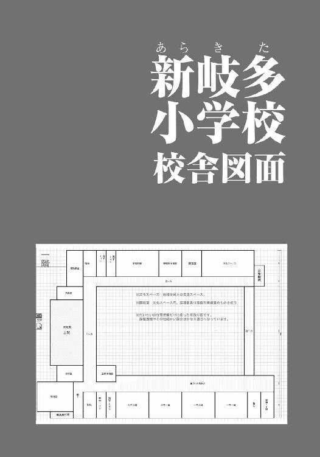
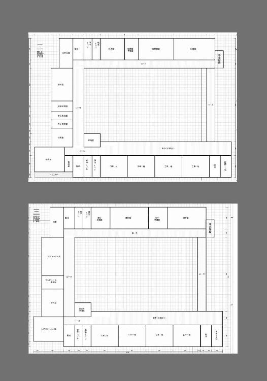

| 十五年前のぼく | |
| 笹原せつ | |
| 竹書房 (2013) | |
この作品は縦書きでレイアウトされています。
また、ご覧になる機種により、表示の差異が認められることがあります。
一部の漢字が簡略字で表示されていることがあります。
イラスト／げみ


僕のクラスのミイラ男
僕は図画工作の時間が好きだ。
鉛筆と筆で絵を描くのも、ノコギリと釘で本立てを作るのも、好きだ。
たぶん、ものを作るのが根っから好きなんだと思う。
とくに紙粘土でこねて自分の顔を作ったときは、ちょっと不細工だったけど、僕の特徴を上手に表現できたと自負している。勉強はイマイチで体育はからっきしの僕にとって、それは数少ない自慢と言っていい。
だから僕は、図画工作の時間が大好きだ。
じゃあ、ほかの時間はどうかと言うと、あまり好きではない。
とくに休み時間は大嫌いだ。
僕はこの六年一組が大嫌いなんだ。
なぜ嫌いかと言うと、だって、シイナがいるから。
シイナは勉強なら僕よりすこしダメなくらいだけど、かわりに運動ができる。五〇メートル走で工藤の次に速い。顔だって、いつも口が半開きだけど、形は悪くない。だから女子はみんなシイナのことが嫌いじゃない。相良さんとは恋人同士という噂だ。
でも、シイナはとても性格が悪い。横暴で、嫌味で、そのくせ口が上手い。
「な、みんな。今のはコイツが悪いよな」
シイナがそう言うと、だれも異論を挟まない。
武藤が僕の給食に墨汁をぶちまけたのは、僕が足を引っかけたせいらしい。
ヌマが僕の体操服にハサミを入れたのは、僕がヌマの成績をバカにしたからだそうだ。
児嶋先生の机にモグラの死体を置いたのは、ハチの仕業なのに、僕のせい。
なにもかも、悪いことはすべて、僕のせい。
僕は足を引っかけたことも、成績をバカにしたことも、モグラの死体を先生の机に置いたことも、一度だってないのに。
ああ、いやだ。シイナが嫌だ。
シイナが大嫌いだから、僕は夏休みの登校日だって、本当は休みたかったのに。
案の定、シイナは僕の顔を見ると、嫌がらせをはじめてきた。
「だから罰ゲームだよ、これは」
まるで、テレビのバラエティ番組みたいに。
シイナの命令で、小太りのハチがオドオドしながら、爪切りを近づけてくる。
「やめてよ、やめてよ」
「やめてよ、やめてよ」
シイナが嫌がる僕の真似をすると、クラスがどっと沸く。
ここに僕の味方はひとりもいない。
なすすべもなく、僕の人差し指は爪切りと向きあって、パチン、と爪を切られた。
「もっとだ、もっと深く」
「でも、これ以上は大変なことになるよ」
ハチは僕よりも泣きだしそうな顔をしていた。
「なんだよハチ公、盛り下がるだろ。いけるいける、ワッショイワッショイ」
シイナがはしゃぎながら持ちあげるのは、僕が紙粘土で作った、僕の顔。それが僕にとってどれほど大切なものか知ってて、わざとやっているんだ。
頭が熱くなる。シイナたちにライターで太ももを炙られたときとおなじぐらい、頭が熱くなって、自分で自分を止められなくなる。
「やめろよ、バカ！」
ハチを突き飛ばし、シイナにつかみかかろうとした。
でも、乱暴に組みついたら、紙粘土の顔が床に落ちて砕けてしまう。僕の顔が、壊れてしまう。そんなのは耐えられない。
そんな一瞬の戸惑いを、シイナは見逃すことなく僕のお腹に膝を入れた。息が詰まって、苦しくて、僕は何歩かよろめいて、尻餅をつく。
すぐ目の前に、白い顔が落ちてきた。床にぶつかって、紙粘土の顔が砕けた。
僕の顔が砕けた。
「あーあー、おまえが空気読まないからだぞ？」
なんだか僕は、自分の魂まで砕けてしまったような気がして、抗う力をすべて失った。ただ、それでも爪切りが指の肉に触れるほど食いこんでくると、恐怖のあまり助けを求めざるをえない。
声には出さず、視線ばかりをまわりに向ける。
学級委員の北村君。
近所に住んでるケン坊。
身長の高い小久保君。
小倉さん。
西さん。
みんな笑っているか、目を逸らすかで、助けてくれる人はいない。
当たり前だ。僕だってわかっている。おなじ立場なら僕だってシイナにへつらっていただろうから。以前は僕が、ハチみたいにいじめられっ子を追いつめる役だったから。
ミチュン。
嫌な音がした。爪だけでなく、もっと柔らかいものも千切り取る音。
「いぃ、い、痛い」
血の流れた指を押さえて、僕はうめいた。
「いぃ、い、痛い」
シイナが僕の真似をして、みんなが笑う。
昔、僕があいつを笑っていたみたいに、みんなが僕を笑う。
もしかしたら、これは罰なのかもしれない。
あいつに対して、罪を犯したことへの、罰。
だとしたら、あいつに許しを請えば、この痛みもなくなるのだろうか。
「あう、うぅ、おう」
重たいドアがきしむような唸り声が、教室の隅から聞こえた。
クラスの一番後ろ、窓際。
車椅子に座ったあいつが、また唸り声をあげている。ミイラ男みたいに包帯まみれで、顔もわからない男の子。
包帯の下からは、僕の指先よりずっと強烈な、血の匂いがする。砕けてしまった紙粘土像みたいに、顔を失った男の子。包帯の隙間から覗ける目は、どこを見ているのかもわからなくて、ミルクコーヒーみたいに濁っている。
だれもそちらを見ない。
見たら呪われるからとでも言うように。罪の結晶がそこにあるとでも言うように。
気がつくと、僕の意識は痛みよりも彼に注がれていた。
シイナとクラスメイトの嘲笑が遠のいていく。
もうここには僕とあいつしかいない。
いじめられっ子の僕と、もういじめられることもない男の子。
僕のクラスの、山路君。
積み木崩し
永島英
積みあげてきたものなど、わずかな衝撃で崩れ落ちるものだ。
幼稚園のころ、自分の背丈ぐらいまで〝建築〟した積み木のお城が、友達の不用意なお手つきで倒壊したように。崩れた積み木がコップまで倒して、ジュースがべつのオモチャをベトベトにしてしまう二次災害のオマケ付き。
不運のドミノ倒しと言ってもいい。
それはなんの前触れもなく、突然訪れた。
「永島さんとはもう仕事をしたくありませんね」
取引先の一言で、文具会社勤務の永島英という一社員は崩れ去った。
居酒屋接待でたらふく焼酎を飲まされた翌日のこと。これから商談に入ろうというとき、流通会社の西脇部長が切りだしてきたのだ。
「それは、当社との取引を止めるというお考えでしょうか」
「いやいや違う違う、そうじゃない。御社とは末永ぁく仲良くしたいよ」
「では......私個人の問題ということでしょうか」
うむ、と西脇は腕組みをして大げさにうなずいた。
「私はね、なにを考えているかもわからない人とは、商談をしたくはありません。何度も言いましたよね？ 腹割って話せる仲になりましょうって。なのに、永島さんは私の目でも顔でもなく、頭ばかり見てる」
接待時とおなじ穏やかな口調で、それまでおくびにも出さなかった不快感を言葉にし、永島を切って捨てる。その言葉はハンマーのように痛烈な一撃となって、二日酔いの頭に叩きこまれた。
「目でなく頭を見ていたでしょう、永島さん」
言葉を失った永島に、さらなる追い打ちがやってくる。
「西脇さん、誤解です。そのことでしたら、私は気にしていません」
「そのこと、とは？」
永島は口ごもった。言えるはずがない。
あなたの頭髪がときおり不自然に傾いていることです、などと言えるはずがない。
「ねえ、なんのことです？ ねえ、永島さん？」
言葉が詰まれば息も詰まる。窒息しそうな気分で、ますます西脇の顔を見ることが恐ろしくなった。彼の表情を想像するだけで胃がじくじくと痛む。
二日酔いも相まって、吐き気が喉を突いた。
吐き出したのは胃液でなく、自分でも予想外のセリフだった。
「腹を割って話せる仲というのは、頭だって剝きだしにできるってことでしょうか」
出入り禁止を申し渡された永島に、上司や同僚は存外に優しかった。
「西脇は難癖の常習犯だよ。足下を見てストレス解消してるだけだ」
「そうそう、気にするこっちゃない。定期的に担当を変えてやれば、仕事はキッチリ受けてくれるんだ。Ｂ社の横田にくらべりゃ無害なもんさ」
気に病む必要はないという温情を受けた一ヶ月後、永島は退職した。大学卒業後、就職浪人を二年つづけてようやく見つけた食い扶持だった。
積み木崩しはなお止まらない。
梨恵から電話があったのは、ちょうど無職一日目のことだ。
『ごめんね、もう会えない』
やけに沈鬱な声なので、携帯電話が壊れたのかと思った。
「会えないって、どうしてさ」
『本当にごめんなさい、本当に、本当に』
あとは謝罪をくり返すばかりだ。壊れた機械のように、延々と。
「頼むから、理由を教えてくれ。でないと納得できないよ」
女々しい願いかもしれないが、サッパリと諦められるほど浅い付きあいでもない。大学のころから交際をはじめて、四年の歳月をかけて思い出を積み重ねてきたのだ。
その積み重ねを、彼女は一言で突き崩した。
『だってエイ君、私に目も合わせてくれないじゃない。いつ心を開いてくれるかわからない人と、これ以上一緒にいられないよ』
仕事も恋人も失って、あふれるほどに余った時間は無為に流れていく。
１Ｋの粗末なアパートで昼ごろまで惰眠をむさぼり、目が覚めれば朝食と昼食を兼ねて適当なものを適当にむさぼり、気が向けばぶらぶらと外に出て、気が向かなければ家でごろごろするばかりの一日。もちろん夕食も適当、適当、寝る時間も適当。
「やることって、こんなにもなかったのか」
ベッドに横たわり、うんざりした気分でそうつぶやいた。
適当な生活は退屈を積み重ねて、心を腐らせていく。永島は腐りかけていた。腐敗ガスを吐き出してすこしでも気を楽にするため、徐々に独り言が増えてきた。
昔は違った。腐る暇もなかった。
時間があれば恋人とのデートや映画鑑賞におもむいた。
さらに以前は受験勉強に勤しみつつ、友人と遊ぶために睡眠時間を削った。
もっと前は、遊ぶためならなんでもした。
ＴＶゲームに打ちこんで親に叱られ、学校の裏山を駆けまわって帰りが遅くなることもあり──そんな幼い日々の積み重ねが、突如として崩れ去ることもあった。
「そういえば、あのころからだったな」
顔に手の平をかぶせると、表情筋がこわばっているのがわかった。他者から見ればなにを考えているかわからない顔がそこにある。
ベッドから身を起こし、姿見でいまの自分と向きあってみた。
幼いころの表情豊かな少年はどこにもいない。輝くような笑みも、好奇心に裏打ちされた喫驚顔も、悔しさに歪んだ表情も、一切合切見あたらない。
「くたびれたもんだな、おまえ」
首元のよれたＴシャツや膝丈のズボンは部屋着なので仕方ない、としておこう。
ブロッコリーのように膨らんだ髪も、癖毛気味なのでやむなし。
だが、無精ヒゲの散らばった顔は言い訳できない。こわばった口元が浅ましい歪みを浮かべているのも見苦しい。
そして、きっとくたびれきっているであろう目を見ようとしたとき、ひとりでに視線が横に逸れた。もう一度試してみたが、気がつけば首元を見ている。
「やっぱり、ダメか」
鏡のなかの自分とさえ、目を合わせようとすると、思考が急に鈍くなって衝動的に視線を泳がせてしまう。意図せずそうなる状態にまで、いまの永島は陥っていた。
その癖を西脇に気づかれたとき、積み木が崩れる音が聞こえたような気がして、永島は会社を辞めることを決意していた。
「仕事どころか恋人相手にもこれじゃ、フラれても仕方ないか」
腹に溜まった腐敗ガスを言葉にして吐き出す。
あるいは、もしかすると。
積み木を突き崩したのは西脇ではないのかもしれない。
もっと昔、他者と目を合わせることができなくなったとき、すでに永島の人生という積み木は崩れはじめていたのではないか。だとすれば、今後の人生は跡形もなく壊れきるまでの敗残処理となろう。
きっと、すべては十五年前に終わっていたのだ。
「......バカバカしい」
後ろ向きで独りよがりな思考がおかしくて、失笑した。
「ひとりでいると、やっぱり脳が腐るな」
だれかと会話したいと思い、携帯電話を取り出した。
真っ先に梨恵を思い出したが、もちろん却下。
次の候補を思いつくには少しばかり手間がかかった。会社の同僚はいまごろ胃を痛くして働いている最中だろうし、さしたる用事もなく気軽に電話できる仲でもない。かと言って大学時代の友人も、梨恵との思い出を彩るオブジェのようにしか思えなかった。
行き着いたのは、大学以前によく遊んでいた友人だ。
「ハッチ......は、無理か」
昼間の長電話を許されるほど、警察という職業は生温くないだろう。
だが、もし愚痴を聞いてもらうならやはり彼だ。蜂須賀裕真との付きあいは小学校から続いている。永島が人の目を見られなくなったころのことも、彼ならよく知っている。
そうだ。彼なら知っている。
最初の積み木崩しは十五年前、ハッチとともにすごした故郷で起こったのだ。
携帯電話が突如として呼び出し音をかき鳴らした。
液晶画面に表示されたのは、「母」の一文字。
「はい、もしもし」
『もしもし、ヒデ？ あんた、まだ仕事は見つかってないの？』
「やめて一ヶ月も経ってないのにホイホイ見つかるもんじゃないよ」
『でしょうねぇ、最近どこも難しいみたいだから。父さんの会社も社長さんが自動車で事故おこして大変だったのよ。息子さんたちが輸血しようとしたら血液型があわなくて、あんたどうなったと思う？』
「なんの話だよ」
母は昔から話を飛躍させるのが得意だった。
『社長さんと息子さん、血が繫がってなかったらしいの』
「だからなんの話だよ」
『奥さんが浮気してできた子どもらしいんだけど、そのこと息子さんに問いつめられて奥さん階段から落ちちゃって、息子さんは鬱になっちゃうしで、もう将棋倒しね』
どうやら積み木崩しはよそでも起こっているらしい。
『あんたは体だいじょうぶ？』
話題がコロコロ変わるのも、無闇に心配性なのも平常運転だ。それを苛立たしく思うことが妙に懐かしくて、かえって和やかな気分にさせられる。
「問題ないよ。そろそろ仕事も探しだすから心配しないで」
『じゃああんた、同窓会は出る？ 出欠確認のお手紙、うちに届いたんだけど』
また話題が変わった。
「いや、出ない。欠席にマルつけて返信してくれ」
『そうなの？ ハッチ君も来るって言ってたわよ』
永島はすこし間を置いて考え、ふいに息を飲んだ。
ハッチとは小中とおなじ学校だったが、おなじクラスだったのは一度しかない。
「新岐多小の同窓会？」
『そうそう、六年生の。新岐多小学校が廃校になっちゃうから、最後に思い出の校舎で会いましょう、だってさ。あんたは六年の途中からしかいなかったけど、せっかくだし出席したら？ ほら、あのよくうちに来てた子......椎名くん？ あの子も実家に帰ってるらしいから、会えると思うわよ』
息を二度、三度と飲む。
表情が、全身が、こわばっていく。
視線が泳いで視界が揺れ動く。
どうしようもない拒絶反応が自律神経を冒し、脂汗すらにじみ出た。
「考えとく」
『あらそう？ なるべくはやく決めなさいね』
永島はもうすぐ出かけるからと適当にでっちあげて電話を切った。
ベッドにへたりこみ、額の汗を拭う。視界はもう揺れていないが、船酔いをしたみたいに気分が悪い。昼に食べたベーコンエッグが逆流しそうだ。
同窓会なんて、絶対に行きたくない。
「椎名と顔をあわせるために同窓会なんて、馬鹿げてる」
脳裏によぎる少年の顔に吐瀉物を吐きかけてやりたい気分だ。
人を小馬鹿にしたような半開きの口。厚ぼったいまぶたと、糸のように切れ長な目。それらが不格好に見えない程度の端正なバランスで成り立った顔が、永島という積み木を最初に崩した。
──ちゃんと顔見ろよ、ヒデ虫。
人の顔を見ようとするたび、そんな声が聞こえてくる。すこし甲高い、刃物のように鋭い声。思い出すだけで息が詰まり、視線が定まらなくなる。
ぐらぐら揺れる。なじみきったはずの部屋が、見知らぬ船の客室のように揺れる。
喚きだしたくなったとき、ぴたりと焦点が合った。
スチールラックに飾られた仮面が、物も言わず永島を見ている。
大学の卒業旅行でイタリアへ行ったときに購入した、本場のベネチアンマスクだ。鼻から上を覆う形の白い素地に、水の都の風景画が細やかに描きこまれ、黒と金で退廃的に装飾されている。瞳もないのに、目で訴えかけてくるかのような妖しい迫力があるのだが、同行した梨恵は、そこに拒絶反応を示した。
「本当に買うの？」
彼女はイタリアで、何度もそう問いかけてきたものだ。
だが梨恵と違って、永島はその眼力に不思議と惹きつけられてやまない。
今もまた、眼球のない目が永島を捉えて離さない。
仮面は語りかけてくる。
──ただ崩れ落ちるだけでいいのか？
──美しい思い出を、ただ漫然と失うのを良しとするのか？
それは夢想にすぎない。白日夢ですらない、虚しい思いこみ。
過去を思い出すことなど無意味だ。もうすべては失われてしまったのだから。
「でも......ずっとこのままは、嫌だよな」
永島は携帯電話を睨みつけて、母にメールを打ちだした。
失ったものはもう取り戻せない。仕事も、恋人も。ならせめて、なぜそれらを失わなければならなかったのか、根本的な原因を理解したい。
答えはきっと、新岐多小学校六年一組の同窓会で待っている。
そこで十五年前のケジメをつけよう。
同窓会
永島英
車窓から見る故郷の山々はまばらに白く染まっていた。
ＪＲから私鉄Ｇ線に乗り継ぎ、北上していくにつれて緑が深まっていくなか、ひときわ目を惹くその白さは、雪のような花を咲かせる桜の木々だ。〈岐多の雪桜〉と呼んで持ちあげる地元民もいるが、観光名所になりうるほどの集客は望めない。その理由は永島もなんとなく理解している。
白髪染めを怠った老婆の頭を見ているようで、白けた気分になるのだ。
そんな気分が懐かしくもある。実家に戻るのはおよそ一年三ヶ月ぶりだ。
去年の暮れから正月にかけては梨恵とふたりで過ごし、家族への挨拶は電話で済ませた。その記憶もいまではどこか空々しい。夢でも見ていたような心地だ。
やがて山に囲まれていた風景が開けて、近景に田畑が現れる。電車が進むにつれて、それらもまばらな住宅地に侵食されていく。かといって田畑も消えることなく、時代の流れに抗うようにその姿を誇示していた。
ベッドタウンにもなりきれない半端な片田舎で、鉄道はどん詰まりとなった。
『北山ぁ、北山ぁ』
浪曲じみた唄いぶりで車掌が告げるのを聞いて、永島は降車した。北の山から吹きおろしてくる風は冷たく、往生際の悪い冬の名残を感じさせる。
北山駅は新岐多住民の最寄り駅だ。
改札を出てすぐ開きっぱなしの出口を抜ければ、余った土地を無造作に使った駅前広場がある。飲食店もコンビニも見あたらず、植えこみがぽつぽつと立つばかりの、だだっ広いという形容がよく似合う、正真正銘、広場以外の何物でもない広場だ。夕方の陽射しを浴びてすべての影が間延びしているのが、なけなしの茶目っ気といったところか。
「エイちゃん！ おい、エイちゃん！」
よく通る低い声は、駅舎からまっすぐ前方のロータリー手前から放たれていた。ダークグレーの背広に白っぽい薄手のスプリングコートを重ねた男が、太い腕を振ってニッカリと笑う。
「よう、ハッチ」
永島は小走りに旧友に駆けよった。
「出迎えサンキュ」
「おばさんに頼まれちまったからな。車は出さないでいいんだよな？」
「ああ、同窓会まで時間もあるから学校まで歩こう」
「アイアイサー。エイちゃんは滅多に帰ってこないから、こうして歩くのも五十年ぶりって気分だよ」
「五十年のあいだに太ったんじゃないか」
「すこし弛んできたかもな。インハイに出てたころが懐かしいよ」
永島はハッチと肩を並べて歩きだした。
蜂須賀裕真は永島にとって無二の親友である。
ハッチというあだ名は、もちろん名字をもじったものだ。
ちなみに、永島英のエイちゃんというあだ名も、永と英の音読みから来ている。
小学六年生の二学期、永島は新岐多小学校に転校してきて彼に出会い、中学のころに親交を深め、高校ではふたりでこっそりビールを酌み交わした。彼が高校柔道の地区大会で優勝した記念にはじめて飲んだビールは、あまりに苦くて辟易させられた。ハッチにいたっては一口で顔を真っ赤にして、缶を空けるころには吐瀉物に突っ伏していた。
無様な思い出を笑って語りあえる、気持ちのよい男だ。
大学にあがってからは永島が地元を離れたので疎遠になったが、帰省するたびに顔をあわせて話をしている。それも彼が警察に就職してからは、タイミングがあわなくて電話で会話するに留まっているのだが。
それでもなお、かけがえのない友人と言えば、蜂須賀裕真の他にいない。
ふたりは閑静な住宅街を歩いていく。
背丈はだいたい同程度だが、歩幅は永島がやや大きく、肩幅と全体の厚みはハッチが数段上。歩みも威風堂々として力強い。
「仕事のほうは非番か？」
「ああ、うまいこと都合が取れた。課じゃ下っ端だからだれも期待してくんないんだ。自慢の大外刈りが泣くぜ」
「大外刈りを使わないぐらいが平和でいいよ、刑事さん」
ハッチは長らく青い制服を着て交番勤務をつづけていたが、つい最近になって私服を許される立場になったらしい。近ごろはパトロール中の姿を見かけることもなくなって寂しいとは、永島の母の言だ。
「エイちゃんは仕事やめたんだってな」
いきなりズバリと聞いてくる。率直な態度はいっそ清々しいほどだ。
「職質は堪忍してくれ」
永島は軽い気持ちでジョークを返した。
「刑事課の俺に訊問されるんだ、職質なんてレベルで済むと思うなよ？」
「爪のあいだに針を刺して自白させるんだな」
「そりゃ痛すぎる。着古した柔道着で煮汁つくって飲ませる程度だ」
ふたりの含み笑いがのどかな道に染み渡る。
駅前からつづく住宅街は夕暮れに差しかかって青みがかり、下校路を思い出す色彩を浮かべていた。懐かしさともの寂しさにため息が漏れそうになる。
「新岐多小学校、なくなるんだな」
感傷的に、永島は言った。
「名目上は休校だよ。生徒は北野小に移るけど、北野小に収まらなくなったら改めて新岐多小学校を使うんだと」
「でも人口は......」
「ひいき目に見て横這いだな」
実質的に新岐多小学校は廃校と見ていいだろう。名前こそ新の字がついているが、築三十年超の校舎である。改築にしろ増築にしろ、その権利を持つ者が費用を惜しめばそこまでだ。
「じゃあ、見納めのつもりでしっかり目に焼き付けるか」
住宅街が途切れたので、車の往来がすくない道路を横断する。正面に現れた廃工場と雑木林の合間、急勾配の上り坂を二十メートルほど登って頂きにたどりつくと、ふたりは広がる風景を見下ろした。
棚田から平地へとつづく田園風景の真ん中を、永島とハッチの歩いているやや広めの舗装路がまっすぐ伸びている。行き着く先は、赤茶けた三階建ての建物だ。
「学校......意外と小さいな」
小学校のころ城のように大きく感じた校舎は、見る陰もなくこぢんまりとしている。間もなく廃校になるためか、それとも自分が大きくなったせいか。
赤茶けた外装は木目調のタイルを貼りつけたもので、建築家が鉄筋コンクリートの味気なさを解消するために取り入れたものだという。その効果は抜群で、
──夕暮れの藍色に染まると、裏手の小さな山に溶けこむような風情がある。
というのは、汚れのすくない建築当初に校長が漏らした感想だという。
いまや夕日を浴びた西側は毒々しいほどに赤みが際だつ一方で、影になっている東側は煤けたように黒ずんでいる。レアで焼いたステーキの断面を思わせる生々しい陰影だ。今にも蠢きだしそうな印象は、小学六年生の二学期に転校してきたときと変わらない。
「小さいけど、昔のままか」
声が緊迫するのは、懐かしさばかりでなく、呪わしさもこみあげてくるからだ。
「エイちゃんは絶対にこないと思ったよ」
ハッチの声は、豪放な柔道家らしくない重苦しさに満ちていた。
彼がなにを言わんとしているかは理解できる。それを予期するだけで永島の心も重苦しくもたれていく。
「椎名のやつが来るらしいぞ」
やっぱり。予想通り。げんなりしてため息をついた。
椎名正武は六年一組のクラスメイトだ。
勉強は不得意だが、短距離走ではクラスでも屈指の健脚。
なにより、ある種の嗅覚に優れていた。
「わ、わ、わ、わかりません」
教師の質問に答えられなかった生徒が緊張してどもれば、
「わ、わ、わわ、わ、わ、わかりません」
大げさに真似て笑いを取るのが常套手段。
真似をされた生徒が羞恥に赤面すれば、椎名の取り巻きがその尻を蹴っ飛ばす。悲鳴があがれば、椎名がその真似をしてまた笑いを取る。そうやってクラスメイトの反応に探りを入れ、格好の標的を見出せば、あとはその生徒に攻撃を集中すればいい。
「ヨシモトとおなじだよ。俺がツッコミでこいつがボケだ」
椎名の嗅覚は的確だった。一度「面白い」と認識されれば、ワンパターンな冗談も定番ネタとして条件反射的に笑いが取れる。思考の単純な少年期ならなおのことだ。
だが、モノマネと尻蹴りで済むのは最初のうちにすぎない。
教科書を隠す、教科書を捨てる、机に落書きをする、なども序の口。
髪の毛をつかんで教室を引っ張りまわす、給食に絵の具を入れる、遠足の弁当に虫を入れる、墨の染みこんだ毛筆を喉まで突っこんで嘔吐させる、などなど。
エスカレートしていく悪乗りが、二学期に転校してきた永島には、ひどく不快なものに見えた。自分の手を汚さず、取り巻きを使役しているのがますます気に食わない。「ボケ役」の少年の泣き顔をただ見守っているのも、三日で限界に達した。
「座間くーん、ママのミルクでちゅよー」
給食の時間、教師が離席したのを見計らって、椎名の取り巻きはどこで調達したのか使用済みコンドームを箸でつまんで、「ボケ役」の給食に投げこもうとしていた。
その瞬間を、永島は見計らっていた。取り巻きの膝裏に蹴りを入れたのだ。
取り巻きが崩れ落ち、その場で膝を突く。
コンドームは宙を舞い、高みの見物をしていた椎名の顔にべちゃりと張りついた。
「ひえあっ」
教室が静まり返り、永島は何事もなかったかのように食事をつづけた。
やがてクスクスと笑い声が漏れ出し、椎名の顔がトマトのように赤くなっていく。
これでくだらないおふざけにも懲りるだろう──そんな考えがあまりに早計であったことは、間もなく思いしらされた。
翌日から「ボケ役」は永島になった。
学校への道を歩いていると、椎名の仕打ちが思い出される。
田んぼにランドセルを投げこまれたこともあった。
田んぼで捕まえたウシガエルにキスをさせられたこともある。
そのウシガエルをズボンの中に入れられて、思いきり蹴られた。ひんやりしてヌルヌルしたものが暴れまわるばかりか、男にとって最大の弱点に痛手を受けて、永島はその場でカエルのような唸り声をあげた。ウシガエルが破裂しなかったのは不幸中の幸いか。
「今になって思うんだけど、椎名も必死だったんだろうな」
永島はおぞましい過去に表情を歪めながら、冷静に分析するよう努めた。
「あのコンドームの一件で、ヘタすると自分がボケ役にされてしまうかもしれなかった。だから、だれかを生け贄にするしかなかった。そう考えると、アイツも可哀想......とは、思えないけど、理解できないこともない」
すくなくとも理屈で相手の心情をなぞることはできる。
相手はけっして理の通じない怪物ではない。過剰に恐れる必要などありはしない。
「まあ、たしかにな」
ハッチはうなずいた。
「エイちゃんは知ってるかな。アイツが東京で美容師やってたって」
「ああ、母さんがそんなこと言ってた」
いつの世も主婦の情報網は油断できない。井戸端会議は原始的なインターネットのようなものだと永島は考えている。
「でも最近になって、急に仕事をやめて戻ってきたんだとさ」
「それは初耳だ」
「アイツは口は達者だが、相手を気づかえるタイプじゃあないからな。意外と苦労したのかもよ」
「何となくわかるよ、美容師らしく客を立てるトークなんてできそうにないな。でもアイツだっていい年なんだから、さすがに少しぐらい成長してるんじゃないのか？」
永島は椎名とべつの高校に進学して以降、彼の動向をほとんど知らない。
変わっていてほしい、というのが正直なところだ。成長した椎名が過去を悔い、心から謝罪してくれれば、自分のなかのわだかまりも氷解するのではないか。
だが、その一方で、変わらないでいてほしいという気持ちもあった。
昔のままの椎名を殴り殺してやりたい欲求が、腹の底でうずうずと蠢いている。過去の苦しみをそのまま返却して、屈辱を味わわせてやりたい。
ハッチは苦笑してかぶりを振る。
「人づてに聞くかぎりじゃ、昔のまんまだとさ」
「そうか......ハッチとは違うんだな」
ぎくりとハッチが身震いし、太い眉を情けなく八の字にした。
「悪かったよ、エイちゃん。本当に、マジで、どうしようもなく」
「べつに皮肉じゃないよ」
「うん、わかってる。わかってはいるけどなぁ......」
筋骨隆々の現職刑事にしては頼りなく見えるほど肩を縮めている。
すくなくとも彼には、過去を悔やむだけの良心があるということだ。
「正直、俺はあの校舎で、エイちゃんにどんな顔で向きあっていいか、わからない」
ハッチ──蜂須賀裕真。
彼と親交を深めたのは中学のころで、小学校のころはむしろ正反対の関係だった。永島が他人の目を見ることができなくなった原因のひとりと言ってもいい。
かつてハッチは、椎名率いるいじめっ子グループの一員だった。
そのことを責めるつもりは、すでにない。
「俺が登校拒否をやめて高校に進学できたのは、ハッチのおかげだ」
馬鹿げた話だが、ハッチとは一度取っ組みあいの喧嘩をして、それ以降は無二の親友として付きあってきた。彼が柔道部に入り、サッカー部の椎名と疎遠になったからこその、不思議な巡りあわせである。
「もし椎名が昔のままでも、俺の筋肉でエイちゃんを守ってやるよ」
ハッチはぐいっと腕をあげて力こぶを作った。スーツとコートがパンパンに張りつめている。いまの彼なら、暴力で椎名に従わされることもあるまい。
「昔はチビでデブだったのにな」
「それも言うなよぉ、昔の写真とか二度と見たくないぜ」
笑いあって、歩みを止めた。
眼前にコの字型の三階建てがそびえ立っている。
「行くか、同窓会」
「決闘に乗りこむみたいだな、エイちゃん」
ふたりは新岐多小学校の敷地へと踏みこんだ。
校舎の右側に回りこんで生徒用の出入り口に向かってみると、
『六年一組同窓会は職員玄関へ』
と張り紙がされていた。誘導用に矢印も書かれている。
「職員玄関って、どんなのだっけ」
「ええと......たしか保健室のすぐ横」
「よく覚えてるな、ハッチ。体育でしょっちゅう転んでただけのことはある」
「デブは転がりやすい生き物なんだよ、勘弁しろよ」
矢印に従ってさらに校舎を回りこむと、グラウンドに面した保健室の脇に職員用玄関があった。生徒用玄関にくらべるとこぢんまりとしている。蛍光灯の白い光で質素な下駄箱が無機質に照らしだされると、暗みはじめた外の風景と切り離された空間のように感じられる。
いそいそとスリッパを履いている女が二人いた。
「あれ、ハチくん？」
一方がハッチを見て相好を崩す。明るいキツネ色の髪に星をちりばめたようなリップが似合う華やかな顔立ちだ。やや痩せ形で、ミニスカートにヒールの高いブーツなど、若々しい出で立ちもよく似合っている。
「よ、相良。子どもは元気？」
「元気元気、超元気。晩ご飯にピーマンが出ると泣き叫ぶぐらい元気元気」
口ぶりは軽妙、というより軽薄か。子持ちのわりに所帯じみた雰囲気が一切ない。小学校のころから派手好きだった相良深雪らしくはあるが、永島の目にはせいぜい女子高生にしか見えなかった。
彼女は視線を永島に移し、しばし考えこんだ。
「そっちは......ちょっと待ってね、当てるから」
「もしかして永島君？」
言い当ててきたのは、相良深雪の後ろで静かにスリッパを履いていた女だ。ショートの黒髪にグレーのスカートスーツが派手な深雪と対照的で、ひどく落ちついた雰囲気を漂わせている。
「やーだ、言わないでよせーこちゃん。当たりなの？ 永島君？」
相良深雪は馴れ馴れしく短髪の「せーこちゃん」を揺さぶり、子猫のように小首をかしげて永島の顔を覗きこんでくる。
ポン、とハッチが手を打つ。
「青柳さん？ 青柳聖子か？」
永島の記憶にはない名前だ。おそらく目立たない生徒だったのだろう。控え目にうなずく仕種からも、自己主張というものが窺えない。
「うん、ひさしぶり。蜂須賀君、警察やってるんだってね」
「そっちはイラストレーターだろ？ どんな絵描いてるの？」
「ナイショ」
茶目っ気のあるセリフだが表情にとぼしく、取りつく島がない。
「ねーねー、永島君はなにやってるの？」
人なつっこい相良深雪に見つめられ、永島は目を逸らした。
「ナイショ」
「アハハ、永島君ってマジメだからサラリーマンとか？ やっぱり定職についてる男の人っていいよね。うちの旦那なんていまだに派遣でさー」
一方的に多弁をふるい、無意識に痛いところを突いてくる。相良深雪は昔からそうだったが、いまの永島にとっては少々苦手なタイプかもしれない。
取り留めのない言葉を止めたのは、彼女たちの背後から差しこまれた声だった。
「派遣未満の無職にも優しくしてくれよ、深雪」
やや甲高い、鳥を思わせる声に、永島は鳥肌を立てた。
玄関の奥で左折した廊下の向こうから、スキニーな黒パンツに包まれた細く長い脚が踏みだしてくる。金糸入りの黒い開襟シャツと、耳元や首や手首を飾るシルバーアクセサリが、蛍光灯の光を照り返して鋭く輝いた。
「やーだ、シーくん聞いてたの？」
「すぐそこにいたよ。ハチ公がいるなら呼んでくれりゃいいのに」
気さくに「よ」と手をあげてくる。脚だけでなく腕もスマートで長い。
ハッチは何事もなかったかのように「よ」と返す。こちらは太く、短い。
自分も気さくに返すべきだと永島は思った。過去のことなど気にしていない、もうおまえなんか怖くないと示すために。
（いくら昔と変わらなくても、いい大人が昔のいじめをくり返すものか）
服装はすこし派手でチャラチャラしているかもしれないが、ガラが悪いと言うほどではない──けれど、顔を見ることができない。
「あん？ 永島、だよな。どうした、俺のこと覚えてないか？」
椎名の甲高い声に動悸が乱れる。
今すぐにでも引き返したいところだが、ここを乗りこえなければ自分は一生他人の顔を見ることができないだろう。
意を決して、手をあげた。
「無職仲間だな、椎名。俺もこのあいだ、仕事やめたばっかりだ」
軽口を言うことができても、目を見ることはまだできない。
それでも一歩前進。椎名が好ましい反応を返してくれれば、さらに一歩前進できるはずだ。永島はまた固唾を飲み、返事を待った。
「一緒にすんなよ」
椎名は吐き捨てた。
「俺は人生ってやつを考えなおしたんだよ。美容師なんていうのは相手の顔色見るばっかりで、自分の意志ってものがねぇんだ。面白いもんじゃあねぇ」
ヘヘ、と笑って肩をすくめる。おどけた仕種で軽妙な口調、昔のままの彼だ。
凄んだ一瞬のカミソリのような切れ味も、昔と変わらない。
椎名正武はいまも変わらず、自分を見下している。それが悔しくて、恥ずかしくて、頭をかきむしりたくなった。
「それじゃ行こうか、エイちゃん」
ハッチが強引に腕を引っ張ってくれたおかげで、いくらか冷静になれた。同窓会どころではなくなりかけていたが、ここで尻込みしては二度と過去の呪縛から逃れられない。
いまはやり過ごし、耐え抜き、克服すべきだ。
「椎名、また後でな」
「ハハッ、子豚のハチ公に呼び捨てにされちまったよ」
永島とハッチはスリッパを履き、椎名の横を通りすぎようとした。
「仕事なら相手の顔色を見るのは当たり前じゃないかな」
青柳聖子が、豆腐に包丁を入れるようにスルリと口を挟んだ。
「なにって？」
存在感の薄かった女の不意打ちに、椎名の声はすこし上擦った。
「美容師の話よ。顔色を見ると言っても、クライアントやお客さんの望むことを理解するって意味だけど。我を通すことだけ考えたら失敗して当然だからね。イラストの仕事ならクライアントの要望と客層に適した絵柄や作風をつねに考慮して、折りあいをつけながら自分の味を出していくのが普通のことよ」
声色こそ落ちついているが、青柳の語り口は饒舌だった。
「それは自分の味だけじゃ勝負できないってことじゃないのか？」
「自分の実力を冷静に見極めれば、だれでも真っ当に仕事できるってことよ」
椎名は黙りこんだ。痛いところを突かれたのだろう。
同時に永島も言葉を失っていた。突然の弁舌に啞然としながら、図星を指された気分で息が詰まる。失業者にはいささか辛い物言いだ。
「でも、人生を見直すつもりなら、仕事をやめるのも悪くないよ。二十代のうちはどうにか取り返しがつくからね」
フォローを入れた青柳の顔は、心なしか自分に向けられている気がした。
面白くないのは椎名だろう。正面切って負け犬だと言われたようなものだ。敗北感にさいなまれて黙っていられるほど、彼は謙虚な性格ではない。
「椎名、おい椎名！ 成人式以来じゃないか、椎名！」
玄関からスキンヘッドの男が入ってこなければ、一触即発の状況だった。
「シイナシイナうるせぇよ、武藤」
「だってよ、椎名！ おまえ東京行ったら全然連絡くれなくなったじゃん！」
ふたりが盛りあがっているうちに、永島たちは青柳と相良を連れて廊下を進んだ。
もー、と相良がふてくされる。
「せーこちゃん、さっきのは言ーすぎだよ」
「だって私、アイツ嫌いだから」
そのときはじめて、青柳は嫌悪感に口の端を歪めた。
「えー、ハッキリ言わないでよせーこちゃん」
「成人式のときのこと忘れた？ 私が絵のお仕事したいって言ったら、あいつ鼻で笑ったのよ。思い出すだけで腹が立つの。ペンタブで撲殺してやりたい」
「ペンで？ ペンでやっちゃうの？」
「ペンじゃなくてペンタブレット、ペンを感知する土台のほう。仕事で使う液晶パネルつきのヤツなんて、重量的にはちょっとした凶器だよ？」
「それでやっちゃうの？」
「やっちゃいたい。あーもう、まだ収まらない。あいつ、いい年してまだバイト気分で仕事やってるのよ。信じられない」
大人しく見えた青柳の率直な怒りは、いっそ清々しいほどだった。
「エイちゃん、つまりそういうことだよ」
「どういうことだよ、ハッチ」
ハッチがにんまりと相好を崩す。目元は見られずとも、口元だけで気持ちよくなる大らかな笑い方だった。
「椎名は手の付けられない暴君なんかじゃない。隙だらけの普通の人間だ」
同窓会の会場は三階、六年一組の教室となっている。
時間にはまだ余裕があるので、永島とハッチは青柳たちと別れて一階から校舎を見てまわることにした。まだ心の準備ができていない永島に気を遣ったのか、ハッチが誘ってくれたのだ。
新岐多小学校の内装は、外装とおなじく木目調のタイルが貼りつけられている。さらに床には、本物の木を使ったタイルを敷き詰めていた。おかげで、木造校舎を歩いているような錯覚が起きる。その錯覚がやけに懐かしくて、おぼろげな校舎の記憶がくっきりと蘇りつつあった。
「ああ、そういえば玄関はこんなのだったっけ」
「下駄箱ってこんなに小さかったんだな」
生徒用玄関に差しかかるなり、胸に懐かしさがこみあげた。コの字型校舎の縦線部分、西棟に大きく陣取った生徒用玄関ではあるが、そこに並ぶ下駄箱は永島の肩ほどの高さもない。高校の下駄箱は優に目線ほどの高さがあったはずだ。
「昔はハッチの方が小さいぐらいだったのにな」
玄関にかぎらず、多くのものは小学生の使用を前提に小さく作られている。さきほどちらりと覗いた階段も段差が低く、大人の脚ではかえって不便そうに見えた。
「さっきから気になってたんだけど」
永島は廊下の真ん中におよそ三メートル間隔で並んでいる木の柱を顎で示した。
「この気持ち悪いのはなんだ」
高さ一メートル余りの木の柱は、人の顔が彫りこまれたブロックが土台に四つ積み重なってできている。顔の出来映えは個々まったく違い、上手も下手も、無表情も笑顔も、人に見えない獣じみた代物まで千差万別だった。
「トーテムポールじゃないか？」
「なんでトーテムポールが廊下の真ん中に並んでるんだよ」
「たしか新岐多の昔話でこういうのなかったか。顔地蔵とかなんとか」
ふたりして首を傾げていると、
「いいや」
と、声が投げかけられた。
「顔地蔵は後頭部にも顔がある地蔵の話だ。縦に重なってるわけじゃない」
長身の男が背後にいた。およそ一九〇センチはあるのではないか。
大きいわりに気配をまるで感じなかったので、ひどく驚いた──のは永島だけで、ハッチは平然と相手を見あげた。
「そう言えば、そんな話だったか」
「村の鼻つまみ者、乱暴者の太郎が神仏なにするものぞと鳥居を倒し、寺を燃やし、蹴っ飛ばした地蔵の後頭部に顔があった。翌日、太郎は死んだ。首がねじれて顔が後ろを向いていたという。地蔵でなく猿だったという話もあるが」
そこまで話すと、男はつま先をそっとトーテムポールに付けた。
「これは生徒と教師の記念制作だ。卒業生も百人ほど参加したらしい。土台の部分に制作年月があるだろう、つい最近だ。よく見て想像すればわかる範疇だろう」
すこしトゲのある物言いにハッチは苦笑し、永島は困惑する。
「ええと、おまえさんはだれだっけ？」
ハッチの問いかけに、男はすこし間を置いた。黙っているだけで迫力がにじみ出る。ただ長身だから威圧感があるばかりでなく、まるで日本刀じみた雰囲気があるのは、男だてらにスタイルが良いからだろうか。
広い肩幅と細腰のバランスが絶妙で、無造作な背の高さに歪さが感じられない。白いシャツに黒のジャケット、細身の黒チノパンというシンプルな色彩もよく似合っていた。目を見ずとも、やや面長だが端正な顔立ちをしていることはわかる。
「俺がだれか、想像もできないのか」
「うん、さっぱりわからん」
男の視線ははっきり言ってのけるハッチでなく、自分に向けられている気がした。
やがて男は、小さく顎を引き、静かに背を向けて名を告げる。
「座間健太」
え、と永島はハッチと同時に声をあげた。まったく想定外の回答だった。
歩み去る男の背に、幼き日の面影は見あたらない。
かつての彼は、永島がかばうまで、なすがままいじめられていた。小柄な体軀で椎名を見あげ、なにをされても腺病質の蒼い顔に卑屈な笑みを浮かべ、ただひたすらに媚びへつらう。生来の弱者であると思わせる少年だった。
それが今はどうだ。思い出したように振り返り、トーテムポールの頂点を指さす仕種はぶっきらぼうだが、無頼漢じみて堂々としている。臆病さの断片も見あたらない。
「これがどういう意味か、わかるか？」
手近なトーテムポールのてっぺんを見下ろすと、金色に光るものが置かれていた。
「画鋲だな、危なっかしい」
「こっちは別のものだ」
座間がつまみあげるものは、セミの抜け殻だった。
「トーテムポールごとに別のものが置いてある。向こうは雑巾と壊れたプラモだ」
「意味がわからん、なんの記念品だ。エイちゃん、わかる？」
「俺に振るなよ。しばらく地元を離れてたのに」
冴えた回答もできないふたりに、座間は小さく嘆息してふたたび背を向けた。
「たぶん──十五年前を思い出せってことじゃないのか」
そう言って、突き当たりの階段を登っていく。
一方的に疑問と回答を投げかけられて、しばし永島とハッチは途方にくれた。
「座間は......六年の二学期で転校したはずだよな、ハッチ」
「変わるもんだなぁ。すっかりイケメンだよ、座間のやつ」
「いじめられっ子と言えば俺かアイツだったのに」
永島は癖毛に触れ、不格好になっていないか確かめた。いじめられていたころは鳥の巣呼ばわりされたこともある髪だ。
座間は直毛だが、ライターで毛先をあぶられてチリチリにされたこともあるらしい。
ひとつ離れたトーテムポールを見てみると、ちょうどライターが置かれていた。
「いや、もうひとりいた」
ハッチは神妙な顔をしていた。
「なにがだ？」
「いじめられてたの。エイちゃんと座間以外に、もうひとりいたよ」
言われてようやく、記憶の蓋が開かれた。
それはすっかり忘却していた過去だった。
もしかすると、忘れたかった記憶かもしれない。
「山路君か」
脳裏をよぎる少年の姿は、まるでミイラ男だった。
顔も腕も白い包帯を巻かれ、目の焦点はあわず、口にするのは明瞭な言葉でなく濁った唸り声のみ。教師に指されることもなければ、級友に話しかけられることもない。給食の時間、彼の口に食事を運ぶ当番がまるで罰ゲームのように扱われていた。
「そう、アイツは......あ、でもエイちゃんは六年の二学期から転校してきたから、山路君がいじめられてたときのことは知らないのか」
「一学期のころ長々と入院してたって聞いたけど」
永島の知るかぎり、ミイラ男はいじめられっ子以前の存在だ。
みなが目を逸らしていた。そこにいないものとして扱っていた。
六年一組のタブー、山路悠紀夫。彼のことを、永島はなにも知らない。だれかに聞くことすら恐ろしいと感じていた。
「入院じゃなくて、行方不明だよ」
言ってから失言と思ったのか、ハッチは自分の口を塞ごうとした。が、すぐに考えなおして飲みこみかけた言葉を吐き出す。
「ヤマヂくんに連れて行かれたんだ」
「山路君が山路君を？」
「あの山路君じゃなくて、七不思議のヤマヂくんだ」
その名はぞろりと肌をなめるような響きで、腕と背筋に鳥肌が立った。
どうやら記憶の蓋は二重になっていたらしく、長年のあいだに押し殺されてきたものが急浮上する。
七不思議のヤマヂくん。
クラスメイトとおなじ名前の怪異。
おはぎをあげたら、なんでも願いを叶えてくれる、不思議な存在。
ピン、ポン、パン、ポン、と校内放送が流れだした。
『同窓生のみなさま、思い出の品を校内に展示しております。是非とも目と手と口で確かめて、懐かしい記憶を呼び覚ましてください』
「なんじゃそりゃ」
ハッチが茶化す横で、永島の鳥肌は全身に広がっていた。校内放送を聞いた瞬間から寒気が倍増したのだ。
高い声質は女性のようだが、舌っ足らずな口調は子どものようでもあった。ボソボソと囁くようなしゃべり方が、どうにも癇に障る。理屈でなく鼓膜と素肌で不気味な空気を感じざるをえない。
「思い出の品っていうのは......この画鋲とかセミの抜け殻のことかもしれない」
なぜそう思ったのかはわからない。ただ、座間が言ったように想像を働かせてみると、自然とその発想に行き着いたのだ。
「ああ、なるほど。たしかに画鋲もセミの抜け殻も、小学校の思い出にはなるか」
「でもライターは、どういうことだろう」
ふたりはトーテムポールをひとつひとつ確かめていく。
カッターナイフ。
輪ゴム。
折れた鉛筆。
玄関前の廊下を突き当たりで曲がり、コの字の下線部分に当たる北棟を歩いていく。特別教室の並ぶ棟で、一階には家庭科室などがある。
トーテムポールも健在。上に置かれているのは、まず裁縫用の針。
次のトーテムポールのそばには女がいた。
「なによ、このペットボトル」
クリーム色のパンツルックで中性的な清潔感を醸しだす一方、豊かな胸はすこしばかり女性的すぎるかもしれない。その膨らみの頂点に、「三田村」と書かれた紙の札が安全ピンで留められている。
「三田村か。その名札は？」
「あら、蜂須賀くん久しぶり。名札なら教室にあるから取ってきたら？ それと、染矢さんがお菓子を用意してくれてるけど、そっちはまだつまんじゃダメよ」
三田村──三田村芙美。名前はなんとなく覚えているが、どんな女子であったかはまるで記憶にない。
「染矢の家の大福は旨いからなぁ。それで、どうかしたのか？」
「うん、まだ時間があるから校内を歩いてたんだけど──これ、おかしくない？」
永島とハッチも確認してみると、五〇〇ミリリットルペットボトルに黄色く濁った半透明の液体がたっぷり入っていた。ラベルはスポーツドリンクだが、内容物の色はあきらかに別のなにかだ。
「腐ってるのかもな。ちょっと開けてみるけど、離れててくれ」
ハッチは永島と三田村が二歩引くのを待ち、自分の顔からも離してペットボトルの蓋を開けた。たちまちあふれだした刺激臭に三人は顔をしかめる。
「ガソリンだ、こいつは」
現職刑事の顔が厳しく引き締まる。
「おいおい、こっちには犬の糞だぞ」
ひとつ先のトーテムポールから、胸に「工藤」の名札を付けた男が呼びかけてくる。洒落たジャージにカーゴパンツの出で立ちは見るからに活動的だ。
工藤──工藤卓。六年一組でもっとも足の速かった生徒だ。後に陸上でオリンピック強化選手にまで登りつめたと噂に聞いたことがある。
「ハッチ、なにかおかしいぞ」
永島は言いしれぬ違和感に眉をひそめていた。
「ああ、同窓会だからって危険物と汚物は悪ふざけで済まないな」
「ただの悪ふざけで済めばいいんだけど......」
「もしだれかが本気の悪意で仕掛けたとしたら、怪しいのはおまえか座間だな」
ハッチの考えがあまりにも心外で、永島は口をへの字に歪めた。
「それは、そういう見方もあるかもしれないけどさ」
「いじめの復讐で爆弾を作ったという話もある。俺はエイちゃんがそういう人間じゃないとわかってるつもりだけど、想像以上に恨みの根が深くてもおかしくはない。別人のように見違えたいじめられっ子なら、なおのことわからない」
「座間のことか」
たしかに座間健太の態度は不信感を煽るものだった。トーテムポールの上に置いてあるものは、十五年前を思い出すためのものだと、校内放送のまえに予想してみせた。
「あいつが妙なことをしなければいいんだけど」
「まあ、いまのところは仮定に仮定を重ねてるだけだ。考えすぎだろうさ」
永島とハッチは、なにやら親密な雰囲気で話している三田村と工藤を置いて、次のトーテムポールを確認してみた。
ふたりは表情をこわばらせた。
包丁が鈍くきらめいている。
「これは......まだ、考えすぎなのかな」
「普通、学校の刃物や薬品は鍵をかけて厳重に保管するものだ。児童の手に触れるところには絶対に置かない。いくら休校で授業が行われてないからって、剝きだしで放置なんて本格的におかしいな」
ハッチは包丁の柄をハンカチ越しにつかみ、切っ先に指を押し当てた。
ぷつりと先端が肌にもぐりこむ。
いったん包丁を置く手つきが慎重だ。職業柄だろうか。
「よく研いである」
「座間の仕業だと思うか？」
「そりゃ早計だ。さっき言ったことは撤回する。座間ひとりに限定しないほうがいい。校舎内の人間をみんな一箇所に集めたほうがいいかもな。場所は外だ」
「校舎に爆弾でも仕掛けられてるかもしれないとでも言う気か？」
「可能性は考慮すべきだな。署にも連絡してみる」
ハッチは刑事らしい警戒心を見せ、コートのポケットから携帯電話を取り出した。今風のスマートフォンでなく、古風なガラケーというやつだ。
ボタンを確実に押しこみ、耳にあてがう。
「どうした、蜂須賀」
「なにかあったの？」
工藤と三田村が問いかけてくるが、永島は人差し指を唇に当てて黙らせた。
しばし無言ののち、ハッチは舌打ちをする。
「エイちゃん、携帯を貸してくれ。こっちは繫がらない」
永島がスマートフォンを手渡すと、ハッチは不慣れな手つきで番号を打った。静かにスマートフォンを頰にあてがうハッチを、三田村が不安そうに見ている。その肩を抱いている工藤は「面白いことになってきたんじゃないか」とニヤついていた。
「......ダメだ、繫がらない。このあたりに電波がきてないはずはないんだが」
「とにかくみんなを集めたほうがいいんだな？」
「ああ、もしなにかの冗談なら、それこそ笑い話にすればいいさ」
ニィと笑うハッチがやけに頼もしくて、ただの同窓会が物々しい雰囲気になりつつあることに、永島はあまり現実味を感じられなかった。どこかでなにかがズレているような違和感がある。その浮ついた感覚のおかげで、取り乱さずに済んでいるのかもしれない。
「おーい、カエルの卵があるぞー！」
馬鹿笑いをまじえた声が校舎内に響く。おそらく上の階からだろう。
「状況を理解してないんだな」
「俺たちだって理解はしてないさ。ただ警戒してるだけで」
ハッチはすうっと息を吸った。
警告の大声を張りあげようというとき、
ぴん、ぽん、ぱん、とふたたび校内放送がはじまった。
『思い出の数々を、思い出していただけたでしょうか』
たどたどしく囁くような話し方は、まるで話しなれていない無口な少年のようだ。木目調の校舎が、その放送で陰湿な空気に冒されていく。
ふと思い出す。七不思議には校内放送にまつわるものもあった。
真夜中の校内放送──だれもいない深夜の校舎に校内放送が響きわたり、だれかの名前を読みあげる。翌日、その生徒は死ぬという。
『頃合いですので、ゲームをはじめましょう』
幸いにも深夜ではないし、だれかの名前が読みあげられることもない。
もっと素っ頓狂で馬鹿げたことを、ボソボソ声は告げてきた。
『殺しあいをしてください』
校舎が静まり返った。
わずかに間を置いて、説明がつづく。
『ひとり殺すごとに豪華プレゼントを進呈します。最初の十分以内にひとりも死ななければ、十五年前のぼくが校舎内の生き残りを減らしていきます。みなさま、一等賞を賭けてどうぞふるってご参加くださいませ』
ぴん、ぽん、ぱん、ぽん。
一方的にゲームを持ちかけ、校内放送は終了した。
あまりにも荒唐無稽で馬鹿げたルールに、一同は言葉を失う。
「......ふるってご参加くださいませ、じゃないぜ。ここまで度を越した悪ふざけは、はじめてだ。同窓会をなんだと思っていやがる」
ようやくハッチが呆れ気味に吐き捨てる。
「三田村、工藤、ふたりは外に避難しろ」
「おいおい本気か、蜂須賀。あんなの真に受けるのか？」
「世の中にはいるんだよ、冗談みたいな事件を本気で起こすヤツが。もし冗談で済めば、あとで笑い話にすればいい」
ハッチはふたりを置いて足早に、廊下の突き当たりに向けて進んでいく。
「殺すって......あの放送は一体、なにを言ってるんだ？」
永島はハッチの後についていき、戸惑い気味に言った。
「わからんが、とにかく危険だ。あの包丁にしたって、あれだけよく研いで置いてあったんだぞ？ 万が一にも、警察の目の前で妙な事件を起こされちゃ困る」
「十五年前のぼく、とも言ってたな」
意味はわからないが、同窓会に関係しているフレーズのようには思える。
永島たちが六年一組だったのは十五年前のことだ。
「もうわけがわからんが、俺は放送室に行って、ふざけたことを言ってるやつを引きずり出す。エイちゃんはみんなを集めて外へ出るんだ」
「わかった、みんな三階の教室かな」
永島は素直に了承した。ハッチの立場なら当然のことだと理解しているし、同窓会がおじゃんになるなら、それはそれで気楽でもある。椎名にも声をかけなければいけないのが億劫かもしれないが。
「たしか放送室は二階、だったよな？」
「三階じゃなかったか？」
ふたりして廊下の突き当たりに差しかかり、自分たちの間抜けさに舌打ちした。
階段がない。出入り口の外には非常階段があるはずだが、鍵がかかっていた。
きびすを返して来た道を戻る際、近くのトーテムポールを見た。
爪切りが置いてある。嫌な記憶をくすぐるものだ。
「俺、椎名に血が出るまで爪を切られたことがあるよ」
「ああ、そりゃアイツの常套手段だ。座間もやられてたし、たぶん山路もな」
まだ動いていない三田村と工藤の横を通りすぎ、突き当たりまでいくと、用務員室があった。道なりに左折すれば生徒用玄関だが、そちらではなく右手の階段を登っていく。
二階にあがると、右手のすぐに児童会室があり、正面と左には廊下が伸びている。左の廊下を見てみると、階段脇の男子女子トイレの向こうに、「放送室」のプレートが突き出していた。
「じゃあ手はず通りに頼む。俺もすぐに合流するから」
「わかった」
永島はまっすぐ進んで南棟の階段を登り、六年一組にいくつもりだった。
だが、放送室の奥の視聴覚室をちらりと見て考えなおす。薄く開いたドアの隙間から、うっすらなにかが光っているのが覗ける。そちらに人がいるなら、いまのうちに声をかけて連れていくべきだろう。
放送室のドアに指をかけたハッチの後ろを通っていく。
「おい、だれが放送してるんだ！ 悪ふざけがすぎるぞ、バカ！」
鍵がかかっているのか、ハッチは引き違い戸を開くことができず苦戦していた。
視聴覚室の引き違い戸はすでに半開きだったので、素直にスライドした。
「だれかいるのか？」
返事はなかった。
室内は電灯もついていないが、ずらりと並んだ四人がけの白い長机が、白っぽい光をぼんやりと照り返している。ホワイトボード前に設置された大画面の液晶テレビが、なにかしらの映像を浮かべていた。
布のスクリーンでなく液晶テレビを使っていることに世代差を感じたが、それも一時のこと。すぐさま映しだされたものに目を引かれる。
それは校舎内を俯瞰で撮影したものだった。
ときおり切り替わって、校内のべつの場所を映写する。
「録画じゃないな......監視カメラか」
今は放送室の前で悪戦苦闘するハッチの姿までが、映しだされている。ライブ映像と考えて間違いないだろう。最近の小学校は警備が厳しいので、防犯設備として監視カメラが設置されていても不思議ではない。
なぜ視聴覚室のテレビに防犯カメラの映像が映しだされているかは、サッパリわからない。そのことに思考を傾けている場合でもないので、部屋に人影がないことを確認して退室しようとした。
映像がまた切り替わった。
カメラいっぱいに映ったものは黒髪だった。
何者かの後頭部らしい。その人物が歩くにつれて、後頭部が遠のいていく。天井近くから俯瞰している映像なのに、やけに大きく感じられた。よほど背が高いのだろう。瀟洒な白いチェスターコートに赤いマフラーを着こなした後ろ姿は、すぐ横のドアとくらべてもドア枠に頭をぶつけんばかりの長身だ。
「一九〇はあるな」
感嘆じみた声すら漏れる。座間と同程度、いやさらに一回りは大きい。木目調の廊下を歩く姿がいびつに感じられるほどだ。
それはピタリと足を止め、停止する。
振り向いた顔は、しっかりとカメラを見据えていた。
「あ......！」
永島は目を逸らせなかった。目を見てしまった。
見ることができないはずの目を、見てしまった。
男の顔の上半分は金と赤で華美に彩られた仮面で覆われている。永島のアパートに飾ってあるものとよく似たベネチアンマスクだから、いつもの癖で目の部分を見てしまったのだ。しかしそれは飾り物のマスクと違い、空洞ではなく生の眼球を備えている。
星をちりばめたみたいに、驚くほど輝く瞳だった。
無垢なまでにきらびやかな目が、永島の視線を捉えて離さない。こんな目をしているのは、立つこともできない赤ん坊か、道理も知らぬ獣ぐらいのものだ。
赤いマフラーで口元を隠しているせいで、いっそう目だけが際だっている。
永島は目を奪われ、なにも考えられず、身動きひとつできなかった。
映像が切り替わり、無人の廊下が映しだされてようやく、肺の底から息をつく。
「なんなんだ、今のは」
額ににじんでいた汗をぬぐう。久方ぶりに他人の目を見ることができたが、達成感など微塵もない。見るべきではないものを見たような気がして怖気が走る。
「エイちゃん、こっちは押しても引いてもダメだ」
ハッチが肩を押さえて視聴覚室に入ってきた。
「......ハッチ、校内に妙なやつがいるぞ」
「妙っていうのは、俺がタックルしても開かないドアぐらいにか？」
「仮面の大男だよ、座間よりデカいかもしれない。白いコートにマフラーつきだ」
「そいつはオシャレだな、同窓会より仮装大会向きだ」
笑い飛ばそうとするハッチであったが、永島の真剣な顔を見て口元を引き締める。
「とにかくみんなを集めよう。外に出れば携帯もつながるかもしれん」
自分が役割を忘れていたことを思い出し、永島は気まずい気分を味わう。
ふたりが視聴覚室を出ようとしたとき、
ぴん、ぽん、ぱん。
と、校内放送が始まった。
『タイムリミットです。みなさん、努力が足りません。これから十五年前のぼくが、適当にひとり殺します』
あどけない声に応じるようにして、液晶テレビがノイズを走らせた。
細かな粒子が収まると、廊下を歩いている女性が映しだされる。俯瞰からでもクリーム色のパンツルックを見れば、先ほど出会った三田村芙美であることはわかった。
彼女のまえに、ぬうっと──巨大な背が現れて、カメラを覆い隠す。
白いチェスターコートと赤いマフラーの男だった。
「コイツだ、さっき俺が見たのは」
「じゃあ、仮面をつけてるのか」
「ああ、ベネチアンマスクだ......すごい目をしてた」
巨漢の脇からは、三田村芙美が肩を縮めて怯えているのが見える。彼女もあの目を見たのか、ただ見あげるほどのサイズに圧倒されたのか。
ずいっと仮面の男は右手を突き出し、無造作に彼女の頭を鷲づかみにした。白手袋に包まれた手は、人の頭をリンゴのようにたやすく包みこむ。
三田村芙美がもがいても、男の腕はびくりともしない。
今度は左腕が動く。すぐ脇のトーテムポールから鉛筆ほどの大きさのものをつかみ取ると、天井に向けて振りあげる。
カメラが捉えたその道具は、先端に鋭い針を備えた製図用のコンパスだった。
振り下ろされる先は、三田村の顔。
直撃の瞬間は巨漢の背で隠されていた。
ただ、ピッピッと赤いしぶきが舞う。もがきだす三田村にコンパスを押しつけたまま、男は腕を小さく動かす。針でなにかを引っかきまわす動きだ。
「くそっ、まずい！」
ハッチは駆けだした。
「どこに行くつもりだ！ この映像じゃ場所がわからないぞ！」
「特別教室の前だ！ 通常教室前の廊下はもっと広い！」
液晶テレビでは、画面外から突如として工藤が飛びこんできて、仮面の男につかみかかっている。だが、いくら脚力に長けた工藤といっても、いかんせん大人と子どもに等しい体格差があり、微動だにさせることもできない。
永島もハッチを追って視聴覚室を飛びだした。筋肉質な後ろ姿はすでに階段に差しかかっている。
「三階か一階、どっちに行く！」
「一階のトーテムポールにコンパスはなかった！ たぶんアイツら、外に出ようとしないで六年一組に向かう途中だったんだ！」
階段を登り、踊り場に差しかかったところで、先んじて三階にたどりついたハッチがうめき声をあげた。
遅れてたどりついた永島は、まず正面の廊下を見る。数人の同窓生が怯えた顔をしている。左の廊下を見て、ハッチ同様にうめいた。
仮面の男の姿はない。
トイレの向こう、理科室と図工準備室のあいだで三田村らしき女がうつぶせに倒れている。顔を中心にして、刻々と赤い液体が床に広がっていく。
「あぁ、ふ、芙美......」
そのかたわらで、工藤が呆然としている。顔に無数の赤い点が貼りついているが、負傷している様子はないので、おそらく三田村から飛び散ったものだろう。
ハッチはしゃがみこみ、三田村の手首と首筋に手を当てて脈を測ったが、間もなくかぶりを振った。
「間に合わなかった」
本当は脈を測る必要もなかったに違いない。廊下に鮮烈な模様を描く紅色が、なにより如実に彼女の命が失われたことを語っている。
人が死んだ。同窓会の日、思い出の学校で。
「噓だろう」
永島はハッチに駆けよることもできず、階段の前で遠目にそれらを眺めていることしかできなかった。あまりにも唐突な出来事に、恐怖どころか現実味すら感じられない。
そんな不甲斐なさをあざ笑うように、
ぴん、ぽん、ぱん、ぽん。
校内放送がはじまった。
『今後は十五分単位で十五年前のぼくが出動します。さあ、殺しあってください。これはＫ君も望んでいた一等賞を決めるゲームです。殺して、豪華賞品をゲットしましょう』
どこからか女性の悲鳴が聞こえた。わめき声や怒鳴り声も重なり、校舎内はにわかに騒がしくなる。
直接の目撃者は最低でも数名。視聴覚室以外のテレビにも先ほどの映像が流されていたなら、もっと多くの人間が三田村の凄惨な最期を目の当たりにしただろう。
「エイちゃん、手伝ってくれ！ 工藤が腰砕けになってる！」
「ああ、わかった」
永島は我に返り、慌ててハッチと工藤に駆けよった。陸上で世界に及ぶほどの成績を残した健脚も、いまは震えるばかりでたくましさの欠片も感じられない。ジャージとカーゴパンツは三田村芙美の血で異彩を施され、強烈な生臭さを醸しだしている。永島は必死で吐き気を抑えた。
「芙美......芙美、芙美......」
工藤は三田村を名字でなく、下の名前で呼びつづけている。
ふたりが友人以上の関係だったとしたら、その心痛はいかほどのものだろう。
もし梨恵が目の前で惨殺されたら、自分がなにもできなかったとしたら──想像して、怒りがこみあげてきた。あの馬鹿げた校内放送に、仮面の巨漢に。
「人殺しめ」
永島は工藤に肩を貸すとき、憤激を口から漏らしてしまう。
工藤の嗚咽が大になり、狂おしい慟哭に変わろうとした。
それが呼吸もろとも止まったのは、三人のまえに長身の男が現れたからだ。
しかしそれはチェスターコートと赤マフラーの仮面男ではなく、黒ジャケットに黒チノパンの冷然とした顔の男だった。
「座間か、ボヤボヤしてないで外に逃げろ」
ハッチの忠告に彼は耳を傾けることなく、氷柱のように冷たい言葉を吐き出した。
「校内のテレビがおそらく全部、あれを映しだしていた。俺も見ていたが、コンパスで滅多刺しとは手間のかかることをしたもんだな」
「おい座間、余計なことを言うな」
ハッチがドスを利かせた低い声で制止するが、座間の口を止めることはできない。工藤が震えていようがお構いなしに自分の見解を述べる。
「死因はたぶん頸椎の骨折だ。二回刺したとき、三田村の首がおかしな方向に曲がって動かなくなっていた。そこまで苦しんではいないだろう」
人間味が感じられないほどに冷たい物言いだった。それはもはや気が立っている人間にとっては挑発に等しい。工藤が激しく嗚咽を漏らすと、ハッチはいつになく声を荒げる。
「軽々しく語るな、人が死んでいるんだぞ」
犯罪者をどやしつけて培ってきたドスの利いた声に加え、柔道でさんざん畳に顔をこすりつけて硬くなったハッチの顔は、怒りに張りつめると仁王像さながらの迫力を放つ。
しかし、それでも座間の鉄面皮を崩すには到らない。
「楽に死ねるほうがいくらかマシだろう」
不動の冷静さは薄気味悪いほどで、永島は寒気すら覚えた。
一触即発の空気が流れる。
次の瞬間には殴りあいに発展してもおかしくない雰囲気に、なんとかして一石を投じたいと思った。今は言い争いをしている場合ではないはずだ。
「猶予は十五分だぞ」
どうにかこうにか声を絞り出した。
「仮面のヤツの目的はわからないけど、まただれかが殺されるかもしれない。そのまえにみんなで外に逃げだして、一刻もはやく警察を呼ぶ......ハッチ、それでいいんだろ？」
「おう、おっしゃるとおり」
ハッチの声から剣吞さが消えた。ふたりで工藤を引きずり、前進を再開する。
そう、殺人の動機はさっぱりわからないが、だれかが殺されたという事実だけで、動くには充分だ。動かなければ、次の餌食は自分たちかもしれない。
しかし座間の冷たい声は変わらなかった。
「カメラはどこだ？」
彼は顎をしゃくって天井を示した。
こうこうと輝く蛍光灯のほかには、とくに見あたるものもない。
「あの映像の角度なら、理科室の手前の入り口と窓のあいだぐらいに、カメラが設置されてるはずだ。ほかの映像を撮っていた監視カメラにしても、ひとつたりとて見あたらなかった」
「盗撮用のカメラは年々進歩してる。ごく小さな隙間があれば充分だ」
ハッチが答えると、座間はそれ以上は追及せず、窓に視線を滑らせる。
「もう夜みたいだな」
外はすっかり闇に飲まれていた。
冬の名残の冷気が肌寒いとはいえ、桜の咲きこぼれる季節にしては暗すぎる。時刻はまだ一七時一〇分をすぎたところだ。
なにかがおかしい。この新岐多小学校にやってきて、薄々感じてきた違和感が、外を覆う闇のように色濃くなりつつあった。
──次のタイムリミットは、一七時二五分。
生徒用玄関では十人ほどの男女が集まって騒然としていた。
「なんなんだ、このドアは！」
「鍵は開いてるのに開かないって、どういうことよ！」
体格のいい男がドアに体当たりをし、あるいは傘立てを叩きつけるが、扉が開くどころか塡めこまれたガラスが砕ける様子もない。
職員玄関から合流してきた三人もかぶりを振る。
「あっちもダメだった、ビクともしない」
「窓も開かないし割れない。この学校のガラス、全部防弾ガラスか？」
「じゃあ何よ、閉じこめられたってことなの......？」
だれしも言葉を失った。
さらに南北の棟を見てきた同窓生からも同様の報告が来ると、恐慌じみた金切り声があがりはじめた。
「携帯も通じないし、いったいどうするのよ！」
「意味わかんない！ 同窓会なのに意味わかんない、本当にわかんない......！」
「そもそもだれだよ、あの仮面の大男！」
「あんなヤツ、俺らのクラスにいたか......？」
あまりに突飛な状況だが、笑い飛ばせる者はひとりもいない。奇怪な大男による突然の殺人は、紛れもなく現実のものだ。閉鎖空間という逃亡不可能な環境において、いつ自分がその残酷な現実の餌食となるかもわからない。
不透明な恐怖は行き場を失い、みなの神経を緊張させていた。
「はぁいはい、落ちついて！」
ハッチは手を打ちながら、やや間延びした大声で注目を集めた。
「こちら北山署の蜂須賀裕真刑事だぁ！ みんなおなじみぃ、六年一組の元小太りハチ公だぁ！ 覚えてるよな？」
よく通る低い声だった。あえて間延びさせているのは、みなに落ちつく時間を与えるためだろう。警察手帳と拳銃があればもっと効果的だったかもしれないが、あいにく非番の刑事が持ち出すことは許されていない。
「ここに集まった同窓生諸君の安全を守るためにも、どうか慌てず騒がず俺に協力してほしい。俺たちはもう小学生じゃないんだ。大人らしくキッチリサッパリ落ちついて、自分たちのために行動できるな？」
ぶつくさ言う声は聞こえるが、ひとまず野次や反論はない。状況整理につとめるハッチの自信ありげな笑みが、一時的にだが恐慌を鎮めている。柔道で鍛えあげた肉体は、背丈こそ足りないが重厚な筋肉でどっしりした安定感がある。
「まずこの校舎内に危険人物がいることはご存じのとおりだ」
詳細については語らない。語ったところで、十人以上の人間の昂ぶった神経を逆撫でするだけだろう。
「外に逃げようという判断は正しいから、その点は自信を持ってくれ。ただ、ドアが開かなかった。鍵も開けておいたんだよな？」
「鍵は開いたけど、ドアが動かないの。ガラスもヒビひとつ入らない」
青柳聖子が手を挙げて発言する。冷静なようでいて、ナチュラルメイクの顔は蒼白になっていた。
「ほかの出入り口や窓を試した者は？」
「ダメだな、どうやっても窓が開かないから、武藤のバカがブン殴って拳がイカレた」
旧友に嘲笑を浴びせて自分を保とうとするのは、椎名正武。
「保健室はどうだ？ 運動場で怪我人が出たときのためにドアがあるだろ？」
「そっちもヌマが開けようとしたが、ダメだった」
「ヌマ......沼上がきてるのか」
ハッチは顔をしかめたが、すぐに快活な笑みを装う。
「ひとまず出口は保留だ。携帯が繫がる者は？」
ざわめきが広がった。多くの者が携帯電話を取り出して、口々に不通であることを訴えてくる。ハッチは地蔵の頭を叩くようなジェスチャーで皆を鎮めた。
「わかったわかった。それなら据え置き電話で助けを呼ぼう」
「どうかな。すくなくとも職員室の電話はつながらない」
座間健太が職員用玄関のほうから歩いてくる。ちょうどそちらの階段をあがればすぐのところに職員室があるはずだ。
「本当に繫がらなかったか？」
ハッチが念押しする。
「北村も一緒に試した」
「そうなんだ、繫がらないんだ！ どうなってんだ、この学校！」
座間の後ろに隠れていた小男が喚き散らす。
北村獅音。六年一組でもっとも成績優秀で、児童会長まで務めた優等生は、若くして薄くなった前髪を振り乱していた。
「これじゃ陸の孤島じゃないか！」
東大を現役合格して官僚コースに乗ったというだけあって、その表現は多くの者の心を打った。あまりに的確に打ったせいで、ハッチが動揺を押し殺して築きあげた統制も一瞬にして崩れ去ってしまう。
「やっぱりみんな、殺されちゃうの......？」
「いったいなにが起こってるのよ！ なんで帰してくれないのよ！」
「あの仮面のやつは何なんだ！ 人を殺したぞ、あんなにあっさりと！」
「あと何分だ？ さっきのヤツが出てくるまえに逃げないとヤベェだろ！」
同窓生は発情期の獣のように騒然となった。
「落ちついて話を聞いてくれ！ とにかく対策を打つから！」
もはやハッチの低い声にはだれも耳を貸さない。
かわりに、甲高く響きわたる声は自然とみなの耳に入りこんだ。
「この同窓会の幹事はだれだ？」
椎名の問いかけで、わずかに喧噪が収まる。彼は得意げに口角をつり上げ、周囲をざっと睥睨する。
「この同窓会は、だれが仕組んだ？」
喧噪が引き潮のように静まっていく。
「おまえら、この校舎に教員がいるのを見たか？ いくら休校になったからって、同窓会をする以上は教員か校長か、あるいは市の許可がいるんじゃないか？ ＯＢが勝手に校舎が使うのを放置するなんてありがたい話はないと思うが」
だれもが椎名の話に耳を傾けていた。昔とおなじ、口の達者ないじめっ子に乗せられて、いじめを当然のことだと認識するような、一方的な流れが形成されている。
「おい、やめろ椎名」
永島が耐えきれずに放った言葉は黙殺された。
「ここには俺たち六年一組の人間しかいない。ほかの人間は必要ないってぐらい徹底した状況を、いったいどこのだれが作りだした？ だれが作り出せた？」
みなの視線が一点に集まる。
座間の隣で顎を震わせている、小柄な北村に。
「なあ北村。霞ヶ関でエリート街道まっしぐらのおまえが、なんで同窓会の幹事なんて面倒くさい仕事を請けおって、みんなに手紙を出したんだ？」
「それは、手紙にも書いただろう」
敵意の視線を一身に浴びて、北村はあわあわと口を無意味に開閉させる。
「だから、ここが廃校になるからって、言っただろう。最後の思い出づくりとか、誰だって考えるだろ！」
しゃべるほど早口になって、官僚の貫禄などすこしも見あたらない。
「この学校に俺たちしかいないことは？」
「それはこっちが聞きたいよ！ だいたい市からはちゃんと許可ももらってる！」
「ああ、市から許可をもらってこの環境を造りあげたのか？ よっぽど出世が早かったんだな。おまえさんの権力なら、学校ひとつを治外法権の場にできるのか？」
「違う、だから本当に知らない！ 俺は許可をもらって同窓会を企画しただけだ！」
「官僚のお仕事はそんなにお暇なのかな？ ただ同窓会のためだけに貴重なお時間をお潰しになるので？」
「ちー、がっ、うぅ！」
顔を真っ赤にした北村の否定を、ハンッと椎名は一笑に付した。
「ハッキリ言えよ、俺がいつも給食のデザートを横取りしてたのを、いまでも恨んでて仕返しをしたかったってな」
「な、そんな、くだらないことで十年以上も恨んだりするもんか！」
「さっきの放送で、Ｋ君が望んだって言ってたよな、キタムラ君」
北村が「違う」と言うまえに、永島は小さく「違う」とつぶやいていた。
一等賞を決めたがっていた生徒は、たしかに存在した。
まだ頭が混乱していて考えがまとまらないが、すくなくとも北村でないことだけはわかる。もっと活発で、運動が好きな生徒だった。
「あの巨人みたいなやつ、どこでスカウトした？ あれも官僚か？」
「違う、違う違う、違う！」
泡を飛ばして否定する様は、かえって北村から説得力を奪っていた。極悪人を見るような視線が彼を蜂の巣にする。
たしかに、理屈で言えばもっとも怪しいのは幹事の北村かもしれない。
だが、本当にそうなのだろうか。
理不尽な出来事が積み重なっている現状で、幹事が怪しいなどという常識的な判断がどれほど当てになるのか。なにかもっと不自然で不気味な理屈がこの校舎を支配しているように思えてならない。
ぴん、ぽん、ぱん、と鳴り響く音は、尋常の世界がきしみをあげる音のようだ。
『十五分です。みなさんやる気を出しましょう。これから十五年前のぼくがひとり減らします。十五年前のぼくに殺されたくなければ、殺しましょう』
ふたたび恐慌が起ころうというとき、椎名がけたたましく叫んだ。
「北村を捕まえろ！ そいつの仕業なら仮面の男への人質になる！」
「早まるな、みんな今は一箇所に固まってあの男を撃退することを考えろ！」
ハッチの怒号は同窓生をいさめるには到らない。
みなが血眼になって椎名に指示されるまま北村へと殺到する。
「ひいぃ」
北村は背を向けて逃げだした。脱莵の勢いで廊下を駆けぬけ、段差の小さな階段を三段飛ばしで登っていく。
勢いがつきすぎて、踊り場に降りてきた白いチェスターコートにぶつかってしまう。
見あげるほどに背の高い、ベネチアンマスクとマフラーで顔を隠した男だった。
「ひゃえぇ」
弾き飛ばされる北村の薄い頭を、仮面の男が鷲づかみにした。白手袋に包まれた、団扇のように大きな手で、力任せに引きよせる。
仮面の男は手にしていた細長い棒状のもの──ソプラノリコーダーを、ぐいと北村の顔面へと突き出した。
「ぎゃえう、えう、えべぇ、べお、ぼ、ぼ」
凍りついた同窓生たちから見えるのは、北村の後ろ姿のみ。だから、縦笛がみるみる顔の影に消えていく様と、吐き気をもよおすような音から今なされていることを想像することしかできない。
めち、めちり、めちり──水っぽくて硬さも感じさせる音。
おそらく、歯が何本もへし折られている音だ。
ぶちり、ぶちっ、ぶちり──粘り気と弾力を感じさせる音。
硬いものをねじこまれて口と喉が裂けている音だ。
ごぼぉ、ごぼぼ、ごぼり──うがいじみた音。
北村の、断末魔のうめき声か。
「口に、笛を」
おぞましさのあまり、永島はそれ以上を口にすることができなかった。
やがてうめき声に混じり、ぴゅー、ぴゅー、と間の抜けた笛の音が鳴る。気道を通るはずの呼吸が、ねじこまれたソプラノリコーダーを通っているのだろう。
「この野郎ぉお！」
ハッチが雄叫びをあげて突進した。中背で筋肉質なハッチが階段を駆けあがる姿は、さながら肉の砲弾。全力のタックルが直撃し、衝撃で赤いマフラーが揺れた。
だが、男はわずかに揺らいだだけで半歩もたじろぐことがない。
「ウソだろ」
呆然とした直後、ハッチは仮面の男に突き飛ばされた。
無造作に押されただけに見えたが、ハッチの体は軽々と宙に浮いていた。
「ぬぅわっ」
ハッチは階段を越えて一階の床に激突するが、受け身を取ってどうにか堪える。それでも背中を強打したらしく、そのままの体勢でむせ返っていた。
仮面の男は階段を登っていく。
引きずられていく北村は人間的な動きを見せることもなく、不随意な痙攣をきたしている。ぴゅー、ぴゅー、と笛の鳴る音が呼吸の証拠であったが、それも踊り場を越えて姿が消えて間もなく、なんの名残もなく途絶えた。
「ひッ、ひぃい、いやあぁあああぁあああああぁああ！」
女の絶叫が響きわたった。
暴徒になりかけていた同窓生たちは蜘蛛の子を散らすように逃亡する。
ぴん、ぽん、ぱん、と校内放送が始まる。
『仕切り直しです。十五分後、十五年前のぼくが現れるまでに、がんばってだれかを殺して豪華賞品をゲットしましょう』
次のタイムリミットは、一七時四〇分。
ひと気のなくなった階段前で、永島は金縛りに遭っていた。
かつての級友が殺された。
液晶画面越しでなく、肉眼ではっきりと見える場所で、生々しい音まで交えて。
「ここで、ふたりも殺されたのか」
「ああそうだよクソッ、二人目だよクソッタレ！」
ハッチは立ちあがると壁を蹴りつけた。
「一刻もはやく署に連絡したいのに......おい座間、本当に職員室の据え置き電話はつながらなかったんだな？」
すでにこの場には永島とハッチ、座間健太しかいない。
座間は冷淡な無表情を保ったまま、ハッチを見下ろしている。
「信じられなきゃ自分で試してみればいい。だが、どうせ無駄手間だ。それより、コイツを使ってみたほうがいいんじゃないか？」
座間がハッチの胸に投げつけたのは、シンプルな銀色の鍵だった。つまみの部分に「放送室」と書かれたラベルが貼られている。職員室から取ってきたのだろう。
「体当たりで開けようなんて、考えが猿並だ」
「いちおう自慢として言っておくがな、俺は体当たりで体重一〇〇キロのラガーマンを吹っ飛ばしたこともあるぞ。鍵なんて衝撃でブッ壊れると思うんだが」
「猿じゃなくてゴリラか」
「いや待て、ハッチはゴリラにしてはすこし小さい」
「小さい、じゃあないぜエイちゃん」
冗談めかしてはみたが、とうてい笑える気分ではない。トラウマを打破するための同窓会が、絶体絶命の死線になってしまったのだ。カタカタと指先が震えるのを誤魔化すために、ジョークのひとつも飛ばしたくなる。
「とりあえず放送室に行こう。そこにいるヤツをとっちめれば、なんで三田村と北村を殺したかもわかるだろう」
「蜂須賀、ちょっと待て。その前に準備だ」
座間は階段横の女子トイレに堂々と入り、デッキブラシを三本持って帰ってきた。
「自衛手段は必要だろ、銃もない警察じゃ頼りにならない」
「謙虚に肯定しておこう。あのバケモノにはマシンガンぐらいほしいとこだ」
ハッチのおどけたセリフに、座間は冷ややかにかぶりを振る。
「あの仮面のやつからは逃げることだけ考えたほうがいい。このモップを使うのは、ほかの連中が襲いかかってきたときだ」
座間は話を一方的に切りあげて歩きだした。永島とハッチもあとに続く。
沈黙は耐えがたい重圧を孕んでいた。胃が破れてしまいそうだ。
ほかの連中──すなわち同窓生のことだろう。
殺しあいは校内放送の推奨するところ。十五分以内にだれかを殺せば、《十五年前のぼく》とやらは現れない。おかしなネーミングだが、状況を見るにそれが仮面の男の仮称と考えていいだろう。
「みんなは乗るかな、この馬鹿げたゲームに」
永島は耐えきれずにそう漏らした。
「あの校内放送が約束を守る保証もないのに。だってそうだろう。あんな子どもみたいな声で、一方的に押しつけてきたルールだ」
「吞気だな、永島。おまえは檻に入れられて、鎖に繫がれたライオンと子犬のどちらかを殺せば見逃してやると言われて、ライオンに立ち向かえるのか？」
座間のたとえ話に永島は言い返せなかった。
かわりにハッチが反論する。
「仮定が違いすぎる。いくら力持ちでもヤツは人間だし、こっちは数で圧倒的に勝ってるんだ。いくらバケモノじみてても、四人がかりで腕と脚を押さえれば動きを止められる。やれないはずがない」
「一般市民を危険にさらすことになるが？」
「俺だって自分だけで何とかできるならそうしたい。でも、あれは......」
ハッチはすこし口ごもったが、すぐに言葉をつづける。
「早々に捕まえないと、まずい。だからこそ一般市民の協力が必要だ。幸いアレにはライオンみたいな爪も牙もない。武器にさえ気をつければ、負傷者も出ないはずだ」
「それを試すまえに、みなが散り散りになったがな」
「だからなおさら、放送室が必要だ」
ちょうど話題の放送室前にたどりついた。
ドアをコツンと叩き、ハッチは座間を睨みつける。
「ここに主犯がいなくても、放送機器を使えばみんなに号令をかけることはできる。全員で徹底的に追いつめて、ヤツを捕らえてやる」
ハッチが鍵穴に鍵を差しこみ、ねじる。
拍子抜けするほど簡単に金具の外れる音がした。
しかし、横に引いても正面に押してもドアは開かない。
「やっぱりダメなのか、クソッタレ！」
「なら、ふたりでゴリラになるか」
座間が妙なことを言いだしたので、永島とハッチは眉をひそめた。
「同時に体当たりをすると言ってるんだ。永島、おまえはまわりを監視してろ。襲ってくるやつがいれば、女でも容赦せず殴り倒せ」
「エイちゃん、便所用だと言って顔を狙え。それだけで怯むやつは怯む」
見た目から言うことまで対照的なふたりが、ドアの前で呼吸を整える。
ピタリと呼吸が合致した直後、ふたりは肩からドアにぶつかっていった。校舎が揺れたと錯覚するほどの衝撃が起こる。
だが、なおドアはビクともしない。
二度、三度、と体当たりをしても結果はおなじだった。
ふたりは肩をさすってため息をつく。
「ドアが開かないことについて、刑事サンはどう考えている？」
「わからん。補強工事でもしたのか」
「窓が割れないことは？」
「強化ガラスなら殴って割れるものじゃない」
「必要な予算と時間は？」
ハッチが答えきれないと見るや、座間はさらに質問をつづけた。
「そもそもガラスが硬くても、鍵の金具がもたない。あんたの言ったとおり、はじけ飛ぶはずだ。ここだけじゃなく玄関にしてもな」
「おい、さっき俺が言ったときは否定したじゃないか」
「判断を下すのは試すべきことを試してからだ」
座間の姿勢は理解できるが、彼の言わんとするところは理解しがたかった。
いや、理解できないのは理不尽に開かないドアか。
「どうなってるんだ、この校舎は」
永島が呟くと、座間は静かにうなずいた。
「ああ、永島の言うとおりだ。この校舎はどうにかなってる。なにかが起こっている。人殺しとか密室とか、そういうことじゃない。普通じゃないなにかがだ」
「おいおい座間、まさか超常現象とでも言うつもりか？」
ハッチの言葉遣いは、心なしか早口になっていた。
「この窓を見てなにも感じないぐらい鈍感なのか？」
座間は顎をしゃくって廊下の窓を示した。
目を凝らすと、窓ガラス一枚を隔てた向こうがさきほどよりも暗くなっている。
暗いというより、黒い。
ガラスに墨かペンキを塗ったかのように、黒い。
永島の背筋が寒くなった。それどころか内臓まで凍りついたような心地だ。
「なんで......向かいの窓の明かりも見えないんだ」
向かいの明かりどころか、あらゆる濃淡が一切見てとれない。ただただ一様に単調な闇が窓の外に立ちこめている。
「開かないドア、割れないガラス、のっぺりした闇。ついでに、ひとりも職員がいないときた。刑事サンはこれらの状況に、なにか常識的な解釈をしてくれるのか？」
座間の言葉を笑い飛ばすこともできず、永島は何度も固唾を飲んだ。
思いつく状況説明と言えば、世界のすべてが黒い霧に飲みこまれたとか、校舎ごと別の世界に飛ばされてしまったとか、馬鹿馬鹿しくて恥ずかしくなるものばかりだ。
あきらかに尋常ではないことが起きている。
「こんなことはありえない......けど」
ハッチはそこまで言うと口をつぐんだ。警察として現実的な事件に立ち会ってきた男にとって、眼前の奇怪な事象は否定しきれずとも認めがたいものだろう。
もしかすると、この校舎に足を踏み入れたとき、現実を構築する積み木は崩れはじめたのかもしれない。崩れて落ちる先は闇の底だ。
六年一組の同窓生たちは、懐かしの母校で不透明な闇に飲みこまれつつあった。
＊ ＊ ＊
ぴん、ぽん、ぱん、ぽん。
タイムリミットです。
十五年前のぼくの出番です。
十五年前のぼくが、またひとり減らします。
みなさん、覚悟はできましたか？
山路君がいた
児嶋元晴
七年ぶりの新岐多小学校は静まりかえっていた。
駐車場に止めたシルバーのカローラから出て、三階建ての校舎を見あげる。
赤茶けた外壁が夜に差しかかった空の色に溶けだしている。このまま闇に消えていくのではないかと思えるほど、物静かではかなげな佇まいだ。もはや子どもたちが通うこともないことに消沈しているのかもしれない。
「感傷だなあ」
児嶋元晴は年寄りじみた発想に苦笑いをした。
下腹こそだいぶ出てきたが、三九歳と言えばまだまだこれからの働き盛り。感傷も弱音もふさわしくはない。思い出深い学校がなくなることよりも、今時の児童と保護者の扱いにくさのほうがよっぽど大きな懸案材料だ。
だが、今回ばかりは感傷を止められない。
児嶋にとって十五年前の六年一組は忘れられないクラスだった。はじめて担任として受け持ったクラスであり、教職の厳しさを嫌というほど味わわされた職場でもある。
いわゆるいじめ問題というものが頭痛の種であった。
駆けだしのころの児嶋はいじめの気配に気づきながら、かるい注意をするだけで深く踏みこむことができなかった。子どもたちの無邪気な残酷さはガラスの剣山のようで、触れるにはあまりに刺々しく、そして脆い。
翻弄されるままに最初の一年を終えたことを、いまでも苦々しく思う。
受け持った生徒たちの名前はいまもはっきりと覚えている。
椎名正武。
いじめっ子のリーダー格を御せなかったのは、児嶋だけでなく五年のころの担任も同様だが、結局それがいけなかった。彼を勘違いさせてしまった。
だれかをいじめても、叱られることはない。
みなが自分に従う。
そんな増長を抱えたまま、彼は成長してしまった。
伝え聞くところによると、椎名正武は上京して美容師になったらしいが、客に自分の好みを押しつけすぎて喧嘩になり、あわや刃傷沙汰になりかけたという。子どものころのいじめとおなじで、他人は自分に従って当然だと思っていたのだろう。
永島英。
二学期から転校してきた少年は、運動神経抜群で成績もよく、カラッとした笑顔と負けん気の強さが魅力的な、まるで太陽のような少年だった。
──永島君ならいじめをなくしてくれるかもしれない。
無責任な期待をかけて静観した結果、彼はその勇敢さゆえに標的にされ、暴力と嫌がらせで心身を摩耗していった。勇気も判断力も鈍っていき、やがては無気力になすがままとなってしまった。
彼に手を差し伸べたのは、結局のところ教師ではなかった。
蜂須賀裕真。
いじめグループのパシリ役であった小太りの少年は、中学で柔道に打ちこむことで心身を鍛え、見違えるようにたくましく成長した。登校拒否をしていた永島と根気よく向きあって、高校進学に導いたのは他の何者でもなく彼の功績だ。
永島と蜂須賀のことを小耳に挟んだとき、児嶋は感涙して固く決意した。
彼らのような関係に教え子を導いていこう。
椎名のような勘違いはかならず是正しよう。
ほかの教師陣にどれだけ疎まれようと、生徒の親が理不尽な難癖をつけてこようと、生徒と向きあって時に優しく、時に厳しく、問題を解決していこう。
座間や山路のような犠牲は、もう沢山だ。思い出すとたまらなくなる。
「座間君は、かわいそうに」
涙もろいのは生来の気質だが、永島のまえにいじめを受けていた少年のことを思えば、後悔に目頭が熱くなる。視界が歪んで校舎もとろけて見えた。
座間健太は二学期のなかばで転校し、どうにかいじめから脱したかに思われた。
しかし、心の傷はやはり深かったのだろう。
彼は、中学三年のころ──
「ああ、いかんいかん」
児嶋は袖で目をぬぐった。同窓会で泣き顔を披露するなど、恥ずかしくてできるはずがない。気を取りなおして、職員用玄関に向かった。
ドアに塡めこまれたガラス越しに、蛍光灯の激しい明滅が不規則に足下を照らす。めまぐるしいので薄目になってドアを引いた。
校舎に一歩踏みこむや、つぅん、と独特の臭気が漂いだす。
懐かしい校舎の匂いに不快な異臭が混ざっている。カレーライスを食べていると舌に残るスプーンの味に似た、鉄の匂い。
血の匂い？
悪寒が背筋を撫であげる。
「だれか、いるのかね」
職員用玄関は視線をまっすぐ向けても壁にぶつかるばかりだ。その一枚を隔てて階段がある。廊下は左折しており、曲がって左側には保健室がある。
保健室なら血の匂いがするのも不思議ではないが、休校中にだれが負傷し、だれが治療するのだろう。同窓生が勝手に使ったのかもしれないが、あまり釈然としない。
この年になっても血の匂いは苦手だった。どうしても思い出してしまうのだ。
もう一人のいじめられっ子──山路君のことを。
山路悠紀夫。
永島と座間のまえに椎名の標的にされていた少年の名だ。
内気で口数がすくなく、いじめに抗う力など持ちあわせていない哀れな男の子。すこしからかわれれば、すぐに涙目になってしゃくりあげる。そのしゃくりあげの真似が、椎名は抜群にうまかった。思えば彼が調子づいてしまったのは、山路の真似が大盛況だったからではないか。
モノマネはやがて半笑いの罵倒に変わり、罵倒は暴力を引きつれてくる。暴力が教師に注意されれば、陰湿な嫌がらせに変容する。
五年生のころ、山路はガソリンを飲んで病院に運ばれたことがある。
なぜ夕方の裏山でガソリンを飲むのか。どこからガソリンを持ってきたのか。
山路はこう言った。
「寒いから、ガソリンを飲んだら温まると思って」
理科のテストで毎回一〇〇点を取っていた少年の言うことではない。なのに、本人の証言ということで、それ以上の究明はされなかった。少年は大人になにを問われても、卑屈な目で引きつった笑みを浮かべるばかりだった。
彼はいつも暗い顔をしていた。それが椎名をいら立たせ、反動的にいじめの快楽を助長していたのかもしれない。
児嶋が彼の心からの笑顔を見たのは一度だけだ。
たまたま彼の家の近くに用事があったので、挨拶がてらいじめられっ子の様子を見ようと家庭訪問をした。若さゆえの軽率さと言うべきか、突然やってきた教員に母親が困惑する事態を予期していなかった。
しかし、面食らってあいまいな笑顔を浮かべる母と違い、山路はいじめっ子のいない家で潑溂と笑い、父親が海外出張で買ってきたという土産物を、さも嬉しそうに見せつけてきた。白地に装飾を施したベネチアンマスクである。
マスクそのものよりも、あまり家に帰らない父のプレゼントという事実が嬉しいのだと母親は話してくれた。写真立てに飾られた家族写真を見てみると、父親らしき人物は日本人離れした長身のハンサムな中年で、海外ブランドの白いコートと赤いマフラーをハリウッドの二枚目スターさながらに着こなしていた。
「父さんはね、すっごくケンカが強いんだよ。背が高いから、昔は空手家もプロレスラーも相手にならなかったって」
真偽のほどは定かではないが、山路少年が父親のことを誇らしく思っているのは間違いない。椅子に立って児嶋を見下ろしてきたのは、父親とおなじ高さにいたいからだろう。
彼の無邪気な笑顔を見たのは、それが最後のことだ。
その翌週、山路悠紀夫は忽然と姿を消した。
家にも学校にも姿が見あたらず、捜索隊が山へ入っても行方は杳として知れない。児嶋は直感的にいじめを苦にした自殺と思ったが、児童のあいだでは珍妙な噂がまことしやかに囁かれていた。
「ヤマヂくんに連れて行かれたんだ」
「名前がおなじだから、ヤマヂくんに目をつけられたんだ」
「七不思議の、ヤマヂくんだ」
ヤマヂくんとは、新岐多小学校独特の噂話である。
コックリさんと似たような方法でヤマヂくんに呼びかけ、願い事を叶えてもらうかわりにおはぎを捧げるべし。おはぎが足りなければ、肉が持っていかれる。ヤマヂくんの黄ばんだ歯で、食いちぎられてしまう。
「冗談半分でくだらないことを言うもんじゃない」
と、叱りつけるつもりが、児嶋は怒りを引っこめた。子どもたちが冗談半分でなく本気で怯えていたからだ。同僚は今時の子どもたちも案外夢見がちなものだと笑い飛ばしていたが、児嶋だけは生徒の恐れに感化されて口をつぐんだ。
やがて、数ヶ月経ってから、山路悠紀夫は発見された。
あろうことか校内で──皮膚と肉を獣に食い荒らされたような有り様で。
手足はもちろん胴体も、顔すら跡形がなくなっていたが、なお彼は生きていた。心臓は一定のリズムで動き、呼吸も問題なくつづいて、生命を保ちつづける。
山路は顔も体も包帯に包み、ふたたび登校を始めた。
もちろん彼の足は使えないので、母親が車椅子を押してきた。彼女は長期入院を勧める教師たちに金切り声を返した。
「この子を差別するんですか！ ひどい目に遭ったのはこの子なのに、学校にも行くなと言うんですか！ 教師なら管理責任があるでしょう、今度こそ管理してください！ この子を守ってください！ お願いです、どうか、お願いです、悠紀夫を、普通の子どもでいさせてあげてください......！」
怒声はすすり泣きと哀願に変わっていく。だれも否とは言えなかった。
犯行は辻斬り的な変質者の仕業と考えられた。下校路で山路を誘拐し、残酷な仕打ちをつづけたのち、学校に捨てたのだと。
管理責任を問われれば、ないとは言いきれない。だから学校側が折れた。
六年一組に血の匂いが漂いだしたのは、そのころからだ。
もはや山路は笑わない。笑えるだけの表情筋も残っていない。
笑えたとして、包帯の下では見えるはずもない。
ベネチアンマスクが彼の表情を吸い取ってしまったように、児嶋には思われた。だから児嶋はベネチアンマスクというものが大嫌いだし、妻の敬愛するスタンリー・キューブリックの『アイズ・ワイド・シャット』など悪質なホラーだと考えていた。
床を何度か踏みしめてスリッパの履き心地を確かめる。
気分は徐々に昂揚している。呪わしい過去があろうとも、はじめて受け持った生徒たちとの再会は嬉しいものだ。
背後で玄関のドアがゆっくりと閉じていく。ギギギィときしみながら。
完全に閉じるとき、嫌な音がした。口を開けて肉を咀嚼するような、ぬちゃりという湿った音。昨日、焼き肉をたらふく食って胃がもたれているので、うっぷと胃液がこみあげる。ビールを浴びるほど飲んだのも効いている。
「やれやれ、もう若くないなあ」
嫌な気分にさせられて、ドアのほうを睨みつけた。
ガラスの向こうがやけに暗い。まるで黒い濃霧のように一寸先も見えない闇が、学校の外にわだかまっている。徐々に暗くなっていたとはいえ、まだ時刻は一七時四〇分。なにより駐車場にも照明が灯っていたはずだ。車を出て校舎に入るまでの短時間で壊れたとでも言うのだろうか。
そう言えば、似たような状況を映画で見たことがある。
闇ではなく不可解な霧に包まれたスーパーマーケットを舞台に、モンスターと群集心理の恐怖を描いた洋画である。主人公の選択がことごとく裏目に出て、なんの救いもなくエンドロールが流れる内容に辟易し、一週間ほど気が滅入ったことを思いだす。妻のオススメ映画はいつもいつも後味が悪い。
「いやだいやだ、ああいやだなあ」
ぼやいていると、ぴん、ぽん、ぱん、と校内放送が流れた。
『タイムリミットです。十五年前のぼくの出番です。十五年前のぼくが、またひとり減らします。みなさん、覚悟はできましたか？』
はて、と児嶋は眉をひそめた。
同窓会のためとはいえ、放送設備を使う許可は降りたのだろうか。
幹事の北村獅音は生真面目な性格なので、無許可で学校の設備をあつかうことはまずない。とすると、やはり許可を取っているのだろう。お堅い彼にしては手の込んだサプライズ演出だ。感心しながら廊下を左に曲がり、保健室の前へ出たところで、新たなサプライズが待っていた。
身長二メートルはありそうな巨漢のお出迎えだ。
洒落たフォルムのチェスターコートは赤白の斑模様。口元を隠すマフラーも赤い。白地に赤が鮮烈なアクセントになっている。
ぞくりと背筋が震えるほど不気味なのは、男のかぶっているベネチアンマスクだ。
「君は......だれかね？」
六年一組にも背の高い生徒はいたが、ここまで伸びるとなると小学校のころの身長はあてにならない。男はやけにキラキラした目を右へ左へやる。なにかを探しているように見えたが、じきに諦めたらしく、大股で一歩、近づいてくる。
目の前に壁が現れたと思うぐらいに、大きい。
「なにかね。あまり驚かせないでくれよ。先生は心臓が小さいんだ」
ツンと鼻を突く匂いがある。心なしか、コートが鉄臭い。
気後れして、一歩さがる。
ずいと長い腕が伸びてきて、児嶋の右手首をつかんだ。
「なに？」
仮面の男はもう一方の手を振りあげ、人差し指と中指を伸ばして拳を握った。
「しっぺか、先生にしっぺするのか。嫌だなあ、なんの罰ゲームだい」
児嶋は子どもっぽいお遊びに苦笑した。きっと恐がりの自分を脅かしているのだ。いくつになってもイタズラ小僧ということだろう。
男の二本指が振り下ろされると、大リーガーがバットを振るうような音がした。
児嶋の腕が急に重たくなり、熱湯を血管に流しこんだような熱さが生じた。気がつくと全身が前のめりに倒れそうになっていた。
「あちっ、熱い、熱いよ」
顔をしかめて腕を見ると、関節がひとつ増えていた。ちょうど重みと熱を感じた部分が曲がっている。背広の袖が内側から尖ったもので押しあげられていて、そこを中心に赤いものが染み広がっている。
開放骨折。折れた骨が皮膚を貫き、出血している。
状況を理解するより先に、熱感が激痛に変わって、児嶋は絶叫した。
「ひいぃ、痛い、ひぃ、ひいぃいっ」
鉄臭さが廊下に充満している。鼻の奥がツンとして、鼻水が垂れた。
本来の形でなくなった腕は稲妻のような苦痛の集積地となり、全神経を硬直と混乱に追いやる。児嶋にできることは、ただただ痙攣気味に身悶えをして、視界を涙で歪めることばかりだ。
仮面の男は痛みでろくに動けない児嶋の腕を放すことなく、しっぺをした手を新たな形に変える。中指と親指で円を作り、ほかの指をピンと伸ばす。キツネのジェスチャーかと思ったが、それなら親指と中指薬指の腹を重ねてピンと伸ばしているところだ。
彼は親指の腹に中指の先を食いこませ、ギリギリと音が立つほど力を溜めている。
この行為に該当する答えはひとつだ。
「キミ、やめるんだ、なにをするんだ」
息も絶え絶えに呼びかけるが、男のジェスチャーは留まることなく額に迫ってくる。もはや答えはわかりきっている。かつて椎名正武が仲間と総出で、いじめられっ子の額に何十発もお見舞いしていたものだ。
冗談ではない。子どもにとってはお遊びにすぎなくとも、目の前の男はしっぺで腕を折るほどの筋力を誇る。もはやそれは死のジェスチャーだ。
「キミは......」
もしや、と思ったことを口にするより先に、男の指が弾きだされる。
児嶋の額は陥没し、衝撃で頭蓋の中身がプリンのように砕けた。
次のタイムリミットは、一七時五五分。
＊ ＊ ＊
永島英
ぴん、ぽん、ぱん、ぽん。
『三人目も十五年前のぼくが殺しました。このままでは豪華賞品が逃げていきます、かわいそう。次のタイムリミットまでにがんばって殺してください』
永島は鉛を吐き出すような心地で息を吐いた。
「今度は児嶋先生か」
視聴覚室の大画面液晶テレビでくり広げられる殺人劇は、映画やドラマと違って演出がない分、かえって生々しい臨場感がある。おかげで悪夢に飛び起きたときのように消耗した。
「六年一組の関係者を、皆殺しにでもするつもりか」
「いやエイちゃん、それはどうだろう。一等賞を決めるって言ってたから、最後のひとりは残すつもりじゃあないのか？」
そんなハッチの了見を、座間が鼻で笑う。
「吞気なもんだな。警察が人殺しの言うことを鵜吞みにするのか？」
ハッチは口ごもり、ふくれっ面になる。
永島たち三人はほんの数分前まで放送室の扉に悪戦苦闘していた。使える道具はないかと隣の視聴覚室に入り、部屋の奥の扉から視聴覚準備室に踏みこんだところで、あの校内放送が流れ、《十五年前のぼく》が液晶テレビに映し出されたのだ。
「たまらんな、どうにも。せめてもうすこし近くにいたら......クソッ、児嶋先生まで。警察がいてコレかよ、情けねぇ」
ハッチは壁を蹴りつけて吐き捨てる。知人を殺されたショックと、警察としての無力感にさいなまれているためか、いかつい顔が十歳ほど老けこんで見えた。
彼は校内放送が鳴った瞬間に玄関へ駆けだそうとしたが、すぐに座間に止められた。児嶋が《十五年前のぼく》につかまれた段階で、もはや間に合うものではないと。
「間に合ったところで、どうにもならないさ」
座間の声はいまも変わらず冷然としていた。
「いまの怪力は見ただろう。しっぺで腕がへし折れて、デコピンで頭蓋骨陥没だ。クマかライオンかってところだ。おまえはそういう獣相手になにができる？」
「おまえは、なんでそんなに冷静なんだ」
「身内の死で、いくらか慣れた」
さらりと言ってのけた事実が存外に重く、ハッチは二の句が継げない。
「俺よりもあんたはどうなんだ、永島」
唐突に話を振られて、永島はとっさに返答できなかった。
「オドオドしてるように見えて、心底から慌てた様子はあまりない。さっきから指の震えが止まらない俺より、ずっと冷静に見えるが」
座間はポケットから手を抜き、長い指が震えているのを見せてきた。やはり彼も完全に冷静なわけではないらしい。ただ、理性を振り絞って耐えているだけで。
「いいや、怖いし動揺もしてる」
じぃっと目に彼の視線を感じる。すこし瞳を動かせば、目が合うだろう。
「まるで他人事って顔をしてるな。この事態がはじまって、まだ一時間も経ってないのに澄ましたもんだ。距離を置いて冷静さを保ってるわけか」
言い返せない。きっとその通りだから。
椎名に恐怖を仕込まれて以来、目を見て話しあえるような相手を作るのがずっと怖かった。ハッチのことを親友と思っていながら、なお目を見ることはできない。そのことを責められているような気がして、たまらなくなる。
「おい、エイちゃんのことはいいだろ」
「そうだな。それよりコレは、どういうことだと思う？」
座間は液晶テレビの裏にしゃがみこみ、電源ケーブルを拾いあげた。先端のプラグが抜けているが、テレビは校内の様子を映しつづけている。
「テレビにバッテリーがついてる......なんてことはないよな」
永島は自分の思いつきをその場で否定した。
「ほかに電力を供給しているようなケーブルはなにも見あたらない。刑事サンは、この状況を説明できるか？」
新たな理不尽をまえにして、ハッチは目頭を揉みはじめた。
やがて大きく息を吐くと、観念したように口を開く。
「俺も刑事の端くれだ。普通の人間よりは色んな事件に出くわしてる。不可思議な出来事ってやつも......ときどき、起こりはする」
「えっ、起こるの？」
「コソ泥が空を飛んで逃げただの、腕が五本ある死体を発見しただの、民家が一晩にして消えただの、な。だがそんなものは九割九分、いや九分九厘まで目撃者の勘違いか、ただの情報不足だ」
「じゃあ、残りの一厘は？」
永島の問いかけに、ハッチはバツが悪そうに頭をかいた。
「俺自身はそういうのに出くわしたことはない。ただ、錯覚でも勘違いでも情報不足でもなく、正真正銘のおかしな事件というのは存在するって、コンさんが」
コンさん。たしかそんな名前の変わり者が署にいると、電話で聞いたことがある。
「ああクソッ、言っちまった。バカバカしい、好きなだけ笑えよ、もう」
「笑わないよ。笑える状況じゃあない」
永島が引きつった顔で言うと、座間もうなずいて同意する。
「この状況では認識をある程度共有すべきだ。おまえのくだらない羞恥心なんかゴミ箱にでも捨ててしまえ」
言い方こそ乱暴だが、今回ばかりは座間に一理ある。
ハッチも頭を搔いてそれを認めようとしたが、ふいに口を閉じて唇に人差し指をつけた。静かにしろのジェスチャー。
ずるり、ずるり、となにかを引きずる音が、かすかに聞こえる。
遠くから、すこしずつ近づいてくるような音。
座間がスクリーンを指さした。職員用玄関のまえに倒れたはずの児嶋の遺骸が見あたらず、血の跡が画面の外に伸びている。
なにか重たいものを引きずる音。
引きずられているのは？
引きずっているのは？
「やつがここに来るのか？」
永島はデッキブラシを強く握った。手の平に汗がにじみ、ぬるぬると滑る。
「まだタイムリミットには早い。この場で殺しに来るとは限らない」
座間は冷静にそう判断した。
「クソ、とっちめたいところだが、デッキブラシ三本じゃ荷が重すぎる」
ハッチは天井を仰いでぼやいた。
ずる......と、引きずる音が止まる。視聴覚室よりすこし離れている。
ぎり、ぎり、と蝶番がきしむ音がした。ドアを開く音のように聞こえる。
「放送室だ......ドアが開いたんだ！」
言うが早いか、ハッチは視聴覚室を飛びだした。
ちょうどスクリーンが放送室の前を映し出す。廊下に伸びた血の跡の先で、仮面の男が開かれた放送室に、引きずってきたものを投げ入れるところだった。
それが済むと、ドアを閉じようとする。
なぜ開かないはずのドアが開いたのかは疑問だが、問いかける間もなく、ハッチはそちらにデッキブラシを投げつけた。床すれすれを飛んでいったデッキブラシがドアの表面に弾かれると、ハッチが舌打ちする。
「どけ、ハッチ！」
彼の意図を理解した永島が飛び出し、デッキブラシを投げつけた。狙いは違わず、閉まりかけたドアの隙間に突き刺さり、閉じかけのところで引っかかる。
仮面の男は半閉じのドアを気にするでもなく、何事もなかったかのように階段のほうへ歩いていく。永島たちのことは眼中にないらしい。
ハッチはその背を追って駆けだした。
「放送室はエイちゃんと座間に任せた！」
「待てよハッチ、ひとりでとっちめるつもりか」
「そこまで無謀じゃねえ！ コレの居場所を把握しときたいだけだ！」
コレ──人間あつかいでなく、物あつかい。異様な巨軀に人間離れした腕力、声もなく、表情も明かさず、ドアが閉じきらなくても無頓着な態度など、たしかに血の通わない機械のような印象はある。仮面の下に歯車が詰まっていても違和感はない。
だからこそハッチは、堂々と尾行をする気になったのだろう。
「タイムリミットになったらそばを離れろよ！ 真っ先に標的にされるぞ！」
「なんとかしてみる！」
仮面の男とハッチは階段の影に消えた。
遅れて座間が視聴覚室から出てくる。
「警察は危機回避ってものを教えてないのか。いくらタイムリミット前でも、手を出してこないとは限らないんだぞ」
「ハッチだって無駄死にするつもりはないさ。俺たちが放送でみんなを説得して、集団であの化け物に飛びかかれば、抑えこむことぐらいは不可能じゃない」
長いつきあいだから、ハッチの期待している展開はある程度わかる。
放送室のドアに手をかけた。
つうん、と血の匂いがして、息がつまるが、意を決して力をこめる。引き違い戸がスライドして、薄闇の放送室が開かれた。
明かりはついておらず、廊下から差しこむ光で、床の死体が静かに照らしだされている。それも児嶋だけでなく、もうひとつあった。
「児嶋先生に......北村まで」
ふたり分の亡骸は無造作に投げ捨てられ、手足が不格好に折れ曲がっていた。
凄惨な現場から目を逸らし、壁に手を這わせて電灯のスイッチを押す。
蛍光灯が白々と放送室を照らしだした。
正面にカーテンのかかった窓があり、その下に小さめの収納棚が置いてある。
右側の壁には書類などを収めた書棚が並ぶ。
左側の壁には放送機材が据えつけられ、その隣には小さめのドアがあり、防音設計の放送ブースに繫がっている。中の様子は、壁に塡め殺されたガラスから覗くことができた。
「あっ」
永島は思わず声をあげた。
放送ブースに人がいる。
車椅子に座り、唸り声をあげる男が。
「あう、ぐぅ、うぅ」
放送ブースの扉は半開きなので、機械をきしらせるような唸り声がよく聞こえる。声帯の損傷が激しく、心が癒えても人並みにしゃべることはできないという哀れな喉は、ハイネックのセーターに覆われていた。ズボンはゆったりしたもので、スニーカーのつま先にかからんばかりだ。
顔と手は赤い染みのついた包帯に覆われていた。
皮膚の一片たりとて、彼は晒さない。ただそこにいて、強烈な血の匂いを漂わせる。
「山路......悠紀夫、なのか」
「気をつけろ、永島。あの冗談みたいな放送はこの部屋から流されたんだ」
座間は後ろ手に出入り口をロックした。室内が閉ざされると、たちまち濃厚な血の匂いがこもりだして、吐き気がこみあげてくる。
ふたりはデッキブラシを構えたまま放送ブースに入り、ブラシの先で軽く山路をつついてみた。しかし反抗どころか反応もなく、唸り声ばかりが漏れ出てくる。まるで人の形をした前衛芸術のように生命感に乏しい。
「おまえ、山路だよな」
返事はない。
何度か話しかけてみたが、きしるような唸り声ばかりが返ってくる。
「なあ、座間。この山路がさっきまでの放送をしていたっていうのか？」
「声を出すことができなくても、あっちの機材にテープでも入れれば放送すること自体は難しくないだろう......普通に考えれば、な」
座間はハンカチで山路の右腕を車椅子の肘掛けに縛りつけた。万が一にも襲いかかられることがないよう警戒しているのだろう。永島もそれに倣って、左腕を縛りつける。最後まで一切の抵抗がなかった。
「本当に、この山路がテープを回したと思うのか？」
「あくまで可能性のひとつだ。こいつの仕業でないなら、なんで放送ブースにいるのかますますわからない」
またも理不尽な話だが、いまは真相究明している場合ではない。
「俺たちの役目は校内放送だ。座間は機材の使い方はわかるか？」
「放送部だったことがある。アンタはこのブースでみんなに話しかけてくれ」
「えっ、俺が？」
座間はさっさと放送ブースから出て、機材をなにやらいじりだした。
いくら手を縛っているとはいえ、山路らしき人物とおなじ空間でふたりきりでは不安で仕方ない。一刻もはやく仕事を終わらせるため、頭のなかで文章をまとめる。
ガラス越しに座間からＯＫのサインらしきものが出たので、テーブルに置かれたマイクをつかんで声を吹きこんでみた。
「六年一組のみんな、聞いてくれ。俺は永島英。ご存じのとおり六年一組の同窓生だ。状況はある程度わかっていると思うが、危険だからこそ一致団結したい。どこに隠れて鍵をかけても、あの男の怪力ならドアぐらい力任せに壊しかねない。だからみんなで一箇所に集まり、集団で抑えこむんだ。人間は昔から道具と知恵と数の暴力で狩猟を行ってきた。おなじことを、あの野蛮な仮面の男に食らわせてやるんだ。集合場所は──」
すこし考えてから
「栗。わかるよな、六年一組なら」
三階のレクリエーション室、略して栗。
万が一にも集合場所に罠を仕掛けられることがないよう、小学生時分の合い言葉を使ってみた。仮面の男がクラスメイトではないという保証も、どこにもないのだが。
「では、幸運を祈る」
マイクを降ろして一息つこうと思ったが、山路が間近にいることを思い出して、逃げだすようにブースから出た。
「今のでよかったのか？」
問いかけてみると、座間は書棚からバインダーを引っ張り出して目を通していた。
「いや、すまん。正直あまり自信がない」
「元放送部じゃなかったのかよ」
「機材が記憶にあるのと全然違うんだ。大丈夫だとは思うんだが......マニュアルで確認すれば完璧なんだ。このバインダーに挟んでるかと思ったが......竹内くん作詞作曲の七不思議ソング？ 知るかよ、そんなもの」
舌打ちをしてページをめくろうとした座間の手が止まる。
「七不思議その一、真夜中の校内放送......」
「ああ、深夜に校内放送が勝手に流れて、名前を呼ばれた生徒が死ぬってやつだろ」
「ほかの七不思議は覚えてるか？」
雑談に耽っている時間はないが、座間の口ぶりがやけに真剣だったので永島は記憶を掘り起こしてみた。思い出すままにあげていく。
七不思議その一、真夜中の校内放送。
七不思議その二、家庭科室の人魂。
七不思議その三、校長室の歴代校長七面相。
七不思議その四、理科室と図工室に生き別れた人体模型。
七不思議その五、音楽室の首なしヒトミさん。
七不思議その六、バッテン窓。
そして七不思議その七、ヤマヂくん。
「......で、七つだったな」
「この七不思議の歌とやらには、バッテン窓がない」
バッテン窓とは夕方から夜にかけて、窓ガラスにぼんやりとバツ印が浮かぶと、かるく触れただけでガラスが割れるというものだ。一番こわくない七不思議だと椎名が笑っていた記憶がある。
「ないって、どういうことなんだ」
「そのまんまだ。この歌は五年前、生徒が作って校内放送で流したものらしいが、バッテン窓のかわりにべつの怪奇現象が加わっている」
「時代の変化ってやつだろう。五年前でも俺たちのころから十年経ってるんだ」
「その怪奇の名前は、見下ろし仮面だ」
永島は絶句した。
「曲調はわからんが......白いコートの見下ろし仮面、マフラー揺らして見下ろす仮面、派手なマスクの無口なアイツがじぃっと君を見下ろすよ、という歌詞だ」
「まるでアレのことじゃないか」
「それだけじゃない。次のヤマヂくんの歌詞はこうだ」
座間はあえて抑揚を殺して平坦な発音で読みあげた。
「見下ろし仮面のお友達、どこかに消えたよヤマヂくん、山のむこうの山の奥、故郷に消えたのヤマヂくん」
小学生が考えただけあって稚拙な歌詞だが、それらのフレーズで曖昧だった記憶が呼び覚まされていく。
新岐多小学校に転校してきた直後、いじめの標的になる数日前。残暑をやりすごすため、元の学校で知った怪談話をしてやると、代わりにだれかが七不思議を教えてくれたのだ。
ヤマヂくん。最後の七不思議。
ほかの六不思議とは別格の、不思議の王様。
そんな扱いを受けているのには、もちろん相応の理由がある。
なにせヤマヂくんは願いを叶えてくれるのだ。
必要なものはおはぎ、十円玉、五十音を記した紙の文字盤、そして二人以上の人間。
文字盤に描かれた二等辺三角形は、ヤマヂくんの故郷たる山の象徴。そこに十円玉を置き、ふたりで指を乗せたら準備完了。一緒に呪文を唱えるべし。
「ヤマヂくん、ヤマヂくん、うらきたやまからおいでませ。あらきた良いとこ、さとまで是非ともおいでませ。おはぎをご用意しております。おいしいおはぎございます。おいでませ、おいでまして願いをかなえてくださいませ」
長ったらしいので、アレンジや省略やカンペも可。
そして十円玉を動かして、文字盤の文字を示していく。願い事を指で唱えるのだ。
ヤマヂくんの大好物であるおはぎが無くなれば、願いは叶えられる。
最初からおはぎが無ければなにも起こらないが、願いの大きさに比しておはぎが足りなければ、大変なことが起きてしまう。
足りない分を埋め合わせようと、願いを唱えた者の肉が食われてしまうのだ。
そしてもうひとつ、気をつけるべし。
ヤマヂくんは頭がよくないので、願い事を誤ることがある。
「目がよくなりたい」と唱えたら、遠くはよく見えるけど近くが見えなくなったり。
「きれいになりたい」と唱えたら、ヤマヂくんの美的感覚に従って猿顔にされたり。
「鉄砲がほしい」と唱えたら、猟銃の流れ弾を腹にもらったり。
だから、あんまり難しい願い事は厳禁。
難しくなくても、取り違えることはあるけれど──
「でもアレは、コックリさんのパクリだろ？」
文字表を書いた紙と十円玉でコミュニケーションを取るという様式は、かつて全国的に流行ったコックリさんの儀式に酷似している。
「パクリでなく、噂が混ざっただけだろう。もとは完全に別物だと思っていい。まえに少し調べたことがあるんだが......」
「もしかして座間って、民俗学というか怪奇現象マニアか？」
指摘してみると、座間の頰がすこし赤らむのが見えた。図星らしい。
思い返せばハッチと顔地蔵の話をしていたとき、座間は突然口を挟んできた。自分の趣味の話だったから、つい喜び勇んでしまったのかもしれない。
「茶化すな。いいか、ヤマヂというのは、この近辺がまだ森だったころから言い伝えられている怪異だ。願いを叶える土地神、あるいは妖怪ってやつだな」
もともと新岐多は森を切り開いて作られた土地である。昭和の初期には山と森の合間合間に寂れた村がぽつぽつとあるだけで、鉄道など遠い都会の話だったという。
「漢字では山の稚児、山稚と書く。山にいる子どものようななにか、おそらく猿の一種だと思う。七不思議でも、ヤマヂくんは毛深いと言われていたよな？」
「毛深くて、目がまん丸で、歯が黄色いとかなんとか」
七不思議というものは、夢見がちな少年少女の他愛ない妄想にすぎない。
だが、不思議な出来事は現にいくつも目の前で起きている。七不思議が実在すると言われれば素直に受け入れてしまうような心情に、永島は追いこまれつつあった。
山路は七不思議のヤマヂに連れていかれたと噂されていた。彼が発見されたとき、全身が獣に食われたような有り様であったというが、もしそれがヤマヂの仕業だとしたら。
山路はヤマヂの儀式をおこなった、ということにならないか。
なにかの願いを叶えようとしたのに、おはぎが足りなくて、惨劇が訪れた──
「まさか、そんな話を信じろっていうのか」
すんでのところで空想を断ち切るように、永島の理性が蘇った。
座間はその問いかけに答えない。
「この歌詞によれば、ヤマヂくんと見下ろし仮面は友達らしいが」
それがなにを意味しているのかはわからないが、夢見がちな子どもたちは、なにかに勘づいていたのかもしれない。校舎に潜む奇怪な存在と、それらの関係性に。
さきほど永島は、校舎に踏みこんだときに積み木が崩れだしたと考えた。
しかし、実際にはもっと以前から崩れだしていたのではないか。
十年以上前──六年一組のころに。
「山路......おまえ、いったいなにがあったんだよ」
返事も期待せず、ガラス越しにミイラ男に語りかけた。
だが、まさにそのとき、山路は陸に打ちあげられた魚のように全身を跳ねさせた。
唖然とするふたりをよそに、拘束された腕が折れんばかりに身悶えしながら、ぱっくりと大きく口を開く。包帯の隙間から赤くぬらついた粘膜が覗けた。
大粒の唾液が飛沫となってまき散らされている。
どんな唸り声をあげていようと、防音されたブースにはまったく聞こえない。かわりに、ジジ、とノイズが聞こえた。
まるで山路と同期するかのように、
ぴん、ぽん、ぱん、ぽん。
間の抜けた音は放送機器のかたわら、液晶テレビのスピーカーから流れてきた。突然テレビの電源がつき、校内の風景が映し出される。
『のこり一〇分でタイムリミットです』
「まさか、山路が放送してるのか......！」
「いや、見てみろ永島」
座間に促されて放送機材を見てみれば、電源部分のランプが光を灯していない。
「コイツが動いていないのに、山路の声が流れるはずはないんだ」
「じゃあ......アイツは一体なにを言ってるんだ」
永島は放送ブースのドアを開けてみたが、漏れてくるのは耳障りな唸り声ばかりであった。その間もテレビからはたどたどしい放送が流れてくる。
『みなさん、はりきって殺しましょう。殺して、殺して、一等賞を決めましょう。これはＫ君が願ったことです』
放送が止まるのは、言いたいことを言いきって、ぴん、ぽん、ぱん、ぽん、と例のチャイムが鳴ってからのことだ。テレビ画面だけは監視カメラの映像を流しつづける。
山路の唸り声は止まっていた。
「常識的に考えれば、どこかべつの場所に放送設備があるんだろうが......」
「もうなにが常識だかわからないよ」
仮面の男。見下ろし仮面。
殺された同窓生たち。
殺されて、放送室に投げこまれた児嶋先生と北村。
山路君。ヤマヂくん。
そして正体不明の放送。
目の前の脅威とおぞましいフレーズの数々に、思考がぐちゃぐちゃになっていく。頭のなかはすっかり闇鍋だ。
あれやこれやと攪拌された脳内で、ふいにキラリと輝くものがある。
「あ」
永島は声をあげた。
願い事を叶えるヤマヂくん。
一等賞を決めたいという、Ｋ君の願い。
七不思議を通じて過去の記憶が鮮明になり、忘れかけていた思い出が蘇った。
「なにかわかったのか？」
「ああ、一等賞を決める勝負を望んだＫ君っていうのは......」
永島の頭に浮かぶのは、運動会でさんざん愚痴っていた少年のしかめっ面だ。
当時、新岐多小学校では「同時ゴール」が競技の基本だった。徒競走において最初は普通に駆け比べをして、ゴール直前で先行した生徒はいったん停止。最後尾が追いつくまで待って、一斉にゴールテープを切る。
「生徒はみんな努力しているんだから、みんなが一等賞でしょう？」
気の抜けたルールを提唱したのは運動音痴の子を持つ母親で、気弱な学校はそのルールを受け入れた。駿足の生徒ほど理不尽なものを感じ、不満を募らせていった。
「俺も永島君も、コイツらよりずっと速いのに」
Ｋは吐き捨てた。
「俺は、永島君や椎名と本気で走って、一等を取りたかったのに」
彼はのちにオリンピック強化選手になるまで才能を伸ばしていく。小学校時代の不満をバネにしたのか、まったく無関係に努力したのかはわからない。
そして今日この日、彼は才能を活かすこともなく目の前で三田村芙美を殺されて、自分の無力さに涙を流していた。
「そうか......工藤卓か」
ひととおり永島が話すまでもなく、座間もまたＫのことを理解した。
「そうだ、アイツがなにかを知ってるかもしれない」
「たしかにアイツは、学級新聞でもそんなことを書いていた気がする」
「学級新聞？ それはちょっと覚えていないが」
「あんたが転校してくる前だ。テーマは、みんなの願い。たしか工藤の願いは、ちゃんと一等賞を決めたいとか、そういう内容だった」
座間の記憶力のおかげで憶測に裏付けを得て、永島は一種の安堵感を覚えた。
「工藤を捜して話を聞いてみよう」
「ああ、なにかしら手がかりにはなるはずだ」
ふたりはうなずきあった。
まだ目を見ることはできない。それでも永島は、当初ほど座間に警戒心を抱かなくなっていた。
＊ ＊ ＊
青柳聖子
こんなことなら、来るんじゃなかった。
青柳聖子は後悔のあまりに頭を搔きむしりたい気分だった。
本当は同窓会なんてどうでもよかったのに。
結婚はまだかと執拗に急かす母親がたまらなく嫌で、逃げるように出席しただけだ。昨日、妹のリクルートスーツが体に合うか確かめて、まだまだ捨てたもんじゃないと浮かれていた自分を、全力で蹴っ飛ばしてやりたい。
この校舎で三人も殺された。
イラストの仕事で人の死をあつかったことは何度もあるが、もちろんそれで現実の死に慣れるはずもない。絵空事は絵空事でしかないし、だからこそ夢を与えることができると信じていた。
しかし、この校舎にあるのは悪夢のような現実である。
個室トイレの饐えた匂いが、嫌な現実感を強めている。
南校舎三階、階段脇の女子トイレに、相良深雪のすすり泣きが響く。
「どうしよう、せーこちゃん、どうしよう。人殺しだよ、せーこちゃん」
「そうね、人殺しね」
「どうして殺されなきゃいけないの......おかしいよ、怖いよせーこちゃん」
洋式便器の蓋に座って、深雪はずっと同じことばかりくり返している。彼女が取り乱してくれているおかげで、聖子は表面を取りつくろえる程度には冷静になれた。
「芙美ちゃん、殺されちゃった......工藤くんと結婚するって言ってたのに」
「そうね、可哀想にね......」
キツネ色の髪を撫でてやると、手触りがごわごわしていた。かなり痛んでいる。
「北村くん、あんなに勉強がんばって東大にも合格して、政治家になれたのに、縦笛なんかで殺されちゃって、ひどいよ」
「ひどいよね、縦笛はいくらなんでも」
政治家でなく官僚だと訂正するほど、聖子は無粋ではない。
「またひとり殺されちゃったし......だれだろう。シーくんかな。ほかの人かな」
「わからないけど......あんな放送、噓なら一番いいのに」
「私たちも、このままじゃ殺されちゃうよ、せーこちゃん」
ぐすんぐすんと深雪は鼻をすする。
「怖いなら余計に落ちついて。蜂須賀君も言っていたでしょ、大人らしく冷静に状況を考えるの。ここにいたら袋小路で逃げられないわよ。ドアを閉じても、かえってここに人がいますよって教えてるようなものだし」
「やだ、こわいもん」
深雪がかぶりを振る様は、まるで水を飛ばそうとする濡れた子犬のようだった。ファッションが若々しいばかりか、中身もまるで子どもだ。
相良深雪は十五年前と変わることなく、感性だけで生きている。そこが男から見れば可愛らしくもあり、女から見れば鬱陶しいところだろう。聖子の感覚で言えば、可愛いけれどＴＰＯをわきまえてほしい。
「できれば男子と合流したいんだけど......ね、深雪？」
男子という表現が妙に懐かしい気がして、吹きだせるかと思ったが、くすりとも笑えない。深雪と違って澄ました顔をしていても、内心は怖くて怖くてたまらなかった。
「男子って、シーくんとか？」
「アイツはちょっと。蜂須賀君たちの方がいいと思う」
「でもハチ君、シーくんのパシリだったよ」
「それは昔の話でしょ。いまは彼、警察なのよ。緊急事態にはほかの人より慣れてるんじゃないの？ 玄関でも事態を冷静に見てたわよ」
深雪は納得していないのか、口を尖らせてむーむー唸っている。彼女が子どもっぽく振る舞えば振る舞うほど、聖子は「私がしっかりしないと」という気分になった。
しっかり者なんて自分のキャラではないのに。
二六歳で浮いた話のひとつもない。定職にもついていない。フリーランスでイラストやＣＧ彩色の仕事を請けおっているが、住まいはいまだに実家の二階。格安の家賃と食費を申し訳程度に支払っているとはいえ、実質的に穀潰し一歩手前だ。
「ほらしっかりして。お母さんでしょ」
その言葉が効いたのか、深雪の真っ赤な目がぎょろりと蠢く。
唇をキュッと結んで、うん、とうなずく顔に、なけなしの強気が窺えた。
「そうだよね......お母さんがしっかりしないと。エルルちゃんもドララくんもルルミカちゃんも待ってるもんね」
年賀状で見かけた名前だが、声にして聞かされると凄まじいものがある。今風のキラキラネームというやつか。
「そうそう、エルルちゃんもドララくんも、ルミカちゃんも待ってるから」
「ルミカじゃなくて、ルルミカ。流れる、瑠璃色の、美しい、花」
「ルルミカちゃん」
「そう、流瑠美花ちゃん。間違えないでね」
あまり良いネーミングとは思えないが、我が子を想って奮起できるなら捨てたものではない。深雪の単純でしたたかなところが、聖子は昔から嫌いではなかった。
深雪はいつも感情的で、表情がコロコロ変わる。背が高めでバストも大きめ。脚がスラリと長くて、笑顔が明るくて、なにもかも聖子と正反対だった。正反対だからこそ好意を抱いたのかも知れない。数年ぶりに再会しても、それは変わらなかった。
「それで、どうするんだっけ。私はシーくんに会いたいけど」
「蜂須賀君のほうがいいけど、この際だれでもいいか。私はアイツ嫌いだけど」
「せーこちゃんって昔からズバズバ言うよね」
「空気読むのが苦手だから、今でも友達すくないのよ」
今度はくすりと笑えた。ふたりで一緒に。
ほんのりと和やかな空気になりかけたとき、
──かつ。
と、足音が聞こえた。ふたりは息を飲む。
かつ、かつ──と、足音がゆっくり近づいてくる。間違いなくトイレのタイルを踏む音だ。深雪が腕にしがみついてきたので、聖子も彼女の手に手を重ねた。ふたりとも身震いをしていた。
仮面の男だとしたら、どちらかひとりが殺される。
もしそうでなくとも命の保証はない。一等賞になって生き残るつもりがあるのなら、女子トイレに隠れるような脆弱な存在は格好の獲物だ。
（どっちに殺されるのがマシかな）
どちらもロクな話ではないが、できれば痛くないほうがいい。
いくら冷静に振る舞おうと、心の奥底に潜む弱気までは消すことができない。足音が近づくたび、聖子は恐怖の海に溺れていくような心地だった。
かつん、かつん、と心を蝕む音が、着実に迫りくる。
「せーこちゃん、ドアの前にきたら、飛びだそう」
突然の作戦提案に聖子は度肝を抜かれた。
「思いっきりドアを開けたら、きっとビックリするから。その隙に全力疾走」
母は強し、というやつか。その強さをほんの少し頼りにしたい。ここで恐怖にすくんでいても、生きのびることなどできるはずがないのだ。
聖子は深雪の提案にうなずいて返した。
「走るの苦手だけど、置いていかないでくれる？」
「うん、一緒に走ろ。マラソン大会のときみたいに」
ふたりの交わすほほ笑みは緊張に歪んでいた。
かつ、かつん、かつ。
足音がつづくごとに神経が削ぎ落とされ、笑顔が翳っていく。
すぐそこに人殺しがいる。ためらいなく命を奪える怪物か、恐怖に取り憑かれた即席の殺人者か。どちらの餌食もまっぴら御免だ。
ドアの鍵に手をかけ、深雪に目配せをする。
うん、と首肯が返ってきた。
かつ、と足音がドアの前で止まった。
「うわああああああああ！」
「わああああああああ！」
ふたりで喚きながらドアを開いて飛びだした。
「ひゃああ！」
目の前で悲鳴があがったが、走りだしたふたりは止まらない。そこにいた女を突き飛ばして勢いのまま駆けぬけようとするが、トイレの出口はいくつかの人影で塞がれていた。
なんとか停止して見渡せば、同窓生がずらりと並んでいる。
「ものすごい大声だな、深雪」
出口に立っていた男の顔を確認して、深雪が胸を撫でおろす。
「シーくんだぁ、よかったぁ」
「よくはないだろ、嚙みつかれるかと思った」
椎名正武はニヤニヤと笑っている。聖子の嫌いな、軽薄な笑い方だ。おかげで気分が急速に冷却されていく。彼以外が女子ばかり六人というのも、理屈ではわからないが妙に胡散臭い。
「シーくん、私たちを捜してくれてたの？」
「テレビで見たんだよ、おまえらがトイレに入るところをな。今はひとりでも仲間がほしい。多いほうが安心できるだろ？」
「だよね、シーくんむかしからリーダータイプだね」
深雪はすっかり緊張の糸がほどけているらしいが、逆に聖子は危機感を覚えていた。
多人数での一致団結については、下駄箱のまえで蜂須賀裕真が唱えたことだ。あのとき無用な混乱を招いた椎名が、どの面を下げて団結を謳うのか。
「俺よりツルイのほうがリーダー向きだよ。今はビビッてるけどな」
椎名は、聖子たちの入っていた個室のまえに立ちつくす女を指さした。艶やかに波打つロングヘアに、薄桃色のカーディガンと膝丈スカートのアンサンブルで、ごくごく女性的にまとめたファッション。胸の名札には「鶴井」と記されている。
「すこし驚いただけよ。私、鶴井由乃よ。覚えてるわよね？」
目を細めて取り澄ました笑みを浮かべている。ついさきほどふたりの喚き声に驚いて悲鳴をあげていたことは、今さら誤魔化しようのない事実なのに。
懐かしい記憶が思い出される。
マラソン大会のとき、鶴井由乃は鈍足同士いっしょに走りましょうと聖子に持ちかけてきた。しかし、ラスト五〇メートルで彼女は聖子に無断でスパートをかけた。目を剝き髪を振り乱し、単独ゴールを決める直前、盛大に転倒して顔から地面に突っこんだ。その隙に聖子がゴール。由乃は最下位となったが、
──おめでとう、青柳さん。私が転んだからだけど。
汗だくの土まみれ、鼻血まで垂らした由乃の気取った笑みが面白くて爆笑しかけた。
小ずるいくせに、底が浅い。昔からそんな女であった。
彼女が悪辣な椎名と一緒にいるのが、ひどく不吉な絵面に思える。男手や数の暴力は欲しかったが、もしかするとこれは諸刃の剣かもしれない。
「人数を集めてどうするつもりなの？ あのマスクマンをリンチする？」
「青柳はこえーなぁ。リンチもいいが、もっと手頃でおいしいヤツを捕まえよう」
椎名は由乃に「なあ」と馴れ馴れしく話しかけた。
「あなたたちは気づいてない？ あの仮面の男のほかに、この校舎には招かれざる客がいるってこと」
「勿体ぶらないで。次のタイムリミットがあるんだから」
「じゃあハッキリ言ってあげる──」
うふ、と由乃はわざとらしく含み笑いをした。
「死人が紛れこんでるのよ、この同窓会にはね」
「それはどういう意味？」
やっぱり勿体ぶった言い方。自分を大きく見せるための演出だろう。
「彼が通ってた中学に私の従妹がいたの。だから私、知ってるのよ」
うふ、と由乃はまた嫣然と笑う。
聖子はその話を聞きたくないと思った。これ以上おぞましい事実が増えたら、頭がパンクしてしまう。なのに、それは滞ることなく鶴井由乃の唇から滑り出してくる。
「彼、中学のころに自殺してるの」
＊ ＊ ＊
永島英
放送室を出るとき、座間は棚にあったファイルの束をドアの隙間に嚙ませた。
「また開かなくなったら、面倒だからな」
「あとで来るつもりか？」
「万一の事態を考えただけだ」
さきほど彼は自分が怯えていると言っていたが、永島から見れば、やはり彼のほうが終始落ちついているように見えた。死体と不気味な山路のいる部屋に戻る可能性を考慮しているあたり、冷静さは失っていない。
目指すはレクリエーション室。あの放送がみなに届いた保証はないが、かと言ってすべての部屋をまわって同窓生を集めている時間もない。
三階への階段をのぼりながら、座間に訊ねる。
「身内の不幸っていうのは、なにがあったんだ？ 嫌なら答えなくてもいいけど」
「母さんが亡くなったんだ」
ことさら嫌がるでもなく、座間はあっさりと答えた。
「うちの両親は十年ほどまえに離婚して、俺は父さんに養われていたんだが......母さんは精神的に不安定なところがあるから、ときどき様子を見に行ってたんだ。一人暮らしをはじめたときも、母さんの家の近くって決めていた」
座間の語り口は饒舌でありながら、抑揚がすくなく淡々としている。それでいて、彼の指先がわずかに震えているのを、永島はたしかに見て取った。
「先月の頭だ。母さんの住んでるマンションを訪ねて、ドアを開けたら、猛烈な匂いが漂ってきた。大量の鍋ものが腐って、ちょっと甘ったるくなったような、すさまじく嫌な、死体の匂いだ。案の定、母さんが天井からぶら下がってたよ」
震える指を隠すためか、彼はよく整った髪を搔きだした。
「油断してたんだな、マンションに顔を出したのは二週間ぶりだった。母さんはだいぶ落ちついてきてたから、もう俺が面倒見なくてもいいかなと......いや、違うな。すこし面倒くさかったんだと思う。仕事で疲れたあとに母さんのご機嫌を取るのが」
階段を登りきり、三階についた。
足は止めることなく、コの字型校舎の縦線部分を北から南に歩いていく。
「後悔してるのか？」
「どうだろうな、肩の荷が下りたという気持ちも間違いなくある。ただ、ケジメはつけなきゃいけない。身内のことをなあなあで済ませるのは、もう沢山だ」
座間の言葉に含みがある。永島がその真意を問おうとしたとき、
──もごり。
すこし湿った音が聞こえた。
突き当たりの右手にあるレクリエーション室のひとつ手前、資料室からだ。なんの資料が置いてある部屋であったかは思い出せない。
わずかに開かれたドアの隙間から、室内の様子が見てとれた。
分厚い背中がある。虎と龍の描かれた緑色のスカジャンが筋肉で盛りあがっている。後ろ姿だけでも巨岩のように重々しく、力強い。その厚みはハッチにも匹敵するだろう。背丈にいたっては、座間と同程度はあるのではないか。仮面の男ほどでなくとも、巨漢と呼ぶにふさわしい体格だった。
足下には女が倒れている。ストッキングでブラウンに色づいた脚が、羽根を抜かれた虫のようにピクピクと蠢く。
「まだ生きてるかな」
男は呟き、ぴょんと小さく飛んだ。落下先は、女の喉元。
永島は叫びながら資料室のドアを開けていた。
「やめろ！」
制止の声も虚しく、体重の乗ったカカトが女の喉を押しつぶした。頸骨に思いきり加重がかかって、きゅぽり、と可愛らしいほどの音が鳴る。
女の首はおかしな方向に折れ曲がった。手足がビクンと突っ張って、不格好な角度で硬直する。悪臭が鼻を突いた。スカートに染みが広がっている。全身の機能が停止して、排泄物が漏れだしている。
その部屋は資料室とは名ばかりで、実際には使われていない教室を物置がわりにした部屋だったらしい。机や椅子、教材などが乱雑に放りこまれている。そんな取りとめのない景色のなかで、まるで空のアルミ缶を潰すようにあっさりと、人間の命が奪われてしまった。永島はしばし言葉もなかった。
「なんてことをするんだ、おまえ......！」
間違いなく、目の前で殺人がおこなわれた。
しかも、手を下したのは仮面の男のような異世界の怪物じみた存在ではない。表情豊かに破顔一笑する、間違いなく人間であろう男によってだ。
「減らしてやったぞ、ハハッ、これで十五分の猶予だ」
歯茎が見えるほどに口を開いて笑っている。
罪悪感は見あたらず、誇らしげな空気さえ漂う。
顔立ちにはどことなく見覚えがあるが、表情の造りに違和感があった。ハッチと座間を掛けあわせたような体格も、五分刈り頭の側面に稲妻型の剃りこみを入れた髪型も、記憶に残る過去のクラスメイトと一致しない。
「おまえ......自分がなにをしたかわかってるのか」
「時間稼ぎってヤツだな。必要だろ、時間。みんなで対策練るにしてもさ」
「時間のために殺していいのか！」
怒鳴っても目を睨みつけることはできないし、声が震えてしまう。息苦しくなるほどに拍動が速まっている。それは予期していた事態のはずだった。あの不気味な放送に突き動かされ、クラスメイト同士が殺しあいをするという最悪の状況。
だが、予期をするのと現実にその場面を見せられるのでは大きな隔たりがある。
「だって、なあ。俺は頭が悪いから、頭のいいヤツが脱出方法を考えるまでの時間稼ぎぐらいしかできないからなあ」
「だからって、こんなことを」
「永島、下がってろ。コイツ、慣れてるぞ」
座間がデッキブラシを構えて、永島のまえに進み出る。
「お、やるのか？ 手ぶらの人間を武器でいじめちゃうのか？」
「それはオマエたちの得意技だろう、沼上」
その名を聞いても、永島はすぐに彼のことを思い出せなかった。
沼上。ヌマガミ。
ヌマ。
そう、ヌマだ。
「ヌマ......なのか」
面影がわずかに窺えるだけで、記憶にあるヌマと目の前の男を結びつけるものがほとんど見あたらない。体格にしろ、その堂々とした態度にしろ、まるで別人だ。
十五年前、彼は椎名正武の取り巻きの一人にすぎなかった。
＊ ＊ ＊
蜂須賀裕真
ハッチは途方にくれていた。
仮面の男を追いかけたはいいが、階段を降りたところで見失ってしまい、一階を駆けまわったが成果なし。家庭科室に立てこもった同窓生たちに呼びかけてみたが、協力はおろか顔を見せることすら拒絶された。
「おまえがあの仮面の男じゃないって証拠はあるのか？」
「それはないが......でも声は愉快な蜂須賀君だろ」
「声真似してる可能性もある。悪いがよそを当たってくれ」
「じゃあ、せめてそこにだれがいるのか教えてほしい」
それっきり家庭科室の面々は口を閉ざした。
ハッチはこれ以上の刺激は逆効果だと考え、その場を後にした。
すでに疑心暗鬼が蔓延りつつある。もっとも恐れていた事態だ。
仮面の男ひとりなら、集団でかかれば取り押さえることはできる。そのためにも同窓生が手を取りあう必要があるのに、みなが散り散りになって小グループがいくつかできている。数人程度の小グループに別れるのは、もっとも危険な兆候だ。ひとりでいるより強気になり、グループに属さない存在に攻撃的な姿勢を取りかねない。
グループ内での異物に対する攻撃性も問題だ。要はいじめのシステムである。
「校内放送のお望みどおり、殺しあいになるぞ」
本来なら不信感も攻撃性も時間をかけて培われていくものだ。しかし、閉鎖空間の息苦しさと人がいつ死ぬかわからない緊張状態によって、心は加速度的にささくれ立つ。そうでなくとも不安要素は数多いのだ。
「ここには椎名と、ヌマまでいるっていうのに」
椎名はいじめのシステムを体現したような男だ。北村を追いつめたときからして、煽動者としての才覚を発揮していた。
そしてもうひとり、ヌマこと沼上一。
彼が同窓会を訪れたことに、内心でハッチは驚きを隠せなかった。
六年一組のころ、ヌマはとくに目立った存在でなく、椎名の取り巻きでしかないとクラスメイトには認識されていた。
ハッチのように小太りで臆病だったわけでもなく、武藤のように椎名との掛けあいが上手かったわけでもない。すこし小柄で、口数も多くない。
ただ、彼には椎名ですら持ちえない特性があった。
椎名がいじめられっ子の給食に入れるからと、中庭のビオトープでカエルの卵を取ってくるよう命じたときのことだ。ハッチがバケツで卵をすくい取る一方で、ヌマは無造作に親ガエルを鷲づかみにし、近くの石に叩きつけた。ぐったりしたカエルを踏みつけて、内臓がはみ出したのを確認し、また鷲づかみにして椎名に差しだす。
「これも入れたらどうかな」
「すげぇな、ヌマ。おまえ頭どうかしてるよ」
椎名は爆笑してその案を採用した。彼はヌマに秘められた残酷性を楽しんでいる節があった。ただ遊ぶだけなら武藤のほうが気は合うが、だれかを追いつめるときには決まってヌマの意見を参考にした。
しかし、それもまだ沼上一にとっては萌芽の段階でしかなかった。
中学に進学すると、彼は急激な成長期を迎える。背丈も筋骨もあっと言う間に椎名を追いこし、空手の道場に通って暴力性に磨きをかけた。工業高校に進学後、度重なる暴力沙汰で二年生に進級することもなく退学。
その後はアルバイトもせず、チンピラ仲間や女の家を転々とし、家に帰ることもなくなった。恐喝と婦女暴行をくり返した形跡もあるが、すべて証拠不十分。ヌマは舎弟を増やして集団の力を活かし、強引にアリバイを作っていた。
七年ほど前、ハッチはゲームセンターで偶然ヌマと会ったことがある。
彼は見るからに柄の悪い集団を率いていた。見て見ぬふりをしようとしたハッチを、彼のほうが見つけて声をかけてきた。
「蜂須賀だよな？ 久しぶりじゃねぇか」
「ヌマ......で、いいんだよな？」
内心で緊張しながらも、ハッチは平静を装う。
ヌマは獣が牙を剝くような笑みを浮かべ、馴れ馴れしく肩を組んできた。
「久しぶりだから、これ取っとけよ」
彼はハッチの胸ポケットになにかを突っこむと、仲間を連れて店を出て行った。
突っこまれたものは、一万円札だった。
それは気前の良さを示すものではない。生々しい血でぬめった紙幣は、まぎれもなく彼の暴力性を誇示している。
「まさか......」
彼らの歩いてきた場所をたどれば、店内のトイレに行き当たる。ハッチはそこに駆けこみ、個室からこぼれるすすり泣きを聞いた。
「どうかしたのか？ 怪我してるのか？」
回答は、しゃくりあげる声。嗄れた声でなにを言っているのか判然としなかったが、服を奪われて外に出られないということは聞き取れた。
ハッチは近くのジーンズショップで安物のＴシャツとズボンを買ってきて、ドアの上から差し入れてやった。
「ありがとうございます......いま、お金は持ってないけど、絶対に立て替えます」
「いや、それはいいから」
やがて個室から出てきた相手の姿を見て、ハッチは言葉を失った。
鼻血と痣だらけの顔をした、まだ若い女性だった。てっきり変声期も迎えていない少年だと思っていただけに、どう扱っていいかもわからない。
ハッチにできたのは、彼女のためにタクシーを捕まえてやることだけだった。
「ありがとうございます、本当に」
感謝の言葉も上の空だったが、責める気にはなれない。彼女がヌマたちにされた仕打ちを想像するだけで、嫌悪感が爆発して頭が白くなる。電話番号やメールアドレスの交換すらできずに、走り去るタクシーを見送るばかりだ。服代にしろタクシー代にしろ、彼女がヌマに奪われたとおぼしき金を使ったということは、最後まで告げられなかった。
ヌマが傷害致死で懲役刑を受けたのは、それから一年後のことだ。
ハッチは悪逆なヌマを捕らえた警察に少年のような憧れを覚え、志望先を一般企業から警察へと変更した。我ながら単純だ。
あのときの女性がどうなったのかはわからない。
ただ、次こそは無力さに打ちひしがれたくはなかった。
嫌な予感がする。
ヌマはつい先月、刑期を終えて出所したばかりだ。
服役中に心を入れ替えた可能性もなくはないが、そんな人間がいけしゃあしゃあと同窓会に出席するだろうか。刑務所暮らしもたった数年。頑強な肉体に裏打ちされた暴力性を抑制するには、あまりにも期間が短すぎる。
彼がひとりでも同窓生を殺めれば、みなの恐怖に火が付きかねない。
考えろ、よく考えろ。
どうすれば、同窓生を一致団結させることができる？
悪夢のような閉鎖状況。脱出の見込みはなし。怪物じみた仮面の男が睨みを利かせて人殺しを強要している。
「やっぱり......あの仮面の男を敵と仮定しないかぎり、どうにもならんな」
仮面と巨軀と怪力が相まって、みなの目にはあの怪人が倒すべき敵ではなく、絶対不可侵の審判のように映っている。そこを覆さないかぎり、お互いを敵と見なすことでしか希望を見いだせないだろう。
ならば、あの仮面の男は倒せないまでも、押さえこめる相手だと示すしかない。
タックルで吹っ飛ばすのは無理だった。体格差がありすぎて、柔道技で崩して投げるのも難しい。殴りあいになれば、ウェイトとリーチの問題でハッチが格段に不利。デッキブラシ一本でも有利とは思えない。
なによりも、インパクトが足りない。
──ならば──血だ。
せめて、血が流れれば、倒せる相手だとわかるはずだ。
ハッチはふと思い立って、トーテムポールの上を見た。
ちょうどそこに格好の道具があるはずだったが、見あたらない。異常事態に勘づくきっかけとなった包丁は、トーテムポールの上から姿を消していた。
嫌な予感が積み重なっていく。
ぴん、ぽん、ぱん、ぽん。
予感のとおりですよと言うように、校内放送が始まった。
『おめでとうございます、ひとり減りました』
「クソッタレ！」
ハッチはトーテムポールを蹴り倒した。
次のタイムリミットは、一八時八分。
＊ ＊ ＊
永島英
校内放送が揺るがしようのない現実を永島に突きつけてきた。
資料室の床に転がった女性は、やはり死んでいたのだ。言いようのない怒りと恐れが血管を詰まらせ、手足を痺れさせる。
ヌマは成果に満足しているのか、ウンウンとうなずいていた。
「ほら、あと十五分だ。仲違いするより脱出の手だてを考えたらどうだ？」
「次のタイムリミットが近づいたら、また殺すつもりか」
座間はデッキブラシを降ろさずに警戒したままだ。
「こういう話があるだろ？ 船が難破したから板にしがみついて海に浮かんでると、その板にしがみついてくる他人がいた。そいつを突き飛ばして死なせても無罪だとかいう」
「カルネアデスの板か。しかし、それは......」
座間の言葉を遮るように校内放送が響いた。
『これより豪華賞品の授与をおこないます』
ふいに、永島は背後に人の気配を感じて振り向いた。
返り血で汚れた白いチェスターコートが、いつの間にか立っていた。胸元しか見えないほどの至近距離だ。
「永島！」
座間に手を引かれて、つんのめるようにして横に逃げていく。
仮面の男は永島と座間には目もくれず、長い腕をゆっくりとヌマに伸ばした。手にしているものは、薄型の四角いプラスチックケース──ＣＤアルバムらしい。
「くれるのか？」
ヌマは薄ら笑いでそれを受け取った。
校内放送でパチパチと拍手の音が鳴る。
『おめでとう、おめでとう』
仮面の男はなにも言わず、身を屈めてドアをくぐり、そのまま姿を消した。
「なんだこりゃ、ミスチルかよ」
ＣＤのジャケットは、少女がひまわり畑で肩掛けのドラムを叩いている写真だ。記憶がたしかなら、ちょうど十五年ほど前の名盤である。
懐かしくはあるが、それ以上に忌々しい。
「どういう悪ふざけだよ」
永島は吐き捨てたい気分だった。
たしかオリコン調べでトリプルミリオンを弾きだした大ヒットアルバムである。つまり国内に三百万枚はおなじものが溢れかえっている。たとえ中古ショップに売っても二束三文にしかならないだろう。
「そんなもののために、ヌマ、おまえは人を殺したんだぞ」
「間違えんなよ、永島。貴重な時間のためだよ。カル、なんとかの板だよ、板。チンタラやってたら、俺たちがおっ死ぬぞ？」
ヌマの言うことも一理ある。ほかの手段を探すにしても、たった十五分ではあまりにも時間が足りない。
だからと言って、なにより先に人殺しという選択をする酷薄さには生理的に嫌悪感を覚える。耐えがたい不快感は、自然と言葉になっていた。
「カルネアデスの板は、本当にほかの手段が一切残されていないときの、やむをえない処置であって、苦肉の策だ。なのにおまえは、なんで笑ってるんだ」
「あん？」
「人を死なせて、なんで笑えるのかと聞いている」
低く抑えた声で問うが、ヌマの薄ら笑いは打ち消せない。目を睨みつけることもできなくては、言葉に説得力が足りない。
目を見なければならない。
震えながらでも、相手の瞳をじっと睨みすえなければ。
「そもそも、俺はなぁ」
ヌマはニヤつきながら答えようとする。が、入り口からざわめきが聞こえるや、渋面で口を閉じた。
女たちの悲鳴が弾けたのは、その直後のことだ。
「ひい、いやあああっ！」
「ま、真美？ 真美が、真美が！」
「真美って、下田さん？ あれが下田さんなの？」
連鎖する金切り声に振り向けば、入り口に女子の集団が固まっていた。何食わぬ顔で混ざっている男子は、椎名正武。
彼の口元がニヤけるのを、永島はたしかに見て取った。
それはすぐに消え去り、わざとらしいほど厳しい表情に変わる。口から迸るのは、けたたましいほどの怒鳴り声だった。
「座間、やっぱりおまえか！ おまえの仕業だったのか！」
あまりにも唐突な言葉に座間は口をぽかんと開け、永島も呆気に取られた。
そのわずかな隙に付けいるように、ヌマが椎名に呼応する。
「俺がきたときには、下田はやられていた。間に合わなかったよ、畜生」
「そこまでやる気かよ、座間......永島も仲間なのか！」
ふたりの息のあったやり取りに、永島は言い返すことすら忘れて圧倒された。
おそらく、椎名は状況を完全に理解している。彼は下田真美の死体を見て、ニヤついていたのだ。理解したうえで、自分にとって都合の良いように動いたのだろう。利害が一致したヌマもそれに従った。
「なにをバカなことを。やったのは沼上だ」
座間の反論は、しかし女子たちの怯えた気配で迎えられた。まるで犯罪者を見るような態度だ。いくら椎名の煽動が絶妙だったとはいえ、一時の口車に乗せられただけとは、とうてい思えない。あらかじめ仕込みをしていたような、周到な思想統一すら感じられる。椎名は昔から、そういった根回しが得意だった。
「小学校のころいじめられてた仕返しってことか？」
椎名は女たちをかき分け、群れの最前列に立つ。ちょうどヌマとふたりで永島と座間を挟みこむ立ち位置だ。
「たしかに俺もヌマも悪ふざけがすぎたかもしれんが、十五年も引きずった挙げ句に無関係な連中まで殺すなんて、どういう了見だよ」
「俺はやっていない」
座間は声を荒らげることもなく、淡々と釈明する。
「俺と永島がやってきたとき、沼上が下田真美の首をへし折っていた。そのまえには首を絞めていた。警察がくれば首の跡からあいつの手だとわかるはずだ」
「ムダだよ、座間。俺たちは知ってるんだ、おまえの秘密を」
椎名は肩の高さに手をあげ、後ろに控えた女を手招きする。薄桃色のカーディガンと膝丈のスーツの、ウェービーな髪が場違いに蠱惑的な女だ。
「なあ、鶴井」
「ええ、そうよ。私の親戚がおもしろいことを教えてくれたの」
鶴井──鶴井由乃。彼女の印象は、永島のなかにほとんど存在しない。それでも自信たっぷりに小鼻を膨らませるところは、記憶のどこかに引っかかる感があった。
「あなたは座間健太じゃないわよね？」
馬鹿げた発言だと一笑に付すことはできない。
隣の座間が息を飲む音が、そのときたしかに聞こえてきたのだ。
その事実こそが、女子勢を統率するための椎名の切り札だった。
「座間健太は中学三年生のときに自殺してるのよ」
夜を描く宇宙人
永島英
永島と座間は抵抗も虚しく資料室の床に押さえつけられた。
所詮は多勢に無勢。女子を盾にするように動かれて翻弄され、座間はヌマに顎を殴られて膝を崩し、永島は椎名のボディブローで嘔吐。その隙に女子勢がのしかかり、ふたりをうつぶせに押さえつけたのだ。名札に「藤巻」と書かれた女子は合気道でも習っているのか、たやすく腕をひねりあげ、永島の顔を吐瀉物にうずめさせた。
「ぐふっ、かはッ」
内臓の痛みにむせるたび、床の上で白っぽい胃液が爆ぜて飛び散る。押さえつけてきた女たちが嫌そうに顔をしかめているが、放してくれる気配もない。
「放すなよ。ほっといたらなにをしでかすか、わかったもんじゃねぇ」
立ったまま見下ろしてくる椎名を、永島はどうにか睨みあげた。
「なんでだよ......なんで、同士討ちみたいなことばかり、協力できるんだ......！」
「人殺しは同士に入らねぇよ。そっちこそ、座間を名乗る妙な男と協力して、一体なにをするつもりだったんだ？」
目を見ずとも、顔全体をぼんやり見れば仏頂面であることはわかる。その口元が震えている。十五年前、女子の体操服を永島のランドセルに入れて濡れ衣を着せたときも、ちょうどこんな真面目くさった顔をしていた。
信じられない愚かしさだ。
濡れ衣を着せて楽しんでいるような事態ではないはずだ。
「状況がわかってるのか......！ こうしてる間にも時間が経って、あの仮面の男がだれかを殺すんだぞ！」
「裏で糸を引いてるのは、おまえとそこの偽者だろう？」
「この座間が偽物なら、いじめの復讐をする理由だってないじゃないか！ 鶴井さん、さっきの話だってなにかの間違いじゃないのか！」
永島は声を荒らげたが、椎名の横に立っていた鶴井由乃はどこ吹く風で、ヌマの手にあるＣＤに目を付けた。
「うっわぁ、懐かしい。昔、すっごい欲しかったのよね。家が厳しくてクラシックしか聴かせてもらえなかったから」
「ほしいならやるぞ？」
「友達にダビングしてもらったテープが実家にあるわよ。それに、もう飽きちゃった。クラシックが一番飽きないわ。結局最後はモーツァルトに還るのよ」
気楽なやり取りは、犯人一味を押さえつけた余裕からくるものだろうか。
彼女たちはそれが冤罪だと知らない。本当に危険な存在は何に縛られることもなく、校舎のどこかに潜んでタイムリミットを待っている。時が来れば犠牲者が増えるだけだ。こんなにも油断しきった状況では、背後から迫られても気づけない。
「学級新聞でも、そのＣＤがほしいと願っていたんじゃないか？」
座間は淡々とした口調で、鶴井に問う。
「テーマはみんなの願い。工藤はそこで一等賞を決めたいと願っていた」
「なにが言いたいんだ？」
椎名は興味がないというようにそっぽを向いている。
「そのＣＤは、仮面の男が人殺しの賞品として寄越したものだ」
「ああ、おまえが殺した下田のな」
「今はそれでもいい。だが冷静に考えてみろ。なんでよりにもよって、時代遅れのＣＤを賞品にするんだ？ 工藤の件にしても、あの仮面の男の、《十五年前のぼく》って名前についてもそうだ。キーワードは十五年前、そこにすべての鍵がある」
あえて座間は弁明を後回しにして、状況の理解に努めようとしている。
そうすることで現状を打破する手段を探っているのだろう。
あるいは冤罪でなく、本当に彼が裏で糸を引いているのかもしれない。だが、永島は椎名よりは座間のほうが信頼できると感じていた。
「たしかに......学級新聞にそういう特集があった気はするわね」
鶴井由乃はヌマからＣＤを受け取り、まじまじと見つめた。
「あー、あったあった」
同意するのは、椎名の真後ろに立つ相良深雪。
「私、学校が好きだから、ずっと学校にいたいって書いたかも」
「私は覚えてないけど......当時ほしかったのは、ノートＰＣだったわね」
深雪の横には青柳聖子。
やがてほかの女子も次々に声をあげていく。
「そう言えば私、たまごっちほしいって書いたわ」
「あったかしら......そんな学級新聞」
「たしか望月さんが織田裕二とデートとか書いてたヤツじゃない？」
「青島コートじゃなかったっけ？」
女子勢は記憶している者としていない者が半々といったところか。
「俺はビデオカメラがほしかったな、８ミリの」
「ああ、なるほど思い出した。ヌマ、おまえビデオカメラじゃなくてビデオテープって書いてただろ」
「そうだったか？」
「そうだよ、テープだけあっても仕方ないって散々言っただろ？」
椎名は含み笑いをしたかと思えば、ポケットからスマートフォンを取り出す。おそらく時間を確認したのだということは、次の言葉でわかった。
「それで、偽物クンは思い出話で時間稼ぎをしたいのか？ 時間がくれば、あの仮面の男が出てきて助けてくれるってことか？」
狡猾な一言だ。和みかけた空気が一瞬で凍りつく。
椎名は出入り口のドアを閉じ、鍵をロックしてニヤついた。
「わざわざ俺たちの願いを調べあげて、おまえがこの状況を造りあげたんだな」
「違う、俺じゃない」
「なら、中三のとき自殺した座間健太とおまえの関係について釈明できるか？」
座間の返事がないと、疑惑の眼差しが座間に集まる。
永島ですら、口をつぐんだ彼に不信感を覚えた。理由があるなら、それがなんであろうと話すべきだ。この状況で認識を共有すべきだと言ったのは、彼自身ではないか。
まさか本当に、彼が黒幕だというのか？
いや、と永島は考えなおした。
なんの証拠もない疑念より、ヌマが下田真美を殺したという事実と、そのヌマと椎名が結託したことの方が問題だ。
昔と変わらない、スケープゴートを使ったクラス内エンターテインメント。
こうして椎名はクラスの笑いと人望を培ってきた。
だが、永島の胸中で疑問はさらに大きくなる。
はたして椎名は、人望を培ってどうするつもりなのか。
仮面の男に対抗するためなら、ひとりでも仲間は多いほうがいい。とくに男手は絶対に必要だ。なのに彼がまわりに置いているのは、ヌマ以外全員が女。スケープゴートを使って力の弱い女を統率する理由とは、一体なんなのか。
心のなかでなにかが引っかかった。
そう──スケープゴート。その言葉が頭をぐるぐると回る。
生け贄の山羊。
寒気のするような連想が浮かんだ。
「お......」
言いかけて、口をつぐむ。もし、その想像が真実だとすれば、へたな説明は椎名の逆鱗に触れ、徹底して口を封じられるはずだ。女子に押さえつけられた永島は、一切の抵抗を許されないだろう。
昔、後ろから羽交い締めにされ、口に雑巾を詰めこまれたときのように。
水泳の授業中、数人がかりで窒息寸前まで水中に押しこまれたときのように。
過去の記憶が毒のように神経を蝕み、四肢を震わせる。乗りこえるつもりだった恐怖が永島の全身を支配していた。しゃべるどころか泣き喚きたい気分だ。
「ねえ、ちょっといいかな」
青柳聖子が手をあげて注目を集めると、椎名が呆れ気味にため息をつく。
「おまえ、昔から空気読めなかったよな」
「私のことはいいの。それより、どうしてそのＣＤを沼上君が持っていたの？」
いつの間にか出入り口を背にして、聖子は語る。
「さっき放送で、賞品授与をおこないますって言っていたでしょう。それを沼上君が持っていたのは、どうして？」
「ちょっとせーこちゃん、いきなりどうしたの？」
深雪が戸惑いがちに聖子の袖を引くが、彼女は取りあわない。
「もうひとつ。さっきどうして、下田さんの近くに沼上君が立ってたの？」
「なに？」
沼上の声が剣吞な空気を孕んで低く響く。
「ええと」聖子はすこし言いよどんだが、すぐに開き直って一気に言いきる。
「位置関係が気になってたの。レイアウト的に疑問があったというか......あの位置に沼上君がいて、賞品のＣＤを持っていたことが、どうしても釈然としない。座間君が犯人なら、下田さんの近くには彼がいて、ＣＤだって彼が持ってるはずでしょ。理由があれば教えてくれないかしら」
聖子の追及は沼上を沈黙させた。
それは起死回生のチャンスだった。座間の疑惑を晴らし、自分が自由を得るための、永島にとっては最後の好機。
だが、過去のトラウマを踏み越えようと永島が歯嚙みをしたとき、
ぴん、ぽん、ぱん、ぽん。
『あと二分。あと二分。はやく殺さないと、また十五年前のぼくが出てきて、だれかを殺してしまいます』
校内放送が女たちの顔に悲愴なものを浮かばせる。
一瞬の機を台無しにされた永島が、それでも口を開いたが、ほぼ同時に椎名が耳に響く高い声を張りあげた。
「みんな、椎名を信用するな......！」
「もうすぐ時間だ！ みんな、俺を信じてくれ！」
永島の声は完全にかき消された。
「いいか、俺たちは選ばなきゃいけないんだ！ 生き残るため、外に出る手段を見つけるため、時間を稼ぐ方法を！ あの化物の男にだれかが殺されるのを、なすすべもなく見ているか！ 自分たちの手で危険人物を排除するか！」
まるで独裁者か新興宗教の教祖じみた物言いだが、これまで複数の死を目にしてきた女たちは、堂々たる態度の椎名に見とれているようでもあった。
彼は少年のような笑みで女たちを安堵させる。
「いいか、これはひとりの罪じゃない。俺たちみんなの罪だ」
そう言って、ポケットから取り出したのは、薄汚れたカッターナイフだった。トーテムポールに乗っていたのとおなじものに見えた。
椎名はそれを深雪に握らせた。
「え、えっ？ 私、えッ、なに？」
「罪を犯すならみんなでだ！ 深雪、永島の首を切れ！ そうすれば、押さえてるみんなと、カッターナイフを渡した俺と、おまえは平等になれる！」
それは集団心理を利用したアジテーションだった。悪いのはみんな一緒だから、怖くない。罪悪感は大勢と共有することで希釈される。
椎名は返事を待たず、しかしさりげなく肩を押して、深雪に膝をつかせる。永島の顔のすぐそば、吐瀉物に触れる寸前で、カッターナイフの刃が震えていた。
永島の口はカラカラに乾いて、言葉を出せなくなっていく。もはやこれはいじめなんてものではない。立派な殺人教唆だ。そう思った途端、頭が真っ白になった。
「座間、おまえには話してもらうことがあるから、後回しだ」
「バカげてる......どいつもこいつも、なんでこの男の口車に乗るんだ」
「正体もわからないおまえより、おなじクラスの仲間を信じるのは当たり前だろう」
椎名の言葉が口先だけの綺麗事であることは明らかだが、場の空気はその綺麗事に支配されていた。座間を名乗る彼が正体不明であることも確かなのだ。
空気が深雪の手を後押しする。刃が頸動脈に近づいてくる。
「ご、ごめんさない......でも、あれが来ちゃう......あいつがまた来るから！ 仕方ないの、ごめんなさい......！」
深雪がそう言ったとき、永島の心に絶望が広がった。
食道が痙攣し、ふたたび胃液が逆流しそうになる。
「おまえたち、なにをしているんだ！」
ドアが思いきり開かれ、憤激の声とともにハッチが部屋に踏みこんできた。
ロックされていたはずのドアの手前には、青柳聖子がいた。彼女が開けてくれたのかまでは、永島にはわからない。
「テレビにこの部屋が映っていた！ 一体なにをトチ狂ってる！」
「おまえも騙されてたんだよ、ハチ公。このふたりにな」
「黙れ、椎名！」
警察で仕込まれた威嚇の発声は部室全体を震わせるほどのもので、椎名が気圧されて半歩たたらを踏む。もはや十五年前の力関係ではない。
だがそれは椎名にかぎったことで、ヌマは違った。
「すっかり公権力の犬だな、ハチ！」
ヌマはハッチへと大股で踏みこんだ。その足を軸にしてキュッとねじり、重心移動に蹴り足を乗せて相手の首を刈りにいく。まるで大リーガーがホームランを狙ってフルスイングするような、激烈かつ迅速なハイキックだった。
対するハッチは鈍重そうな外見に反して、するりと柔らかく動いた。磁石のＳ極とＮ極が吸いつくようにヌマの懐に入って、蹴りをすかす。同時に襟首と袖をつかんでいた。
「でらあッ」
獣の咆吼を張りあげて、静から動へ、柔から剛へ、ハッチの動きが一変した。鋭くヌマの懐へ半身を寄せ、外側から膝に足を引っかける。
流れるように見事な大外刈りで、ヌマは床に叩きつけられた。
「フェイントもなしにあんな蹴りが決まると思ったか。警察なめんな」
体格で上まわるヌマをあっさりと投げ飛ばしたハッチに、場の空気は完全に飲まれていた。椎名も言葉を失っている。ヌマにいたっては背中を打って呼吸もできず、口をパクパクと開閉させて酸素を求めていた。
「じゃ、邪魔しないでよ、蜂須賀君」
鶴井由乃は懸命に声を振り絞った。
「時間がないの。はやく永島君を殺さないと、まただれかが殺されてしまうのよ！」
「バカ野郎が！」
ふたたび怒号に教室が震える。
「そうやって人を押さえつける気力があるなら、あの仮面の男にすればいいだろう！ 仲間割れをして生き残れる状況か？ 頭使えよ、バカ！」
「だって、このひと、違うのに！ 座間健太はとっくに死んでるのに！」
鶴井由乃のセリフは錯乱気味だが、たしかにハッチの意識を引きつけた。
ぞぶり、と肉を穿つ音がする。
ハッチの足、靴のすこし上に、飛び出しナイフが突き刺さっていた。
「ぃいッ......」
ハッチは歯嚙みをして声を押し殺した。それでも苦痛に垂れ落ちる脂汗や、崩れ落ちてしまうのを止められはしない。屈強な警察官であろうと、アキレス腱を切断されては立っていられるはずがなかった。
床に倒れたヌマが、ナイフの柄をねじりながらむせ返る。
「かはっ、かッ、がッ、ああぁ、息できねぇや。背中おもっくそ、がふッ、打った」
「ナイスだ、ヌマ」
椎名がハッチの顔面にデッキブラシを振り抜いた。頰が潰れ、鼻がひしゃげ、皮膚を汚れたブラシの毛が引っかく。悲鳴の暇すら許さず、真上から振り下ろして頭頂部を打ち据える。ハッチはうつぶせに倒れた。
「もう時間がない！ 藤巻、ハッチを押さえろ！」
「え、ええ、わかったわ」
永島を後ろ手にひねりあげていた藤巻がべつの女子と交替し、今度はハッチの腕をひねりあげる。椎名のデッキブラシが永島の背をしたたかに打ち据えた。
「あぐッ、がぁ......！」
「おまえは見てろ、永島！ 深雪、そのカッターでハチ公の首を切れ！ タイムリミットまで時間がない、仮面のやつがくるぞ！」
「で、できない。やっぱり無理だよ......」
「こうだ、こうするんだ！」
椎名は深雪の手をつかみ、強引にハッチの首筋にまで持っていくが、抵抗されて皮膚を浅く傷つけるだけに終わる。
「くそ、面倒くせぇ。ヌマ、やれるか？」
「ああ、やるよ。もちろんやるさ。いまの痛かったからな、許せねぇよな」
呼吸が整うとヌマは立ちあがりざま、ハッチのアキレス腱に突き刺したナイフを振りあげた。ぶちぶちと怖気の走る音を立てて、ナイフは肉を裂き空気中に解放される。
「があああああああ！」
ハッチの悲鳴が耳に痛い。永島は背の痛みに耐えて叫んだ。
「やめろ、おまえらやめろ！ ハッチはみんなを助けようとしてたんだぞ！」
無我夢中で身をよじると、口元にデッキブラシを叩きこまれた。歯にヒビが入る感触と血の味に、トイレ掃除に使われたブラシの嫌な味が混じる。その屈辱的な味が過去の記憶をくすぐるが、この瞬間は、それが怒りに火を付けることになった。
「ふざけるなよ、大バカ野郎！」
怒鳴りつけて、椎名へと怒りの視線を叩きつけた。
憤怒の勢いを借りて、真っ向から彼の目を睨みつける。
できた。目を見ることが、拍子抜けするほどあっさりと。
睨み返されても、びっくりするほどなにも感じない。彼の目の奥に余裕のなさと、たしかな怯えを見たような気がしたからだ。
「仲間を肉の盾にするつもりなんだろう、椎名！」
おそらく図星。椎名の瞳が無様に震えていた。
なんだ。大したことないじゃないか。十五年も、なにを怯えていたのだろう。
椎名正武は、死に怯えて必死に他人を利用する、ただの脆弱な人間だ。
「みんな冷静に考えてみろ！ なんでこいつが女ばっかり囲ってるのか！ 仮面の男が現れたとき、女なら軽々と盾にできるからだ！ タイムリミットが迫ったら、いまと同じようにだれかを死なせて時間稼ぎもできる！ 思い出せ、こいつはクラスメイトを犠牲にすることなんか朝飯前の人間だ！」
「うるせぇよ、永島！」
押しつけられたブラシが口内に入りこんでこようと、構わず続けようとした。
めきりと、固いものの砕ける音がした。
ハッチが後頭部をヌマに踏みつけられ、額を床に押しつけ、全身を痙攣させている。
「すこし浮かせてから、踏みつける。これなら分厚い額の骨も割れる」
ヌマは女子が怯えるのも気にせず、床とハッチの額のあいだにつま先を入れ、サッカーボールを扱うように蹴りあげた。ハッチの頭が浮き、またすぐ落ちて床にぶつかる寸前、その後頭部をヌマが思いきり踏みつける。めちりと、また不快な音がする。
「ら、が」
ハッチのうめき声はすでに意志というものを感じさせない。
「こうやって何度も、砕いていく。浮かせたほうが、ぶつかったときの衝撃が骨に効くんだ。まあ見てろよ、もう一回やるから」
またボールのように蹴りあげられ、踏みつけられ、めきりと嫌な音がつづく。
かは、と気泡を吐き出すような声が漏れだしていた。魂の抜ける音のようだった。永島がようやく見ることができた親友の目は、濁りきって焦点も合っていない。
「あああぁ！ ハッチ、ハッチ！」
「やめろ、沼上！」
永島と座間の呼び声に、ハッチもヌマも答えない。
ヌマはもう一度ハッチの額を蹴りあげると、両足をそろえて跳びあがる。全体重を乗せて自分自身をハンマーとし、ハッチの後頭部を踏みつけた。さきほどまでとおなじ、硬いものが砕ける嫌な音に、生肉を握りしめたような湿った音が混ざる。
目に見えてハッチの体が大きく震え、それっきり弛緩した。
「し、死んだ......の......？」
ハッチの腕をひねりあげていた藤巻が、よろめくようにして離れていく。
「お、と、と、と、そうそう死んだ、死んだ死んだ」
ヌマはハッチの頭から降りるときにバランスを崩し、ふらついて壁に手をつく。
「ほ、本当に、こ、殺しちゃったの......？」
相良深雪はカッターナイフを抱きしめるようにして震えていた。
「そうだ、俺が代表して殺してやったんだ」
「わかってやれよ、みんな。ヌマは俺たちのために汚れ役を引き受けてくれたんだ」
美辞麗句で彩られた欺瞞に、永島は言葉すらなく怒りに打ち震えた。
人を殺しておいて、汚れ役などという一言で済ませるのか。
蜂須賀裕真という好漢は永遠に失われてしまったのだ。
どんな綺麗事でも押し隠せるはずがない。こんなにも馬鹿げた殺人劇を許せる者がいるはずがない。押さえつけている女子が手を離しさえしてくれたら、すぐにでも椎名を殴り飛ばし、デッキブラシを奪って、ヌマを滅多打ちにしてやりたかった。
「でも......そうよね」
藤巻はハッチを見下ろし、胸に手を当てて乱れた呼吸を整える。
「沼上君は、私たちのために時間を稼いでくれたのよね」
それは永島にとって、あまりにも現実離れしたセリフだった。なにかタチの悪い冗談にしか聞こえない。だから啞然として、なにも言えなかった。
次いで鶴井由乃も上擦った声で追従する。
「ええ、仕方ないことなの。ほかに、どうしようもないじゃない」
「そうだ、鶴井。みんなもつらいだろうが、生き残るために受け入れるんだ。これはどうしようもなく、仕方ないことだったと。ハチ公は団結を乱そうとしてた。だから、俺たちは殺して、時間を稼ぐしかなかった」
椎名が説明するにつれ、みなが熱心な目でうなずく。そう信じることでしか自分たちの罪に耐えられないのだ。
失望は怒りを飲みこみ、永島の目から液体となって溢れだそうとした。
ぴん、ぽん、ぱん、ぽん。
絶望を告げる校内放送が響きわたる。
『連続殺人おめでとう、ふたつめのプレゼントを進呈します。おめでとう、おめでとう、このままプレゼント独り占めされないように、みんながんばりましょう』
高まりかけていた女子の熱が、一瞬にして冷却されていく。
「連続って、それじゃあ」
だれかが呆然とつぶやくと、部屋の温度まで下がったように感じられた。
彼女たちは今さら過ちに気づいたのだろう。すべてが手遅れになってから、ようやく本当の悪がどこにいるのか理解したのだ。
「下田真美を殺したのも、仕方ない時間稼ぎだって言うのか？」
座間が指摘すると、女たちは座間と永島を放し、ヌマから距離を置いた。
ヌマは唇を歪めて大きく嘆息する。
「せっかく付きあってやったのに、面倒くせぇこった」
なあ、と顔を向けて呼びかける先は、開かれたドアの向こう。
身を屈めて、《十五年前のぼく》が部屋に入ってくる。長い腕を伸ばして渡してくるのは、いささか古びた灰色のノートパソコンだった。
「ありがとよ、エロ動画でも探してみるわ」
みなが硬直して見守るなか、ヌマだけが余裕の体で賞品を受け取る。
授与式を終え、仮面の男がきびすを返そうとしたとき、その背に重たいもののぶつかる音がした。巨軀がぶるりとわずかに震える。ドアのすぐそばにいた青柳聖子だけが、仮面の男の後ろで起こっていることを目撃していた。
「工藤君......」
仮面の男が半歩前に出る。その背に深々と包丁を突き立てた工藤の姿が、一同の目に晒された。彼は何度も何度も背中に包丁を突き刺していく。
「死ね！ 芙美をよくも、この野郎！ 死ね、芙美を返せ！」
刃が横に一閃し、仮面の男の首まわりでマフラーが裂けた。その裂け目から、勢いよく液体が噴出する。女子が悲鳴をあげるが、予期された赤い液体はどこにも見あたらない。頭から浴びた者は、やや黄ばんだ半透明の液体にまみれているだけだ。
鼻につく匂いは、鉄錆のような血の匂いとはまったく違う。
「油......ガソリンなのか......？」
それがどれほどおぞましいことか、永島にはとっさに理解することができなかった。
この巨漢には、赤い血が通っていない。正真正銘の怪物だ。
いくら体液を噴き出しても動じた様子はなく、平然とした動きで工藤に振り向く。
「死ね、死ね！」
怒りに駆られた工藤は、構うことなく包丁を突き出した。ひどく粘っこい音がして、刃が巨漢の腹に飲みこまれる。
その瞬間、もこり、もこり、と巨漢のチェスターコートが蠢いた。まるで内側に無数のヘビを詰めこんでいるかのような。あまりにも異様な動きを目の当たりにし、工藤の手もわずかに止まった。
その隙が命取りだった。
仮面の男は工藤の右腕と右肩をつかみ、力任せに引っ張った。握りしめた部位に一瞬で指が食いこむ。目に見えて、工藤の腕が伸びていく。ミチミチと筋繊維の千切れていく音と、こくりと肩が外れる音が聞こえてくる。
「はぎっ、ぎゃ、ぎ、ぎぎ、ひ！」
工藤は包丁を落とし、泡を噴いて白目を剝いた。
「貸せ！」
永島は立ちあがりざま、放心している椎名からデッキブラシを奪いとって、仮面の男の首筋に全力で叩きこんだ。その感触は、さながらゴムを被せた鉄板。まるで通じた様子がなく、暴虐を止めるにはいたらない。
横腹を殴りつけても、やはり通じない。腕を殴りつけても、足を殴りつけても。
「どけ、永島！ 小手先で止まるヤツじゃないぞ！」
座間は深く屈んでタックルを仕掛け、仮面の男の右膝裏に全体重を叩きつけた。
ほんのわずかに、膝が曲がる。かと思えば、すぐまた膝が伸びる。
ばちゅり、と工藤の腕が引きちぎられた。千切れた腕が放り捨てられると、今度こそ赤い血しぶきが資料室を舞った。
仮面の男は何事もなかったかのように部屋を出て行く。
永島も座間も、それ以上はなにもできない。
天災のような脅威をまえにして、ただただ無力さを嚙みしめるばかりだった。
静かになった資料室に、失神した工藤のいびきのような呼吸が響く。
失われたのは右肩より少し下。動脈も静脈も一緒くたに引きちぎられて、床に大きな血だまりを作りだしている。
「応急処置、しないと」
女子のひとりが呆然とそちらに擦りよっていく。名札によれば、加治木。彼女は首のスカーフを外し、工藤の右肩と腋をきつく縛る。手つきが慣れている。顔も名前も永島はよく覚えていないが、おそらく看護師ではないかと思われる。日常的に身についた作業をすることで、彼女なりに自分を保とうとしているのかもしれない。
それをきっかけに、みなが我を取り戻し、嗚咽を漏らす者や嘔吐せんばかりにむせ返る者が出始めた。
「......すごいな、ありゃあ本物のバケモノだ」
ただひとり、ヌマは気楽な様子で感心したかと思えば、缶ジュースでも手に取るように無造作な素振りで床に落ちた包丁を拾った。
「おい！」
永島が止める間もなく、ヌマは呆けていた鶴井由乃を引きよせた。
白い喉元を刃が滑る。皮一枚が裂けて、赤い横一文字ができた。
「ひっ、沼上君......！」
「動くなよ、おまえら。そこでじっと見てろ」
完全に虚を突かれた。仮面の男に気を取られ、もうひとりの危険人物のことがみなの頭から抜け落ちていた。
その間隙を縫うようにして、ヌマは鶴井由乃という盾を手に入れた。
出口まで後ずさるヌマに、椎名が怒号を浴びせた。
「よくも俺たちを騙してくれたな、ヌマ！」
とんでもない変わり身だ。永島は呆気に取られた。
まさか本当に騙されていたはずがない。保身のため、今度はヌマを切り捨てるつもりなのだろう。厚顔無恥なアジテーターを、ヌマが喉を鳴らしてせせら笑う。
「全部俺のせいってわけか？ 相変わらず他人のせいにするのだけは抜群にうめえな。自分で手ぇ汚す度胸もないくせによ」
「なんだと......ヌマ、てめぇ」
椎名の顔が怒りに上気する。飼い犬に手を嚙まれたと言ったところか。これまでヌマのことを舎弟として見下していたのだろうが、十五年の歳月はヌマを禍々しく成長させた。もはや彼は椎名の知る取り巻きの一員ではない。
鶴井由乃の脇腹に包丁を刺すときですら、なんのためらいも感じさせなかった。
「ひぃいっ、痛い、い、い、いいぃ」
泣きわめく声もどこ吹く風で、刃を根元まで潜りこませると手を離す。
「いいか、見てろよおまえら」
ヌマは鶴井の首に右腕を巻きつけ、左腕で自分の手首と彼女の頭をしっかりホールドする。ぷう、と息を溜めて頰を膨らませると、両腕が風船のように膨らんだ。
腰を落とすと同時に、全身をねじるようにして鶴井由乃の頭をひねる。
こきゅん──気の抜けるような音がした。
彼女の首が不自然な角度に折れ曲がり、手足がだらりと力を失う。
「あひゅ」
口から漏れる音も、気の抜けるような響きだ。股を濡らすアンモニア臭の体液は、彼女の自律神経が完全に機能しなくなったことを意味する。
「と、このように、人を殺すわけだ」
ヌマは包丁を抜き取り、鶴井由乃を資料室と廊下にまたがる形で転がした。追ってこようとすれば、死体を踏み越えなければいけない。
「いままで警察に知られないよう何人か殺してきたが、素手じゃあこの程度が限界だ。軽々と腕を引きちぎって、包丁で刺されても平然としているバケモノなんざ、いくらなんでも相手できる気がしねえな」
「このゲームに乗る気か、ヌマ」
「永島ぁ、ほかに生き残る手段があるのか？」
ヌマの悪辣な笑顔を見ていれば、彼がそのやむをえない状況を楽しんでいることは明らかだ。椎名に向ける目つきも、獲物を見定める冷静な獰猛さを秘めていた。
「ヌマ、てめぇ......俺はおまえを信じていたのに、人殺しを手伝わせやがって」
「まだ吹くのかよ。いくらなんでも見苦しいぜ、椎名。そんなザマじゃあガキ大将が関の山だ。カリスマ美容師になりたかったんだって？ なれねぇよ、オマエじゃあ。ましてや、このゲームで生き残れる器とはとても思えねえなぁ！」
「てめぇ、てめぇ......！」
椎名はいまにも爆発しそうになっていた。
ぴん、ぽん、ぱん、ぽん。
『三連続、三連続殺人、おめでとうございます。ただいま賞品を進呈しに、十五年前のぼくが参ります』
「だとさ！ 武器になるもんをもらえるといいなあ！」
ヌマは大きくバックステップして廊下に飛び出し、一目散に駆けだした。包丁を持った暴漢を追いかけることは、だれにもできなかった。
下田真美、蜂須賀裕真、鶴井由乃──三人の犠牲者と古びたノートパソコンが転がる資料室に、血と油の匂いが漂う。鶴井由乃のほしがっていたＣＤだけが、いつの間にか見あたらなくなっているが、探す気は起きてこない。
ぬう、と仮面の男が廊下に姿を見せた。
みなが身をすくめるのも束の間、怪人は鶴井由乃の遺体をつかむと、廊下を引きずって歩いていく。その行為の意味を考える余裕も、永島にはなかった。
次のタイムリミットは、一八時二四分。
＊ ＊ ＊
「あいつ、とんでもないやつだ」
椎名が搾り出した声は、隠しようもなく震えていた。
「俺たちを騙して、人殺しの片棒をかつがせやがった」
「あいつの言ったとおり、おまえは本当に厚顔無恥だな、椎名」
座間は侮蔑を隠しもせずに吐き捨て、デッキブラシを彼に向けた。慌てて永島もそれに続く。ハッチを死なせた彼を野放しにできるわけがない。
それに反発したのは当の椎名でなく、藤巻だった。
「あなた、なに言ってるのよ！ 自分の正体も明かさないくせに、私たちのせいにするつもりなの！」
涙目で怒鳴りつける様は必死と言うほかなかったが、まわりの女子も憤懣やるかたないとばかりに続く。
「たしかに下田さんを殺したのはあなたじゃないかもしれないけど、あなたがあの仮面男の仲間じゃないって証拠もないじゃない！」
「あなたがさっさと正体を明かしていたら、こんなことにならなかったでしょ！」
「だれなのよ、あなた！ 一体どこのどいつよ！」
これまでおずおずと椎名に従うばかりだった女子勢の猛攻に、永島は怒りすら覚えた。彼女らが求めているのは残酷な真実でなく、責任転嫁の理屈ばかりだ。あるいはそれも、椎名の目論見どおりなのかもしれない。ハッチを殺すとき、みなに手伝わせることで、共犯者としての意識を形成した。
いま、彼女たちは罪の意識から逃れるためだけに、座間を責めている。その流れに乗らないのは放心から醒めない深雪と、もう一人──。
青柳聖子は金切り声の合唱に突如として不意打ちをかけた。
「ちょっと黙って！」
それまで沈黙していた聖子の張りあげた声に、みなが飲まれて黙りこんだ。
「はっきり言っておくけど、私は椎名君をこれっぽっちも信用していない。でも、座間君を信用できないのも確かよ」
「青柳さん、それは」
「永島君、もうすこし聞いて。だってこの状況、わからないことだらけでしょう。校舎から出られない、窓も割れない、意味のわからない怪人がいる、そして、なぜか賞品として私が十五年前ほしかったノートパソコンが贈られた」
聖子はノートパソコンを拾って開き、モニター横にあるロゴを確認した。
「東芝のダイナブック。昔、父さんが使っていたのとおなじね。学級新聞になんて書いたかは覚えてないけど、私がほしかったのは間違いなくコレよ」
「まだ使えるの、せーこちゃん」
「どうがんばっても仕事には使えないでしょうね。Windows95だからソフトを選べば動かないこともないけど、スペックが足りなくて画像編集なんかしたら一瞬で処理落ちしちゃう──ていうのは、どうでもいいことよ。深雪、茶々入れないで」
「ごめん、なんだか頭こんがらがってて」
聖子は咳払いをして仕切り直した。
「なにもかもがわからない状況で、すこしでも理解できることを増やしたい。でないと、みんなの頭が処理落ちしちゃうわ。言ってること、わかるよね？」
それは永島には切り崩せない正論だった。たしかに理解不能な事態が多すぎて、なにをどうしていいのかもわからない。パニック寸前だ。
座間を名乗るこの男を一〇〇％信頼できるかと言われても、たしかに難しい。
「座間......おまえはだれなんだ」
永島が問うと、座間は目を細め、大きく息を吐いた。
「無駄な時間をすごす意味も、これ以上隠す意味もないな」
とうとう彼は観念し、自分の正体を明かした。これまで隠していたことが馬鹿らしくなるぐらい淡々と、表情を一切変えることなく。
「俺は座間裕次。あんたらの元クラスメイト、座間健太の弟だ」
＊ ＊ ＊
座間裕次
裕次にとって、自分と兄はべつの生き物だった。
体の小さな兄と、体格に恵まれた弟。
勉強が苦手な兄と、頭脳明晰な弟。
体育が嫌いな兄と、運動神経抜群の弟。
家で遊ぶのが好きな兄と、外で遊ぶのが好きな弟。
なにもかも正反対の、べつの生き物。
だからと言って嫌いだったわけでもない。ただ、接点がなかった。テレビゲームで対戦することはあったが、親から平日は一日一時間、休日のみ二時間と限定されていたので、兄弟の距離を近づけるほどのものではない。ほかの娯楽となると、それぞれ自分の部屋にこもるか裕次が外に遊びにいくかで、なおのこと会話の機会はなかった。
顔をあわせても、あまり笑わない兄とでは意思が通じる気はしなかった。
父とも母とも違う、たまたまおなじ家に住んでいる、不思議な宇宙人。
座間健太という人間に対する印象は、長らくそんなものだった。
変化があったのは、新岐多から埼玉に引っ越し、兄が中学にあがってからだ。
「裕次、いいもの見せてやるよ」
中学校から帰宅するや、健太は声をひそめて弟を自室に誘った。進学しても小学生のように短躯で細身の兄だが、イタズラっぽい顔で通学鞄から折りたたんだ紙を取り出す仕種はやけに活き活きしていた。
「ほら、じゃーん」
開かれた紙には裸の女性が描かれていた。まだ女体に耐性のない裕次は面くらい、真っ赤になって顔を背けた。
「兄ちゃん、エロいのはやめろよ」
「エロじゃないよ、芸術だよ。美術部で人体の練習に描いたんだけど、服を剝いたついでにオッパイを大増量したら男子に馬鹿受けだったんだ」
「女子には？」
「嫌な目で見られた」
「先生からは？」
「叱られて書き直し。だからこっちは持って帰ってきた。裕次にやるよ」
「いらないよ、こんなエロいの」
「冗談だよ、母さんに見つかったら卒倒しちゃうだろうからな」
健太は裸婦画を折りたたむと見せかけ、またも裕太のまえで開帳した。
「うまいだろ、兄ちゃんの絵」
「女なんかよりピカチュウ描いてよ」
「オッパイつけていいか？」
「ダメ！」
弟の過敏な拒絶反応に、健太は笑いを嚙み殺していた。意地悪いけれど、いつになく近しいものを感じる。この不思議な感覚は、なんなのだろう。
不思議だけれど、嫌な気分ではなかった。
それからも、兄は授業や部活で仕上げた作品を持ち帰り、裕次に見せつけた。
木炭デッサンで果物を描けばそこに顔を描き加える。
水彩の風景画では建物の窓に不気味な影を描いて「心霊写真」とうそぶく。
油彩の人物には乳房やヒゲを付け加えたり、やりたい放題だ。
そんな茶目っ気の裏で、兄がどれほど真摯な姿勢で美術に取り組んでいるのか、裕次はよく知っていた。
夜中に尿意をもよおして目が醒めたとき、兄の部屋の明かりがついていたので覗いてみると、彼は窓の外を見て画用紙に筆を走らせていた。
「なにやってるの」
「夜の色はなにがいいかなと思って」
画用紙を見てみると、下書きの絵もなにもなく、わずかに色の違う絵の具が点々と塗りくらべられている。窓の外を眺める兄の顔は、オッパイを描いて弟をからかっていたときと違い、夜の闇を睨み殺さんばかりに真剣だった。
「夜って、黒じゃないの？」
「ただの真っ黒じゃないよ。街灯や月明かりもあるし、すごく繊細に色づいてる。写実性を重視しないとしても、なおさら真っ黒よりも違う色で印象を変えていきたい。真っ黒よりも青く流れるような......冷たい空気の動きを描きたいかな」
すこし語ってから、はたと健太は頰を染め、照れ隠しに笑った。
「オッパイも肌色のところとピンクっぽいところがあるだろ。夜もおなじだ」
「兄ちゃんはエロばっかだな」
「男の子だからな」
その後も夜中に部屋を覗くたび、兄は美術にご執心だった。デッサンやクロッキーで床が埋まっていることもあったし、彫刻刀で指を切って顔をしかめていることもあった。弟が覗くのを予期して、粘土で作った女性の胸部を披露することもあった。
あるとき、裕次は知人の家に遊びに行き、彼の姉が健太とおなじ中学の美術部員であると知った。兄の話を聞いてみると、彼女は感心したように目を丸くした。
「ニバイ先輩の弟さん？ やだ、全然似てない」
「なんですかその、ニバイっていうの」
「ほかの部員が一枚仕上げる時間で二枚仕上げるの。というか並行作業ね、うちの美術部は人数少ないから、イーゼルを二つ並べて超好き勝手に」
やや小太りな女性だったが、微笑ましげに語るところがやけにチャーミングで、裕次はすこし気恥ずかしくなった。
「一枚はテーマどおり仕上げるんだけど、もう一枚はなんていうか、こう、前衛的っていうのかな。変なのばっかり描いて家に持って帰って。あ、誤解しないでね。ちゃんと上手いのよ？ コンクールに出すのは一枚目なんだけど、何度か賞も取ってるからね。二枚目も男子受けはいいし、先生もべつのコンクールに出すよう勧めたこともあるけど、なんだか持って帰っちゃうのよね」
彼女は不思議そうに首をかしげたかと思うと、またにっこり笑った。
「私も二枚目のほうが好きかな。なんだか面白くて」
兄のことがわかった気がして、裕次は清々しい気分になった。
勉強も運動も自分のほうが得意だけれど、兄には自分にない才能がある。なにより、自分がなにかに注いだことのない、猛烈な情熱を胸に燃やしている。羨ましくもあり、なぜか誇らしくもあった。
その日の夕食時、兄は珍しく食卓で美術部の話をした。
「今度、石膏像を造るんだ」
たった一言だが、兄がそれをよほど楽しみにしているのが裕次にはよくわかった。彼は絵画以上に立体の造形物を好んでいるのだ。
食後、階段を登って自室に向かうとき兄と交わしたやりとりを、裕次は長らく忘れられなかった。
「どんなものを彫るの？」
「自刻像、顔だよ。石膏で僕の顔を作る。本当の僕の顔だ」
兄の真剣な横顔は、もはやだれとも知れない宇宙人のそれではない。
座間裕次の兄、座間健太。その憧憬すべき横顔だった。
「日曜にちょっと出かけて道具をそろえてくるけど、なにかお土産でもいる？」
「じゃあ......オッパイで」
「このエロガキ」
笑顔を交わして実感した。
僕はこのひとの弟でよかった、と。
二週間後の月曜日、兄は自室で首を吊っていた。
前日の日曜日に石膏像の仕上げを終え、あとは乾燥を待つだけだったという。
遺書は国語が苦手な健太らしく簡素なもので、
『ごめんなさい、お父さん、お母さん、裕次。僕の分まで幸せに生きてください』
やや右上がりの筆跡は間違いなく兄のものだった。
その後、警察の調査もあったが不可解な点はなにも見つからず、ありふれた思春期の悩みからくる自殺として処理された。
「でもあの子、いじめられていたかもしれないんです」
母はそう言って何度も警察に再調査を願い、それが無理なら興信所にまで頼った。
健太が新岐多小学校でいじめられていたことは、中学にあがってから彼自身の口で明かされていた。中学三年の春、進路について両親と相談していたときのことだ。
「高校はどこでもいいけど、大学は美術系に行きたいんだ」
堅実な将来を期待していた両親は渋い顔をし、まだ決めるには早すぎると息子をなだめた。しかし健太の決意は固い。
「俺、小学校のころいじめられてたんだ」
健太が服をまくり上げれば、腋や腹に切り傷跡や火傷跡がいくつも刻まれていた。気の弱い母は卒倒せんばかりで、厳格な父も顔を歪める。
「勘違いしないでよ。たしかに引っ越してからも学校は怖かったけど、中学で美術部に入って変わったんだ。美術があったから、僕は立ち直れたんだ」
それから兄は美術への情熱を語り、両親を説き伏せた。
裕次はそれをこっそり盗み聞きしていた。だからこそ、兄が中学でのいじめを苦にして自殺したという母の考えを全力で否定した。
「兄ちゃんは乗りこえようとしてたんだ。そうじゃなかったら、いじめられてたことを話したりするもんか」
「なら、どうして死ななきゃいけなかったの？」
母の問いかけには答えられなかった。ただ言えることは、中学校でいじめがあったとしても、兄はけっして負けるはずがないということだけだ。
やがて母は健太のことを諦め、すべてにおいて無気力になった。
食事はスーパーで買ってきた総菜かコンビニ弁当。洗濯機は思い出したように夜中に回し、洗濯物は部屋干しで嫌な匂いがこびりついても気にしない。掃除ばかり欠かさずしていたのは、息子のいた風景を忘れないためだったのかもしれない。
父は妻のだらしなさを責め、改善の様子が見られないと暴力を振るいだした。彼自身、そんな自分を苦々しく思ったらしく、間もなく離婚届を持ち出した。母もそれを拒否しなかった。裕次の中学卒業と同時に両親はそれを役所に届け、別々の道を歩きだした。
いや──母は歩いていない。
裕次は父に引き取られたが、母が心配で様子を見に行くたびに痛感した。彼女は息子が死んだころから、ずっと足踏みだけをしているのだと。
母はパートがない日は、日がな一日、石膏像を眺めていた。息子の顔を摸した白い自刻像、座間健太の遺作を。
「この顔、まるで泣いてるみたいね」
それは寒気のする顔だった。写実的な造形でなく、戯画じみたディフォルメが随所に施されている。額は盛りあがり、頭は不自然に膨れ、その表情は笑みとも歯嚙みともつかない形に歪んでいる。
──本当の僕の顔だ。
兄はそう語っていた。石膏の顔は童話に出てくる自業自得な小悪魔のように、醜くておぞましくて、どこかもの悲しい。
裕次の好きだった兄の顔とは似ても似つかない。
「そんなのばかり見てるなよ」
裕次が像にスカーフをかけて隠すと、母は切なげに笑った。
やがてその母も首を吊った。
つい先月の頭、過去の古傷が癒えてきたと思った矢先のことだ。
遺書の字は震えていた。
震えながら便せんを埋めつくさんばかりに書き連ねられていた。
ご迷惑をおかけして申し訳ございません。
両親に先立たれ、兄弟はなく、友人もいない私の死を悼んでくださるほんのわずかな皆様に、どのように釈明すべきか今この瞬間もわからず、ただごめんなさいと言うことしかできません。しかしその気持ちも上の空です。私の謝罪はだれよりまず、可哀想な我が息子の健太に捧げるべきものなのです。
十五歳の若さでこの世から旅立った息子の気持ちを、十年以上も経った今になってようやく理解できました。こんな私の不甲斐なさを、どうか笑ってやってください。こんなにも無力で無様な母親は他におりません。
息子はあれほど大きな苦悩を抱えていたのに、彼の将来の夢を否定してばかりであった愚かな私を、どうか責めてください。
可哀想な我が子が残したあの恐ろしいビデオと、同封されていた遺書を見て、私は理解をしたのです。
すべては十五年前、小学校のころに始まっていたのだと。
どうか私を責めてください。あのころ、すでに悲しい因果がまわりはじめていたと、気づきもしなかった情けない私を。
どうか息子を責めないでください。なぜなら、あなたの苦しみはすべて母親である私の責任です。私の死をもって、すべてをお許しください。
証拠となるテープと遺書は処分しました。
あなたの正体を知る者はいないでしょう。
だからどうか、すでに死んでしまった彼を呪うようなことだけは許してください。あの子が天国で絵筆を振るい粘土をこねる幸せを、奪わないであげてください。
地獄には私が参ります。
みなさまもどうか笑ってお見送りください。
遺書に飛びかう不可解な言葉は、不安定な精神が生みだした妄想の欠片にすぎない。警察がそう見切りをつけたとき、裕次はことさら騒ぎ立てなかった。彼らのことは元から信用していない。真相は自分で解き明かすつもりだった。
裕次は第一発見者として、死体の近くにあるものを見つけていた。
兄の遺作である自刻像。なにかの拍子で落としてしまったのか、砕けたところを接着剤でくっつけたらしき跡がそこかしこにあった。それでも欠落は埋めきれず、穴だらけのアバタ面になって、小悪魔がモンスターと化している。
裕次はそれを持ち帰り、自室で叩き割ってみた。
「やっぱり......ここになにかを隠してたのか」
石膏の内側には矩形のものが埋まっていたとおぼしき空洞があった。ちょうど８ミリビデオテープのサイズだ。不自然な形の頭部は、テープの角がはみ出さないよう別パーツをあとから取りつけて誤魔化したものらしい。
兄は言っていた。これが本当の自分の顔だと。
真実はそこに隠されていたのだ。
裕次は調査をはじめた。
小中学時代に住んでいた埼玉に戻り、兄の知人や教師に当たってみた。かならずしも役立つ情報があったわけではないが、みなの意見が一致している事柄があった。
「石膏のときの座間君は、鬼気迫るものがあった」
当時まだ幼かった裕次も、その時期の兄に同様の迫力を感じていた。ただしそれは、単に造形物に格別の思い入れがあって、情熱を燃やしているのだと解釈していた。
だが、実際にはまったく違ったのだ。
健太は教師や同輩に気づかれることなく、石膏にビデオテープと遺書を紛れこませていた。それは最後の自己主張だったのだろう。人目に触れる形で残すこともためらわれる真実を、それでも世に残したい。
だから遺品として丁重に扱われるであろう最後の作品にそれを隠したのだろう。
それを母が見つけ、８ミリビデオを見てなにが起きたのかを知り、自殺した──。
裕次はそう結論して、兄と母の死んだ原因を調べようと決めた。
裕次が訪ねたとき、一人だけ変わった反応をした者がいた。
「たしか石膏の前後だったかな。ニバイ先輩、みんなに８ミリをダビングできないかって聞いて回ってたわ。それとも、８ミリを録画できるビデオデッキを貸してくれって話だったかしら。ダビングしたがってたのは確かだけど」
かつて小太りだった美術部員はほっそりとして、生活感と清潔感にあふれる美しい人妻になっていた。昔の照れくささを思い出し、裕次は頭を下げて頰を隠した。
「今日はありがとうございました」
「いいのよ。私、あのころニバイ先輩のこと好きだったから」
その言葉を生きていたころの兄に聞かせてやりたかった。
だからかわりに墓前で報告した。
兄ちゃんのこと好きな女の子、やせてるのにオッパイ大きかったぜ。
兄が中学三年のころ、座間家には８ミリビデオのカメラが一台あった。すこし古い型だが、テレビに繫げば再生機にもなるカムコーダというやつだ。
しかし、ダビングとはどういうことだろう。
まさか兄の残したテープがもうひとつあるのか。
それさえ手に入れば、兄と母の死の理由がわかるかもしれない。
「もうすこしだ。きっともうすこしで、なにかがわかる」
裕次は記憶を掘り起こして、かすかな手がかりを見つけた。
美術部で石膏像をやると食卓で言った日。家の階段で兄が言った言葉。
「日曜にちょっと出かけて道具をそろえてくるけど、なにかお土産でもいる？」
裕次は記憶力にそれなりの自信がある。きっかけさえあれば、芋づる式に記憶が蘇ってくるのだ。
あの日曜日、兄は朝早くから出かけて、帰りは午後九時を回っていた。夕食も美術部の友達と食べたと言って、母から説教を受けていた。
そのとき、兄の顔はひどく疲弊してはいなかったか。
かすかに青ざめ、満腹というよりも、食欲が湧かないという顔だ。
自刻像の制作に入ってからの鬼気迫る表情に上書きされていたが、そのときの表情も今にして思えばなにかがおかしい。
「なんで......画材屋に出かける程度のことで、土産物なんて言ったんだ」
ただの冗談だとしても、やけに引っかかる。結局、なにも買ってきてくれなくて不満に思っていたからかもしれないが。
裕次は当時の中学校からもっとも近い画材店を訪れてみた。
口の曲がった白髪の店主は、座間健太の名を聞くと裕次をじろりと睨みつけてくる。
「彼ならよく来てたよ。学校の画材じゃ満足できないと言ってね。いっぱしに美術家の卵気取りだが、あれぐらいの熱がないと見てておもしろくない」
店主のしわがれた声は不思議と優しい響きだった。
「彼の作品はコンクールに出ていたのをいくつか見たけど、感性と熱のバランスがよかったね。感性が勝ちすぎると気むずかしくなって、作品に満足できなくなる。熱が勝ちすぎると、どこか大ざっぱな作品造りになる。若いうちは特にね」
「兄さんは上手かったんですか」
「及第点だね。まだまだ伸びる時期だった。数を作ることで満足していたようだが、そこから先に踏みこんだときにどうなるか──気になる子だったよ」
裕次は涙が出そうになった。家族としてでも一生徒としてでもなく、美術家としての兄を優しく見守ってくれていた人がいる。
やはり兄は死ぬべき人間ではなかった。未来を生きるべきだったのだ。
「石膏の自刻像について、なにか言っていませんでしたか」
「石膏かい？ ああ、彼は平面より立体に興味があったからね、そりゃあ嬉しそうに話してくれたよ。ケジメをつけるためにも、最後にそれを完成して終わりにするってね」
「ケジメ？」
「例のいじめの」
と、店主は歪んだ口を止めた。
「つづけてください。兄のことを知りたいんです」
「ああ......小学校のころ彼はいじめられとったらしい。そのころの嫌な思い出に悩まされるのは飽き飽きだからと......」
む、と店主は下唇を突き出して疑問を呈し、すぐに自己解決した。
「いや、違うな。いじめのことはもういいと言っていたな」
「もういいって......つまり、ケジメはつけたと？」
「ちょっと待て、急かされてもなかなか......ああ、そうだ。自分がいじめられてたことよりも、その前のことが気になると」
「いじめより前？」
なにかがズレてきている。
母の自殺の原因を求めて兄の自殺にたどり着き、その原因を求めて十二年前のことを探れば十五年前に時が遡っていく。
想像以上に根深いなにかが、兄の死には秘められているのではないか。
「おお、そうだそうだ。たしか、ヤマザキクンとかいう子が、座間君の前にいじめられていたんだ。座間君はそのとき、いじめっ子の手下として......」
また店主は言葉を止めた。
「いいんです、教えてください」
「ああ、座間君もヤマザキクンいじめに加わっていて、それが気がかりだったらしい」
「それはもしかして......山路君ではありませんか」
小学生のころ、噂に聞いたことがある。六年生にミイラ男がいると。
七不思議とおなじ名前の山路君。
ヤマヂくんの儀式をして、ヤマヂくんに連れ去られ、体のいろんなところを食べられてしまった、可哀想なミイラ男。
兄がおなじクラスだったという話も小耳に挟んだ。
「そうそう、ヤマジクンだ。彼に自分がなにをしてしまったのか、あらためて確かめたいと言っていた。罪悪感との決着という意味でのケジメだろうね。そのときの気持ちをこめて像を造り、すべてを終わらせたいとね」
「つまり兄は石膏像を作るまえに、山路君に会いに行ったと？」
「おそらく、そう思うよ」
裕次は店主に礼を言い、最後に兄のよく使っていたという面相筆を購入した。
次に目指すは新岐多。
あの日曜日、兄が石膏像に必要な道具を買いに行くと偽って向かった故郷へ。
幸いと言うべきか、山路悠紀夫はいまも新岐多に住んでいた。
白髪が多くやつれた母親は、突然の訪問者に驚きながら、座間健太とその母の死を知って哀れむように目を細めた。
「わかるわ。私も悠紀夫が死んでいたら、きっと耐えられないもの」
彼女に案内された奥の部屋で、山路悠紀夫はいまだ包帯に包まれた姿でベッドに横たわっていた。緊張する裕次を尻目に、母親は手慣れた様子で息子の上体を起こす。枕にもたれかかると、山路はくたりと首を折って鼻水を垂らした。
「怪我は治らないんですか」
「治ってないわけじゃないのよ、皮膚移植が成功してるから。でも、なぜか血がにじみ出すの。傷口も塞がってるのに。お医者さんも不思議だって言っていたわ」
不気味な話を聞かされて気後れしたが、裕次はどうにか本題を切りだした。
「十二年前、兄が訪ねてきませんでしたか」
「いいえ、知りあいが訪ねてきたことなんて一度もないわ」
「一度も......ですか？」
「みんな薄情よね、友達なのに見捨てるのよ、この子を。死んでしまえばいいのに」
さりげなく、ごく自然に、殺意の言葉がこぼれ落ちていた。ほんの一瞬、やつれた母親の横顔がひどく陰惨な迫力を充溢させる。振り向いてくる笑顔には、鬼女さながらのおぞましさが漂っていた。
「座間、裕次くん？ あなた、この子のお友達になってくれないかしら？」
その問いに即答できず、逡巡の気配を見せるや、母親の顔は冷然となった。
「お帰りください」
「もうすこしお話を聞かせてくれませんか」
「友達じゃない子がなにを図々しく言っているの？」
母親は冷たい笑顔でゴミ箱から紙くずを拾い、裕次の顔に投げつけてきた。鼻面に当たって、床に落ちていく。
「友達なんていないのに、そんなもの送りつけてくるのよ。あなたも同じなの？ 友達じゃないのに、友達面でこの子をからかうの？」
座間は紙くずを手に取り、広げてみた。
皺だらけの往復ハガキには、同窓会のお知らせと出欠確認の項目が記されていた。
同窓会の日に備え、裕次はいったん母親の遺品整理に努めた。
遺品には小学校時代の兄の持ち物もあった。それも学級新聞や通知票、落書き帳などなど、文字情報の数々も多数。
クラスの連絡網を見つけたときは、片っ端から電話で問いつめようかと思ったが、すんでのところで踏みとどまった。いじめの首謀者に面と向かって追及したところで、素直に吐くかと言えば難しいところだ。なんの罪悪感もなく過去の悪行を自慢話とする者もいれば、過去の汚点として口を濁す者もいるだろう。
なにより、同窓会の日には兄のふりをする予定なのだ。六年の二学期で埼玉に引っ越した座間健太の末路を知る者はいないはずだ。いたとしても、自殺なんてなにかの間違いだと言えばそれで済む。
「でも最低限の情報は必要だな」
裕次はすこし考え、同窓会に直接出てこない六年一組の人間や、五年生のころに引っ越した兄のクラスメイトなどと連絡を取り、当時の情報をかき集めた。その際は適当な偽名を名乗り、当時のクラスメイトだと言い張った。小学校のころのクラスメイトを完全に把握している者もなく、順調に情報収集は進んだ。
「勝負は同窓会の日だ」
いつしか裕次は、兄の復讐をするような心持ちになっていた。
十五年前のぼく
永島英
座間裕次はこの同窓会に現れた理由を語りだした。
「中三で自殺した兄は、石膏像に遺品を隠していた。８ミリテープと遺書だ。それを見た母も先月に自殺した。母の遺書を信じるなら、テープには兄を苦しめていたものが映っていたらしいが、すでに母が処分してどこにもなかった。石膏像が作られたのは自殺のすこし前だ。当時のことを調べるうちにわかったが、兄はどうやら自殺前、新岐多にきていたらしい。美術に打ちこむためにも、過去のケジメを付けたいと言ってな」
それは数多くの想いを押し殺し、感情的な要素を抜き取った簡素な内容だった。無味乾燥とすら言っていい。表情もまた冷静そのもので、肉親を失った心痛はとても読みとれない。そこまでしなければ、深い悲しみを押し隠すことができないのではないかと、根拠もなしに永島は感じた。
押し隠しているからこその重みは周囲にも伝わっているらしく、だれもが神妙な面持ちをしている。座間を責める空気はすでになく、むしろ同情で瞳を濡らす者もいた。
「ケジメって言うのは......いじめのことか」
椎名を見ながら言うが、座間はかぶりを振る。
「いじめ絡みではあっても、姑息ないじめっ子はもう眼中になかった。兄が気にしていたのは、山路のことだ。クラスのヒエラルキーで、兄は下から二番目だった。山路いじめに荷担しなければ、いつ自分が標的になるかもわからない。事実、山路が行方不明になると、自動的にいじめの標的はひとつ繰り上がって兄になった」
「そうね、毎日馬鹿みたいに男子がキーキー騒いでたわね」
青柳聖子はそう言って、自分の軽薄さに眉をひそめた。
「見て見ぬふりもいじめとおなじか」
「今はそんなことどうでもいい。問題は、山路がいじめられていたときのことだ」
座間はデッキブラシをぐいと椎名に突き出し、顔を撫でんばかりの距離で威嚇する。ヌマに裏切られた椎名はすでに覇気もなく、気圧されてたじろぐばかりだ。彼を擁護する者はひとりもいない。座間がつまびらかにすべてを明らかにした今、もはや椎名の弄言に説得力はまるでなかった。
「椎名、おまえは兄さんになにをさせたんだ」
「なにを言っている、俺は知らんぞ」
「兄さんは山路悠紀夫になにかをした。そのなにかを命じたのは、おまえだろう」
「なんの根拠があるんだ」
「往生際が悪いな。おまえがいじめの中心だったのはみんな知っている」
座間がまわりの女子を見まわすと、だれもがばつが悪そうに首肯する。彼女たちもいじめがあったという事実は認識しているなら、ますます椎名に逃げ場がない。
「俺は兄さんを追いつめたものの正体を探るために、兄さんを騙ってここに来たんだ」
座間の覚悟に気圧されたのか、ようやく椎名は口を開こうとした。
ぴん、ぽん、ぱん、ぽん。
『４コンボおめでとうございます。独り占めです、プレゼント独り占め。次のタイムリミットは一八時三二分です』
みなが戦慄のあまり、一様にうめきだす。
「そんな......沼上くん、また殺したっていうの？」
「このまま皆殺しにする気なのかもしれない......！」
悲観的に嘆く気持ちは永島にも痛いほどわかる。
大きな脅威が《十五年前のぼく》に続いてまた新たに現れたのだ。
なによりも恐ろしいのはヌマの腕力でも精神性でもなく、自分たちとおなじ血の通う同窓生が人を殺す事実だろう。彼女たちは今さら気づいたのだ。ゲームに乗る者が現れた以上、もはや十五分の猶予も意味はないということに。
恐怖に押しつぶされそうな心の奥に、「だれかを殺してでも生き残りたい」という気持ちをわずかでも感じれば、それは他人も同じであることも理解できるはずだ。
（あとはドミノ倒しだ......ハッチがあんなにも必死に止めようとしていたのに）
永島はハッチの死に荷担した連中の愚かしさにうんざりした。
みんな仮面の男なりヌマなりに殺されてしまっても構わないとすら思った。
だが、そんなことをハッチが望まないことも痛いほどわかる。
「みんな、大丈夫だ」
恐怖の伝染を防ぐため、永島は強い口調でみなに言い聞かせた。
「複数で固まっていれば、ヌマもそうそう手を出せるもんじゃない。ちょうどそこに角材もあるから、それで武装して自分たちの身を守るんだ」
ハッチならきっとこんな風に振る舞う──そう念じて動くことで、絶望に飲みこまれそうな自分を奮起していることを、永島は薄々だが自覚していた。
女子はほかにすがる者がないというように、指示されるまま角材を拾いあげる。それを彼女たちが同士討ちに使わないことを永島は祈った。
「座間、いったん放送室に戻るぞ。ヌマを警戒するよう放送を流すんだ」
「そうだな......まだ状況を把握してないヤツだっているだろうからな。だれが危険人物かは明確に知らせておいたほうがいい」
積もる恨みはあるだろうが、座間は素直にうなずいた。
「女子は工藤を頼む。加治木は簡単な治療ならできるよな？」
「それなら保健室の道具がほしいけど......」
加治木は虫の息の工藤を見下ろし、そこから先を言いよどむ。保健室まで歩いていくのが恐ろしいのだと、震える瞳が語っていた。
「必要なものを教えてくれたら......私が取りにいってもいい」
強気にそう言ったのは、永島とハッチをさんざん押さえつけた藤巻だった。
「私、古武道教室に通ってるの。棒術も教えてもらってるから、仮面のヤツ以外ならなんとかできるかもしれない」
土壇場まで座間を責めていた女にしては、意外なほど殊勝な物言いだった。チラチラと工藤を見る目が切なげな色を帯びている。思えば小六当時、工藤はクラスの女子によくモテていた。
「でも藤巻さん、薬品名とか言ってもわかる？」
「わからないわね。加治木さん、やっぱり来てくれない？」
「うええっ、私？」
嫌そうに顔を歪める加治木をよそに、藤巻はその場を仕切りだした。
「保健室組と放送室組に別れましょう。保健室組は角材とそこらへんにあるもので担架を作って、工藤くんを運ぶ。放送室組は校内に警告をして、終わったら保健室に合流する。それでいい？」
強引な決断力は焦りからくるものかもしれないが、切迫した状況ではなにより必要なものだ。行動指針を欲していたほかの女子も彼女の提案を受け入れた。
保健室組は藤巻百恵、加治木聡美、小倉光、堀桜子、益屋玲花。そして工藤卓。
放送室組は永島英、座間裕次、青柳聖子、相良深雪。そして椎名正武。
椎名は危険人物として放送室組が監視していると言っていい。すでにだれも彼のことを信用していなかった。
「じゃあ、またあとでな」
永島は保健室組に別れを告げ、放送室組を引きつれて資料室を出た。ドアの開閉の邪魔になる鶴井由乃の死体を廊下にどけ、最後に一度だけ資料室を見る。
親友のたくましい肉体は無造作に転がったままだ。
「ハッチ、いってくる」
すでに彼は答えることがない。
あの明朗な笑顔は二度と帰ってこないのだ。
出がけに隣のレクリエーション室を確認してみたが、永島の放送に応えて集まっている人影はなかった。
緊張した足取りで、すぐそばの階段を降りていく。
先頭は永島、次に角材を持った女子二人、その間に手ぶらの椎名を置いて、最後尾で警戒をするのは座間。座間は背が高いので、後ろに立たないとまわりの視界が悪くなる。
正面の階段を一段ずつ慎重に降り、踊り場で切り返すときに最大の注意を払った。
幸いにも物陰からヌマが突然襲いかかってくることはない。
だがかわりに、
「ひゅええ」
ひどく弱々しい悲鳴をあげ、はち合せした小柄な女子がへたりこんだ。
「瞳ちゃん？」
深雪の呼びかけに、彼女はコクコクとせわしなくうなずいた。
西瞳。すみれ色のスカートスーツに包まれた体は中学生のように華奢だ。飛びだしそうなほどパッチリした目と大きな口のせいで、可愛らしいカエルとでも言うべき外見をしている。嗚咽もまるで「ゲコゲコ」だ。
「ええと、深雪？ そっちは青柳さんに、残りはだれだっけ......だれでもいいけど、レクリエーション室は？」
「悪い、呼びかけておいてなんだが、あっちはだれもいない」
「噓ぉ......せっかくだれにも見つからないように登ってきたのにぃ」
西瞳は手すりにつかまって身を起こし、深雪の腕に抱きつく。
「で、どこにいくの？」
「放送室だ。ヌマが殺人ゲームに乗ったことをみんなに伝える」
「さっきの４コンボとかいう放送、沼上君のことだったんだね......」
彼女は来た道を戻ることになっても文句を言わず、一同についてきた。ひとりで行動することに耐えられないという様子だった。
二階に着くと、正面に伸びていく西棟の廊下を進んでいく。
右手には闇色に染まった窓が並び、左には校長室、職員用更衣室、音楽準備室、音楽室とつづいて、突き当たりの左手には児童会室があった。それら一室一室に呼びかけていくことも忘れない。
「ヌマに気をつけてくれ、大柄でスカジャンのヤツだ。あいつはすでに四人も殺してるから、鍵を締めて絶対に中には入れるな」
無理にドアを開けば話がこじれかねないので、歩きながら呼びかけるのみ。今はわずかな時間も惜しい。他の階にも一括で呼びかけるには、放送室を使う以外にない。
廊下の突き当たり、階段の手前で右に曲がる。
左手の男女トイレの先に、例のごとく放送室があった。
永島は放送室のドアの引き手に指をかけ、ふと動きを止める。
「つっかえが取れてる」
挟んでおいたファイルが消えて、ドアが隙間なくぴっちり閉じている。それでも以前のように開かないということもなく、力を入れれば動きそうな気配があった。
「ヌマか仮面のやつがいるかもしれない。座間、援護頼む」
「わかった。一、二の、三で開けてくれ」
デッキブラシでの迎撃体勢を座間に任せて、永島は秒読みをはじめた。
「一、二の、三！」
ドアを思いきり横に滑らせる。
蛍光灯に照らされた放送室に人影は四つ。
床に転がり折り重なった北村獅音、児嶋教諭、鶴井由乃、そしてそれらのすぐそばには、車椅子の山路悠紀夫。
女子勢が息を飲む。彼女たちに死体のことを教えるのを忘れていた。しかも鶴井由乃まで持ってこられているとは、完全に想定外だった。
「この人選は......」
座間が怪訝そうにつぶやいている。
人選──つまり、仮面の男は運びこむ死体を選んでいるということか。無差別に死体を持ちこんでいるわけでないことは、三田村や下田の死体がないことからも明らかだ。
それ以上に不可解なのは、山路が放送ブースでなく死体のそばにいることだ。
「自分で動いたのか......？」
あらためて山路を見据えて、永島は言葉を失った。
顔の包帯が真っ赤に染まっている。古傷から染みだした血ではない。新鮮な血臭が大量に漂ってくる。それは今も首から胸へと染みを広げていた。それとはまた別に、胸に複数の刺し傷がある。
「ヌマの仕業か......！」
校内放送を信じるなら、鶴井由乃のあとに殺されたのはひとりだけだ。
つまり４コンボ最後の犠牲者はこの山路だったのだろう。
「俺のせいだ」
座間の声は抑えきれない罪悪感に震えていた。
「俺がハンカチで腕を縛ったから、こいつは逃げることもできなかった。ドアにファイルを挟んで、閉じないようにしてたのも俺だ」
「そんなこと......山路はもとから動けなかったし、予期できるもんじゃないだろう」
「ああ、わかってる。わかってはいるが......」
ここにきて座間が揺らいでいる。どれほど平然としていようと、神経を削りとるような出来事が立てつづけに起こって、彼もずいぶんと参っているらしい。
永島は彼の背を叩いて檄を飛ばした。
「腑抜けるなよ！ 生き残るためにも、兄さんの自殺の原因を解き明かすためにも、こんなところでヘタレてどうすんだ！」
しっかりと目を見て言うと、すくみ始めていた座間の背がピンと伸びる。その一方で、彼の顔はぽかんと間の抜けた呆け面になった。
「あんた、それが素だったのか」
「どういう意味だよ」
「わからないならいい。でもあんた......すごいな」
「感心してる場合か。それより放送だ、ヌマのことをみんなに知らせる」
放送機器に向きなおると、今度は永島が呆然とする番だった。
機材はひび割れ、砕け、完全に破壊されていた。剝きだしの基盤にはべったりと血が貼りついており、お世辞にも使用可能な状態とは言えない。
「沼上のやつ、俺たちの行動を読んでいたのか」
「でも座間、どうやってここまで壊すんだ？ あいつが持っていた包丁でここまでやれるとは思えない。ハンマーみたいな鈍器じゃないと」
永島と座間が首をかしげていると、せせら笑う声がした。それまで沈黙を守っていた椎名が突如として、おかしくてたまらないという風に笑っている。
「ハンマーならあるだろう、そこに」
彼が顎をしゃくって示すのは、山路悠紀夫だった。
赤く染まった包帯の下で、心なしか頭が歪な形をしている。
「俺も詳しくは知らんが、アイツは十人以上の人間をいたぶり殺した経験がある。警察は阿呆だからな、そこまで証拠を見つけ出すことができなかった。野放しになった途端にコレだ、まるで狂犬だよ」
笑う椎名の顔に冷や汗が幾粒も浮かんでいた。
相良深雪がすすり泣き、青柳聖子が吐き気をこらえて口に手を当てている。
西瞳は耐えきれずに、部屋の隅で嘔吐した。
恐怖が一同の神経を蝕みつつある。そろそろゲームがはじまって一時間半。さして長い時間ではないが、十五分置きに惨劇を目の当たりにしては無理もない。
「なにか、落ちてる」
青柳聖子は震える指で床を示した。
座間がしゃがみこんでそれを拾いあげた。紙に包まれた矩形のなにかで、大きさは切り分けたカステラ程度か。
「８ミリテープだ！」
夢中で包み紙に爪を立てる座間を、永島は手の甲で胸を叩いて落ちつかせた。
「その紙は破るな。なにか書いているかもしれない」
「あ、ああ、確かにそうだな」
包みはセロテープで留められていたので、座間はそこから剝がしていく。
開かれると、中には剝きだしの８ミリテープが入っていた。
「これが山路君を殺した賞品ってことかしら」
聖子は胸に手を当てて動悸を気にしながら、つとめて冷静に判断した。
「それはわからないけど、さっき放送室に入ったときには見あたらなかった」
「永島君、思い出して。さっき資料室で椎名君が言っていたでしょう。沼上君は学級新聞の《みんなの願い》で──」
「ビデオカメラのつもりで、ビデオテープと書いた......だったか、椎名」
話を振るのも嫌だったが、仕方なく永島は椎名に訪ねた。
「ああ、アイツはバカだったから、そういうミスをよくしたんだ」
「ミスでもバカでもいいけど、今までの賞品を思い出して。ミスチルのＣＤ、ノートパソコン、そしてこのテープも賞品だとしたら、三つともクラスのだれかが欲しがっていたものよ。そして、一等賞を決めるというルールだって、工藤君が願ったこと。このバカげたゲームはルールも賞品もすべて、私たちの願いから作られているような気がしない？」
聖子の発想とおなじことは永島も考えていた。どういう仕組みかはともかく、断片的な情報はすべて十五年前に関係するものばかりだ。この校舎の不可解な出来事は、十五年前に端を発している。
きっとあの当時、なんらかの理由で積み木は崩れだしたのだ。
「俺も兄のことを調べるとき、学級新聞には目を通したが......たしかにあそこに書かれた願いから、この状況が作りだされているような気はする」
座間が興奮を鎮めて言ったとき、はっと息を飲む音がした。
相良深雪がネイルアートで華やかに飾った爪を嚙み、それでも全身の震えを抑えることができず、とうとう泣きじゃくりだした。
「わ、私......ごめんなさい、私、ごめんなさい。私のせいだ、どうしよう」
「深雪、どうしたの。あなた、なにを書いたの？」
聖子に背を撫でられても、深雪のしゃくりあげは収まらない。
「......そうか、あんたの願いは、そうだったな」
座間が納得したように言うと、深雪はとうとう観念してうなずいた。涙を流し、鼻水をすすりながら、過去の願いを白状する。
「私、家に帰りたくないって......ずっと学校にいたいって、書いちゃった」
固く閉ざされた玄関。
割れることのない窓ガラス。
繫がらない電話。
十五年前の願いによってそれらすべてが生みだされたのだとしたら、相良深雪が罪の意識に泣きじゃくるのも無理はない。
だが、それを責めるつもりは永島にはなかった。
「問題は、だれがどうやって、その願いからこの状況を造りあげたかだ」
責められるべきは深雪でなく、あくまで小学生の無邪気な願いを悪意たっぷりにねじ曲げた張本人だ。その正体がわかれば、今後どうすればいいかもわかる気がした。
だがその答えは、意外なほどあっさりと座間の口から語られた。
「おそらく──ヤマヂだろう」
彼は８ミリテープの包み紙を開いて見せた。
上段に描かれているのは大きな二等辺三角形。
その下にはひらがな五十音が縦書きで五文字ずつ並んでいる。
ヤマヂくんの儀式に使う文字盤そのものだ。
「この状況が普通じゃないことは、みんなわかっているな。七不思議のヤマヂくんが実在したっておかしくないぐらいの異常事態だ」
「たしかにおかしなことばっかりだけど......だからって、七不思議とか言われても」
西瞳は釈然としないようで小首を傾げている。
「話半分でいいから聞いてくれ。いいか、ヤマヂはこの学校ができる以前から、新岐多周辺に言い伝えられてきた古い怪異だ。昔から新岐多の人間は、願いを叶えるヤマヂという存在を知っていたんだ」
座間はあらためて山稚の伝承について語りだした。
「伝えながら忌避してきたのは、ヤマヂが危険だからだ。おはぎが足りなければ体を食われるのに、おはぎの数に厳密な決まりもない。ヤマヂの気分次第かもしれない。なにせヤマヂは願い事すら天然で曲解する特性があるくらいだ」
「つまりこの状況は、ヤマヂくんがみんなの願いを曲解した結果ということ？」
聖子は疑うというより、座間の考えを確認するように問いかけた。
それに座間が答えるまえに、西瞳がやや早口に口を挟む。
「ちょっと待ってよ。それじゃあ、みんながみんなヤマヂくんに願い事をしたってことなの？ 深雪、ヤマヂくんに願いごとした？」
「ううん、してない......私、そんなことしてないよ」
「だよね。私だってそんな覚え全然ないし」
西瞳は勝ち誇るように薄い胸を張った。
「そうだ、バカバカしい！」
便乗するように椎名が喚きだした。
「スマホでツイッターやろうってご時世だぞ？ コックリさんのパクリ野郎に願い事をしたら学校に閉じこめられて、覆面レスラーに殺しあいを強要されましたって？ そんな馬鹿馬鹿しい話がありえると思うのか？ どっかに頭ぶつけたのか？」
「バカはおまえだ、椎名」
永島が冷たく言うと、椎名は鼻白んだ。
「事実として、俺たちは尋常じゃない目に遭ってる。ぜんぶ夢だとでも言う気か？」
口ごもる椎名を見ているだけで気分が冷却されていく。この程度の男に十年以上も怯えていた自分が情けない。いまは卑小なチンピラに構うよりも、事実の解明と状況の対策が必要だ。
「でも西の言うとおり、みんながみんなヤマヂに願い事をしたわけじゃない。それでもこの状況がヤマヂによって作りだされたものだとしたら、クラスメイトみんなの願いを勝手に唱えたヤツがいるって言うのか」
一文字ずつ十円玉で指し示していく手法では、約四十人分の願いをかけるのに一時間以上はかかるだろう。しかも学校から禁じられた行為である。時間をかければかけただけ、教師に見つかる危険性が増す。
ならば、一度に複数の願いを唱える方法が必要だ。
「......マクロだわ」
青柳聖子の顔色は蒼くなっていた。
「それは？」
「コンピュータ用語だけど、仕事で使ったことない？ 操作手順を記録して、作業をワンタッチで一括処理できるよう簡略化するプログラムよ」
聖子の説明にざわざわと全身が粟立つ。
願い事を一括処理するプログラムとは、つまりどういうことか。
想像してみれば簡単なことだ。緊迫した事態に神経が張りつめていなければ、すぐにでも思いついたかもしれない。
「学級新聞か」
永島が吐き出すと、だれもが忌まわしげに震えた。納得してしまったが最後、それがどれほど恐ろしいことであるかを理解したはずだ。
みんなの願いが記された学級新聞を用意して、「このねがいをぜんぶかなえてくれ」とでも十円玉で指し示せば、一括処理は完了する。
問題はその後。
「ヤマヂくんって、願い事の大きさによって必要なおはぎの数が変わるんでしょ？」
西瞳は大きな目をギョロギョロさせて、周囲を見まわす。自分で答えを口にするのが恐ろしくて、男子に言わせようとしているのかもしれない。
永島は話を続けた。西瞳の望みどおり残酷な回答を口にするため。
「四十人分の願いをまとめて叶えたら、一個や二個じゃ済まないだろう。足りない分は、体の肉をヤマヂに食われてしまう」
視線を山路に向けると、みなもそれに従った。
事切れたミイラ男はなにも言わない。
ただそこにいるだけで、彼は過去の証人たりえるのだ。
「何十個も足りなければ......必要な肉が人間ひとり分になってもおかしくない」
口にしただけで吐き気がするような発想だが、異論を唱えてくれそうな者はこの場にひとりもいない。みなが嫌々ながら納得しているような顔だ。
「それじゃあ、山路君が行方不明になったのって......」
瞳の問いかけにこれ以上答える必要はないだろう。
十五年前、新岐多小学校の生徒たちがまことしやかに噂していたとおり、山路悠紀夫はヤマヂの餌食となったのだ。
学級新聞に記された願い事をすべて叶えさせる代償として。
「そういうことか......椎名、そういうことだったのか！」
座間は猛然と椎名の襟首をつかみ、乱暴に壁へと押さえつけた。深雪が割りこもうとしたが、鬼面さながらに歪み紅潮した座間の顔に圧倒され、硬直する。
「おまえがやらせたんだろう、椎名！」
「なにを......いきなりブチキレてやがる」
「ヤマヂの儀式にはふたり必要だ！ 山路だけじゃ儀式はできない！ おまえが山路と兄さんに儀式をさせたんじゃないのか！」
学級新聞のことを思いついたとき、永島も同様の考えにすぐさま行き着いた。言わなかったのは、自分の想像がどこまで他者に認めてもらえるのか自信がなかったからだが、まわりの様子を見るかぎり女子勢も説得力を感じているらしい。
「おまえら、まさかこんな与太話を信じるっていうのか！ 証拠なんてなにもないだろう、バカか！ 頭どうかしてるんじゃねぇのか！」
「黙れ、椎名！ 兄さんが自殺した原因は、そこにあるんじゃないのか！」
「知るかよ、このブラコン野郎！ だいたい学級新聞が原因だとしても、なんで今さら同窓会のタイミングでこんなことになるんだよ！」
今度は座間が黙りこむ番だった。永島も思考が追いつかなくなる。
小学六年生のころに儀式を執り行ったのなら、すでに十五年が経過している。願い事を叶えるべきタイミングとは言いがたい。
「処理落ちじゃないの？」
青柳聖子は青ざめながらも沈着した思考でその答えを導き出した。
「ヤマヂくんが願いを曲解するのは頭が悪いからって話でしょ。あの古いノートパソコンとおなじで、ＣＰＵもメモリも足りないのよ。大量のデータを送りこんだら動作が遅延したり、停止したり、度がすぎればデータが壊れることもありえるわ」
資料室でヌマの立ち位置に疑問を抱いた件といい、マクロというヒントを与えてくれた件といい、聖子は独特の着眼点で助け船を出してくれる。今回もその言葉には独特の説得力があった。
「なら......つまり、ヤマヂは一度に大量の願い事を押しつけられて、十五年間も処理落ちしてたんだとしたら、この同窓会自体、ようやく処理を終えたヤマヂが仕組んだってことなのか？」
座間が問うと、青柳は曖昧に首をかしげた。
「確証はないけどね。単に北村君が呼びかけた同窓会に便乗しただけかもしれないし、というか私も頭グチャグチャだし。ただ、この悪趣味なゲームにしても、処理落ちのせいでデータが壊れた結果としか思えない」
彼女の言うとおり確証がなかろうと、すがりつきたくなる理屈だった。混迷した状況ではほんのわずかな光でも大きな希望に見える。
だが──
本当に、それだけだろうか。
この状況はただ処理落ちでデータが壊れたで済ますには、あまりにも悪意に満ちあふれている。その悪意の最たる者は、《十五年前のぼく》だ。
ヤマヂとは別に七不思議で唄われる仮面の男は、一体なんなのか。
「処理落ちするほどの願いか......いったいおはぎをどれだけ用意しておいたんだ」
座間は椎名の襟首を吊り上げんばかりに力をこめている。聖子の仮定を受けて、ますます怒りを募らせているのだろう。
本当に椎名が原因だとすれば、子どもの悪ふざけで済む話ではない。
彼の悪意が六年一組の同窓生を地獄に叩き落とし、ハッチを死に追いやったのだ。
「座間、すこし落ちつけ」
永島は椎名を横から殴りつけたい気持ちを押し殺し、座間の腕に手をかけた。
「でもな、永島......！」
そのとき、ピッと鈍い光が走る。
椎名の握りしめたカッターナイフが、座間の目元を滑り抜けていた。
「あうッ」
座間はとっさにのけ反り、顔を手で覆う。頰に浅い傷がついただけだが、目を狙われた人間は反射的に守りに入るものだ。
「トロいとこは兄貴そっくりだな！」
椎名はサイドステップで深雪の背に回り、彼女の首筋にカッターナイフを当てた。
「シ、シーくん？ なんで......」
「二回も不意を突かれて人質を取られるようなマヌケどもと、なんで俺がつるまなきゃならねぇんだ？ 俺は俺のやり方で生き残る」
椎名は深雪を連れて後ずさりしていく。
嫌な記憶が永島の脳裏にフラッシュバックする。ヌマが鶴井由乃を人質に取ったとき、彼女はどうなってしまったか、思い出せば焦燥のあまり汗が滴る。
「深雪を放しなさいよ、このクズ」
聖子は角材を怒りに震わせていた。
「い、いいの聖子ちゃん！ 私は大丈夫だから、瞳ちゃんも永島君も、座間君も、心配しなくていいから！ 私とシーくん、昔から仲良しだから！」
「そうそう、素直に見逃したら殺したりしないさ。だから座間、そいつを渡せ」
椎名が指さすのは座間がポケットに突っこんだヤマヂの文字盤だった。
座間が無言でそれを差しだすと、椎名のかわりに深雪が受けとった。
椎名は一歩ずつ慎重に後ずさり、放送室の外に出た。ドアの取っ手に深雪の手を置かせて、いつでも閉じて逃げられるように準備する。
「いい勘してるよ、おまえら......ドンピシャだ」
逃亡の算段が整ってようやく、彼は満面に性悪な笑みを浮かべた。
「やはり......兄さんを使ったのか」
「ああ、たしかに十五年前、俺は座間と山路に儀式をやらせたよ。学級新聞の願いをぜんぶ叶えてくださいってな。あのときは正直、生きた心地がしなかったよ。窓の外がちょうどこんなふうに真っ暗になって、嫌な足音が聞こえたんだ」
ごくりと椎名は生唾を飲む。
「そうして、ヤマヂは現れた」
下卑た笑みが震えるのは、過去の恐怖を思い出しているからだろうか。
「猿に似てるが、なんなんだろうな、アレは。西、おまえより目がデカくて、まるで皿みたいに丸い。黄色い歯をシーシー鳴らして、あいつは言ったんだ。この願いはおはぎ一個じゃとても足りないから、肉を寄越せってな」
「そんな......じゃあその肉って、やっぱり」
西瞳は大きな目をこれでもかと見開いていた。
「そうだよ、山路をくれてやった！ あいつの背中をヤマヂのほうに蹴っ飛ばしてな！ 座間、おまえの兄貴は小便漏らして四つんばいで逃げだしたよ！」
怒号が飛ぶよりはやく、椎名は深雪に思いきりドアを閉めさせた。ふたりの足音はすぐさま遠のいていく。
座間がドアを開けて廊下を見渡すが、すぐに肩を落とす。
「逃げられた」
寒気がするような沈黙が横たわる。
人が減ったせいか、血の匂いがやけに濃い。むせ返るほどに濃厚な死の臭気が部屋に立ちこめていた。
「深雪は......あの子は昔から椎名とウマがあってたから......大丈夫だと思うけど」
聖子の言葉は途切れ途切れで、さきほどまでの鋭さが感じられない。深雪をさらわれたのがよほど効いているらしい。
「問題は椎名が文字盤を持っていったことね」
「たぶん、ヤマヂの儀式で外に出るつもりだ......目には目を、七不思議には七不思議をってところか。あいつはその目でヤマヂを見てるんだから、効力も確信してるだろう」
「でもさ、永島君。ヤマヂくんっておはぎがないと呼び出せないんじゃない？」
西瞳の言うとおり、七不思議の噂が真実であれば、儀式でヤマヂを呼び出すにはおはぎが最低ひとつは必要となる。季節柄、ぼた餅と言ったほうが良いか。人肉を代用品とするのは、あくまでヤマヂを呼びだしてからの話だ。
都合よく学校に和菓子があるとは思えないが、もし椎名に心当たりがあったとしても、残された永島たちには無縁のことだ。
「このテープを見よう」
座間は８ミリテープをつまみ上げた。さきほどの怒気は消え去り、また冷淡な彼が戻ってきている。
「希望的観測だが、手がかりが見つかるかもしれない」
「なにか映ってると思うのか？ 突然湧いて出た賞品だぞ」
「中のテープがほぼ均等に巻かれている。新品なら片方に寄っているはずだ」
たしかに透明部から見てとれる磁気テープは、左右でおなじ厚みに巻かれている。なにかが録画されて、巻き戻されていないということか。
「それに......もしかすると、願い事で生みだされた賞品じゃなくて、兄さんがダビングしたテープかもしれない」
希望的観測だが、と座間は付け加えた。
たしかに８ミリテープという時代遅れの代物という時点で、奇妙な符合を感じる。座間健太がダビングして残したテープか、それともヌマの願い事に応えて生みだされた賞品なのか。どちらにしろ、なにかが映っているならダメ元で見てみるのも悪くない。今は他になんのアテもないのだ。
「再生機があるとしたら、視聴覚準備室だな」
永島は一同を率いてとなりの部屋へ向かった。
腹の底に言い知れぬ違和感を抱えていたが、口には出さなかった。
＊ ＊ ＊
椎名正武
みんな死んでしまえばいいと、椎名は内心で毒づいた。
生意気な座間裕次も、腹立たしい永島英も、忠誠心の欠片もないヌマも、頼りにならない女たちも、みんなあの仮面の男に引きちぎられてしまえばいい。
放送室を出て、トイレの横にある階段を下りはじめるころ、ようやく煮えたぎる感情を腹の底に押しこめることができた。
「悪かったな、深雪。ああでもしないと風向きが悪かった」
カッターナイフを深雪から離し、薄っぺらい笑みを浮かべる。
「うん、わかってるよ。昔からシーくん、人前では意地悪だったもんね」
はにかみ笑いを浮かべる深雪は、まるで人なつっこい子犬だ。昔から餌を与えればすぐに尻尾を振って懐いてくる。
「照れくさいからな、人前だと」
「変わらないね、シーくん。もっと素直になればいいのに」
理解者気取りで的はずれな意見を言われると、腹立たしくて殴りつけたくもなるが、今はグッと我慢すべき時だ。相良深雪にはまだ使い道がある。おつむがいくら軽くても、生きた人間というだけで有効利用はできる。
一階につくと、まっすぐ廊下を進んで突き当たりの手前、左側の算数準備室に入る。心なしかチョークの匂いがして、空気が粉っぽい。
鍵をかけて、ようやく一息ついた。
「それで、どうするの？ みんなと喧嘩しちゃったけど、本当にいいの？」
「ヤマヂを呼び出す」
うすっぺらい木の机には黒板用の大きな三角定規やコンパスなどの教材が乱雑に置かれていたが、それらを隅に避けて皺だらけの文字盤を広げる。
ヤマヂについては、かつて目撃した椎名自身も長らく半信半疑であった。成長するにつれて、記憶間違いか白日夢だと解釈してきたが──。
あの怪異はたしかに実在する。
永島たちがご丁寧に説明してくれたおかげで、確信が得られた。あのときの記憶が本物であり、この異様な環境がヤマヂの力によるものならば、儀式によってもたらされる効果もまた本物ということになる。
「ヤマヂなら俺たちを外に出せるはずだ。おはぎがなくても、代用品を使えば呼び出せるかもしれない」
人なつっこい子犬を一匹捧げれば、人ひとりを外に出すぐらいの願いは叶えてくれるはずだ。すくなくとも、呼び出すことさえできれば問題ない。
「だから、ふたりで儀式をするぞ」
「あるよ」
「ああ、そうか」
適当に受け流してから、深雪の言葉に困惑する。
「なんだって？」
「おはぎ、多分あると思うよ」
深雪は事もなく生き死にを左右するようなことを言う。
「おはぎがあるって、ここは学校だぞ」
「ほら、茜ちゃんのことは覚えてる？」
「茜......染矢か」
椎名は納得や感心よりも、今さらそんなことを言う深雪に怒りすら感じた。
彼の憤りにはまるで気づかず、深雪は得意げに語りだす。
「茜ちゃんの家って和菓子屋さんでしょ。このあいだ電話したら、同窓会のためにお菓子を持ってくるって言ってたの」
「だが、おはぎという確証は？」
「自分で作ったのを持ってくるって言ってたから、おはぎだと思う。茜ちゃん、おはぎが一番好きだし作るのも得意だから」
染矢茜の家が和菓子屋を営んでいて、娘がその跡を継ぐつもりだという話は、どこかで耳にしたかもしれない。
それならそうと先に言え。
怒鳴りつけたい気持ちを抑え、椎名はズボンのポケットからスマートフォンを取り出した。液晶画面をタッチしてワンセグの画面を表示する。
「なにしてるの？」
「ちょっと試したいことがある」
黒画面にチャンネルを示す６の数字と、その周囲で電波受信中を意味する円形のシグナルが回転する。長く、執拗に、まわりつづける。
見込み違いかと焦りだしたとき、画面にノイズが走った。
本来ならテレビ番組が映るべきところに、校内の俯瞰映像が映しだされる。
「学校中のテレビに映っているから、もしやとは思ったが......ワンセグまで校内の監視カメラに繫がってやがる。どうなってんのかサッパリだが、今はありがたい、これで染矢を捜せるかもしれない」
監視カメラの映像をじっと眺め、染矢茜が現れる瞬間を待つ。
カメラが映しだすのは廊下ばかりでなく、各種教室や管理諸室も含んでいた。保健室で工藤の治療をする女子や、家庭科室に立てこもった四人などが映しだされる。
「染矢はどんな服装かわかるか？」
「どうかな......玄関にみんなが集まったとき、見たような気がするけど」
「まあ、ブタみたいに肥えた女を捜せば済むか」
「ひどい」
伝え聞くところによると、染矢茜は二年前、婚約寸前まで交際した恋人に浮気をされ、ショックで過食症になったらしい。恋人を失った代償は、横綱級の脂肪。六年一組のころは痩せぎすであったのに、いまや見る陰もないのだろう。
「あ、これ茜ちゃん？」
深雪は液晶画面を覗きこみ、表情をこわばらせた。
丸まる太った体に無理やり服を巻きつけた、ボンレスハムのような女がいる。
単調な机の並びからして通常教室だろう。彼女は机に突っ伏して、後ろからスカジャンの男に押さえつけられていた。男は包丁を手にしている。
「またヌマか......どこまで俺の邪魔しやがる！」
「ひどい、ひどい......！」
包丁が振り下ろされ、血しぶきが教室をデコレートしていく。疫病を思わせる赤黒い斑模様。ボンレスハムが身悶えをする。きっとブタのような悲鳴をあげている。
深雪は顔を逸らすが、椎名はその顎をつかんで無理やり画面に目を向けさせた。
「よく見ろ！ あれはなんだ、あの床に転がってるヤツ！」
握り拳より小さい程度の立方体、直方体、三角錐など、色とりどりのなにかが机の引き出しから床にこぼれ落ちている。たぶんそれが教室の場所を教えるヒントだ。
「つ、積み木......？ あ、ブロックだよ！ 算数に使ってたやつ、低学年用の！」
「一年か二年の教室か」
ひとまず行き先が限定できたので、椎名は安堵した。場所的にも遠くはない。
「ヌマが立ち去るまで待とう」
「なに言ってるの、シーくん......？」
深雪は目を剝き、信じられないという顔をした。
「アイツは危険だ。相手にしてたら命がいくつあっても足りない。染矢がいなくても、おはぎがあればいいんだ。和菓子なら重箱にでも入れて近くに置いてるかな」
「なに言ってるの、シーくん！」
深雪は涙目で袖をつかんでくる。
「助けにいこうよ！ 嫌だよ、もうだれかが殺されるのなんて！」
寄せられた顔を間近で見てみると、化粧が涙で溶けて不気味な形相になっていた。厚塗りをしなければ、女子高生じみたファッションも似合わない年ごろなのだろう。醒めた目で見るとおそろしく醜く感じられた。
殴りつけるのは堪えたが、皮肉を飛ばすことだけは止められない。
「クラスメイトの死にはずいぶんと敏感なんだな。自分のガキが旦那に犯されても見て見ぬふりのおまえが」
途端に深雪は蒼白になり、餌をほしがる鯉みたいに口をパクパクさせた。
「俺とリュウは中学からの付きあいだ。こないだ飲みに行ったとき、自慢げに教えてくれたよ。嫁はゆるいけど、ガキはちょうどいいサイズだってな」
「そんな、そんな」
隠しておきたい事実を突っつかれ、深雪は痙攣じみた震えをきたしていた。
なにを善人ぶっているのか、椎名にはとても理解できない。彼女の人生が偽りにまみれていることは、小学校のころから知っていた。
相良深雪は継父から日常的に虐待を受けていた。
「家に帰りたくない」
それが深雪の口癖だった。
家に帰ると血の繫がらない父親に殴られ、早熟な体をまさぐられ、性欲の捌け口にされる日々に、幼い少女はいつも苦しんでいた。
母親は頼りにならない。娘のもがく姿を目の当たりにしても、見て見ぬふりで放置するばかり。年若い再婚相手を繫ぎ止めるため、実の娘を生け贄として差しだしたのだ。
吐き気をもよおすような日々の中で、深雪はそれでも笑顔を絶やさなかった。
明るい良い子として振る舞えば、友達やその両親に好かれる。好かれれば、お泊まりだってできる。地獄のような家に戻らなくて済む。
深雪はただただ、家に帰りたくないだけだった。
やがては体を使って男に媚びることを覚えた。いったん肉体関係を持ってしまえば、男は寝床ぐらい用意してくれるものだ。
椎名も六年一組のころ、彼女で童貞を捨てた。
やがて深雪は恋人の部屋に外泊をくり返し、高校のころ避妊を失敗して妊娠した。幸か不幸か、当時の恋人は深雪に夢中で、彼女と家庭を築くために高校をやめて働きに出た。
深雪は生家から抜けだし、自分だけの愛の巣を手に入れた。
だが、生活は予想外に苦しく、媚びることと怯えることしか知らない深雪に、男はすこしずつ苛立ちを溜めこんでいった。徐々に暴力的になり、仕事もやめた夫と離婚したのは、二人目の子を授かって間もなくのことだった。
二児の母になっても、なお深雪は潑溂とした少女性と甘ったるい雌のフェロモンを兼ねそなえていた。しかしその内側には、男に寄りかかる脆弱さが隠されている。
新しい恋人とのあいだに第三子を設けながら、結婚直前で逃げだされた。
その後も何人か恋人を作っては捨てられて、ようやく再婚にこぎ着けた相手は、かつての継父とよく似た人種だった。
深雪もまた、実母とおなじ行動を取っていた。
長女の愛流瑠が夫の餌食にされるのを、見て見ぬふりでやり過ごす。
彼女の脆弱さは母親譲りだったのだ。
椎名のなかで嗜虐心がムクムクと膨れあがる。
深雪をいじめて憂さ晴らしをしたいのは山々だが、今はそんな場合ではない。
「すこしは罪悪感があるのか？ なら、ガキのために生き残れよ。ひとりふたり見殺しにするぐらい、なんてこたぁねぇだろ」
曲がりなりにも母親なら、このくすぐりは効くはずだ。
「おまえがいなくなったら、それこそガキどもがリュウに何されるかわかったもんじゃあないぞ。アイツの性欲がとんでもないことは知ってるだろ？ おまえも娘も、アイツにとっちゃあタダでヤラせてくれる風俗嬢みたいなもんだ」
彼女を追いこみながら自分に有利な方に誘導する、一石二鳥の心理操作のはずだった。けっして噓はついていない。現実がなにより残酷なのは当然のことだ。
そうやって道理を説いてやったのに返事は感謝の言葉でなく平手だった。
「バカぁ！」
深雪は椎名の頰でキレイな音を鳴らすと、泣きじゃくりながら部屋を飛びだした。
しばらく待っても、戻ってくる気配はない。椎名は舌打ちをした。
「追いこみすぎたか」
もったいないことをしたが、なにも便利な犬は彼女だけではない。永島たちは論外としても、古い付きあいの武藤や、再会するなり色目を使ってきた五十嵐あたりは、一声で自分に従うだろう。
切り札は自分の手にある。ヤマヂの文字盤を持つ者が生き残るのだ。
ヌマがボンレスハムを始末すれば、それでまた十五分の時間が稼げる。
生き残るのは自分だけだと思えば、気分も高揚してくる。工藤卓の求めた一等賞を、徒競走で一度も彼に勝てなかった自分がもぎ取るのだ。
監視カメラの映像は、まだヌマとボンレスハムに固定されている。
そこへ突然、闖入者が現れた。
角材を持った深雪がヌマの背に殴りかかる。
「おいおい、本当にやるのかよ。よっぽど頭にキたのか」
頭の悪い女だとは思っていたが、想像以上に脳みそが腐っているらしい。ヤケクソにしても、徒労というものだ。染矢茜はもう動かなくなっている。
おまけに相手は人殺しのベテラン、沼上一大先生。
彼はとっさに振り向いて、へろへろの角材をあっさりつかみ取り、投げ捨てた。身をすくめる深雪の腕を引きよせると、頭をつかんで強引に唇を奪う。
「そう言えばヌマのやつ、深雪のこと好きだったな」
小学校のころ、ヌマを飼い慣らすため、目隠しをした深雪とセックスをさせてやったことがある。深雪は相手を椎名だと思って悦んでいたが、実際には目を血走らせたヌマだった。椎名は笑いを嚙み殺すのに必死だった。もっとも、その一件から深雪が汚らしく思えたので、彼女と別れて鶴井由乃と付きあうことにしたのだが。
「よしよし、次はどうするんだ、ヌマ」
ヌマは深雪を床に押し倒すと、服を破き、豊かな胸に顔を押しつけた。
深雪の顔が歪む。嫌悪というより、痛みに苦しんでいるようだった。
やがてヌマの顔が離れると、深雪の胸には赤い跡ができていた。どうやら嚙みついたらしい。乳房か、それとも乳首なのかはわからないが、まるで獣の所業だ。
深雪は懸命にヌマの顔を叩いていたが、逆にビンタをされて簡単に畏縮した。
細い首に、骨太な手が絡みつく。
ほおー、ほおー、と獣の喘ぎをあげて、ヌマは手に力をこめていく。
「あぎ、ぎ、か」
深雪の顔が紅潮し、窒息に歪んでいく。苦悶の表情がよっぽど官能的に見えるのか、ヌマは全身を震わせ、セックスにも似た快楽に耽っていた。
どうやら彼は本物の異常者に成長していたらしい。
「旧友のよしみだ」
椎名はヌマが振り向くより先に、彼の背後に駆けよった。
「引導渡してやるよ、変態野郎」
すでに椎名がいる場所は算数準備室ではない。スマートフォンを見ながら廊下を歩き、一年二組に彼の姿を見つけると、息を潜めて機会を窺っていたのだ。
カッターナイフの刃を首筋に当て、思いきり押しこむようにしながら、引く。
「て、てめぇ、椎名！」
ヌマの首に赤い筋ができたかと思うと、彼は鮮血を噴き出す間歇泉となった。
＊ ＊ ＊
永島英
再生機能つきの８ミリビデオカメラは、視聴覚準備室の棚の奥に保管されていた。
「よし、接続用のケーブルもあるぞ」
ひとまずの手応えに永島たちは喜びあった。なにかしらの達成感で恐怖心を麻痺させたかったのかもしれない。そんな昂揚感も一時のことで、視聴覚室の大型液晶テレビに接続し、テープを巻き戻す段になると、徐々に言葉少なになっていく。
「なにが映ってるのかな」
西瞳が不安げに大きな目を右へ左へ揺らしている。
「ノイズだけかもしれない。あまり期待するな」
座間の言い種はどこか投げやりだった。なにも映っていなければそれでも良いというような──恐れている気配すらある。真実を求めつづけてきた彼にとっても、残酷な真実の数々は心を削ぎ落とすようなものだったのだろう。
それでも立ち止まることだけはしない。
巻き戻しが完了すると、彼は長い指で再生ボタンを押す。
「いくぞ」
液晶テレビにノイズが走ったかと思うと、薄暗い映像が表示された。
ほのかに揺れているのは、手ブレだろうか。ぼやけ気味の木目の床が映しだされている。奥の壁もやはり木目のようだが、薄暗くてよく見えない。
「学校......か？」
どこもかしこも木目調の新岐多小学校に雰囲気が似ている。
カメラに映っている範囲の外から、なにか黒っぽいものが飛び散った。
汚らしい水音が聞こえる。挽肉からハンバーグを作るような、重たくて湿ったものをこねまわすような音。そして悲痛なすすり泣き。
『いたいぃ』
まだ声変わりもしない、舌っ足らずな子どもの声だった。
「ひっ」
いちはやく西瞳は目を逸らし、口を押さえて嘔吐を堪えた。
『やめてぇ、いたいぃ、いっ、いぃぃ、ゆるして、おかあさん、おかあさん』
また木目に黒っぽいなにかが飛び散る。目を凝らせば、ほのかに赤い。もし照明がついていれば、もっと赤々した液体だと見てとれただろう。
カメラの外で起こっていることの惨たらしさを想像し、永島も吐き気を覚えた。
「これは、見ちゃダメだ」
本能的な危機感すら覚えて停止ボタンを押そうとしたが、それを座間が止めた。
「待て、まだだ。キツいなら準備室に閉じこもってもいい」
座間は青ざめながら、液体が飛び散るばかりの画面に見入っている。
ふいにため息がこぼれた。液晶テレビのスピーカーから。
『はぁ、わかんね、多すぎる』
さきほどまでの泣き声とは別人の声だ。耳障りなほど甲高く、それでいてかすれ気味の声に、喉に痰を絡ませたような雑音が混ざっている。ひどく気持ちの悪い発声に、とうとう西瞳は嘔吐した。
『あまのだいすけ、はちみり、かめら。ぬまがみはじめ、はちみり、てーぷ。これ、べつべつだな？ 別のもんだな？ わかんね、おらぁ頭わりぃから、わかんね』
しゃべりながら、ときどき例の水音まで加わる。そのときは発音が曖昧になるので、ますます不快感が増した。その不気味さと、話している内容からして、声の主の正体についておぞましい想像が浮かぶ。
「まさか......ヤマヂなのか」
おとぎ話のような七不思議の存在が、カメラのわずか外にいる。
馬鹿馬鹿しいと笑い飛ばしたい。だれかに笑い飛ばしてほしい。
なのにだれもが笑うどころか否定の言葉すら発しない。
すでに自分たちは残酷なおとぎ話に飲みこまれているのだと、だれもが実感しているのだ。今さら不思議のひとつやふたつを、頭ごなしに否定できるはずがない。
「撮っているのもヤマヂかもしれない。みんなの願いの欄に、天野大介はビデオカメラと書いていた。そのカメラを用意している最中に、ボタンでも押したんだろう」
座間の冷静な言葉がむしろわざとらしいぐらいだ。超常現象に筋道を立てようという律儀さは、ある種コメディじみている。
『おはぎ足んね』
大きなため息は、砂を板に落とすような喉音をともなった。
『おはぎ全然足んね。だから、肉くれ。おめぇの肉くれ』
ミチミチとなにかの音──肉を引きちぎる音がする。
『いいぃい、いぎゃ、いだぁああ、おがあさん、おがあさん』
男の子の声はやがて言葉にならなくなる。
また西瞳が嘔吐した。聖子は耳を塞いでうつむいている。
永島も胃袋がひっくり返りそうな感覚に耐えながら、それでも画面から目を離さなかった。離すことができない。たとえ離しても、悲鳴は鼓膜にこびりついている。
「この悲鳴はたぶん、山路悠紀夫だ」
座間は固い声で言う。
「この映像は、山路悠紀夫がヤマヂにさらわれたときのものだ」
一箇所に固定された単調な映像が、ふいにわずかだが横に動く。
木目調の床の中心に、血まみれの紙が敷かれていた。二等辺三角形の山と、五十音が記された、ヤマヂの儀式に使う文字盤。十円玉もそこに置かれていた。
『あぁぁあ、いやだぁあ』
ぱたん、とカメラの外から手が倒れてくる。赤に染まったか細い手は、震える指で十円玉を動かしていく。
や。
め。
て。
『やめね、聞けね。それにおめの肉、もうおらの肉。おめの骨、おらの骨。おはぎ、おらの腹ンなか。おめ、おらの腹ン中。みれ、ほれみれ、おめの体、もうおめの部分、だいぶ減った。おらのもんだ、おめはおらのもんだ』
『ああぁああああぁ』
錆びた金具をきしませるような悲鳴は、もはや人のものと思えなかった。喉がどうにかなっているのかもしれない。
カメラがまた揺れた。
暗がりのなかに、毛むくじゃらがいた。
しゃがみこみ、組み敷いた少年の頭を鷲づかみにしている。
少年の体は赤かった。不自然なくぼみがそこら中にできていて、赤黒いものが泡になって溢れだしている。少年は、穴だらけだった。
「なんでアレで、生きてるんだ」
永島は嘔吐寸前のゲップ混じりに言った。
生きているにしても、とても言葉を発せられる状態ではない。
「よく見ろ、あの腹の部分」
できればよく見たくなどないが、言われて目を凝らしてみた。
山路悠紀夫らしき少年の脚は不自然な角度に折りたたまれ、ちょうどスネのあたりで毛むくじゃらの腹と接触している。いや、密着だろうか。まったく隙間がない。
くるぶしから下がまったく見あたらなかった。
怪物の腹に埋もれているように見えるが──境目は、どこだろう。
少年の脚にすね毛が生えている。まるで子どもらしくない、針金のような太い剛毛だった。それらは怪物との接着面に近づくにつれて数が増し、シームレスに獣毛の密集した怪物の腹につづいている。
山路は、ヤマヂと、融けあっていた。
少年は頭を鷲づかみにされ、その場所を見せつけられていた。
『おめはもう、おらだ。ずっと一緒だ。おはぎみたいに、いままで食った肉みたいに、おめぇはおらと一緒になるんだ』
くぐもった悲鳴があがった。すべてを拒絶する精いっぱいの抵抗。濁りきった声質で、とうてい聞き取れるはずがないのに、なぜか意味はつぶさに理解できた。
こんなの僕じゃない。
こんな体は僕じゃない。
ころす。ころしてやる。
おまえも、あいつらも、みんな、ころす。
『あああぁ、声が頭ンなか響く......やめれ、おら、頭わりぃから、わかんね。わけわかんね。願いごと、まだまだたくさんあるのに、やめれ、だまれ』
融けあっているせいか、ヤマヂにはその声がとびきりの大音量に聞こえるらしい。
『つぎ、つぎの願い叶えるぞ。やまじ、ゆきお──ああ、だまれ』
ヤマヂは山路の口に手をかぶせ、握りつぶし、ちぎり取った部分を自分の口に運んだ。そして咀嚼しながら、彼の願いを読みあげる。
『せがたかくて、つよい、ぼく』
ごもり。
映像のなかで、なにかが膨れあがった。すぐにカメラが床に転げ落ちたので完全には把握しきれないが、ヤマヂの毛だらけの体が、局部的に膨張していく。
パンッと風船の弾けるような音を立て、膨張部が爆ぜた。
爆ぜた場所から、白いものが伸びあがる。煙が立ちのぼるみたいに、ヤマヂの体よりずっと大きなものが出てくるのを、床に転がったカメラが捉えていた。
白い大きなものに、赤くて長いものがまとわりついている。
白いものは瀟洒なチェスターコート。
赤はマフラー。
まるで窮地を救う正義のヒーローのように、それは仮面をつけていた。華美に飾りたてられたベネチアンマスクを。
『できた、傑作だ。せがたかくて、つよい、おまえだ』
『ぢがうぅ、そうじゃないぃ』
山路の求めていたものは、自分の背が伸びて強くなることのはずだ。椎名のいじめにも立ち向かえるような強さを求めていたに違いない。
なのに、生みだされたものは、別個の新しい自分。
『この、ばげものぉ......しねぇ』
苦鳴まじりに山路が言うと、こくん、とベネチアンマスクの巨漢がうなずいた。
彼の大きな手が、ヤマヂをつかんで持ちあげる。おそらく、つかんだのは頭の部分だろう。さらに首もつかんで、互い違いに引っ張った。
ブチブチと肉が千切れ、間もなくヤマヂの首は転げ落ちていく。
『ひでぇ、おらぁ言われたとおりにしたのに』
床に落ちた顔は、皿のように丸い目でじっと巨漢を見あげていた。
『なら、おめがかわりに、やれ』
ヤマヂの頭は次の瞬間、踏みつぶされた。
『ころじてやる、みんな、ごろしで、やる』
山路の唱える殺意の言葉は呪文じみていた。
仮面の男はゆっくりとうなずく。それはヤマヂに対してか、それとも山路に対してか。あるいは、両方だろうか。
ふいに画面がノイズに満たされる。
８ミリテープの告げる真実は、ここに終了した。
だれも言葉を発することができなかった。
謎の多くが解けたのに、爽快感などなにもない。
ヤマヂは山路悠紀夫の願いを曲解し、みずから生みだした怪物によって自身も殺された。最後になにかを──おそらくは願いを叶える作業を託して。
だとしたら、仮面の男はヤマヂの力と役目を受け継ぎ、山路の怨念をくみあげて駆動している。背が高くて強い、十五年前に生まれた、もうひとりの山路悠紀夫。
この校舎でくり広げられている悪趣味なゲームもまた、同窓生たちの願い事に山路悠紀夫の憎悪を振りかけて、悪意たっぷりに混ぜこむことで構築されたのだろう。当の本人はヌマの手にかかり、すでに息絶えているというのに。
「このテープが、ヌマの願いで生まれたものなのか、兄さんのダビングしたものなのか、どちらでもないのかは、俺にもよくわからないけど......たぶん、兄さんもおなじ映像を見たんだと思う」
座間が気の抜けた声で言う。
「十二年前、兄さんはこの校舎に忍びこんで、ヤマヂの儀式をした。山路がどんな目に遭ったのか知って、ケジメをつけるために......あの日の真実を教えてくれ、とでも願ったのかな。それで与えられたのが、コレとおなじ映像を記録したテープだとしたら」
みなまで言う必要はなかった。
かつて座間健太は山路を見捨てて逃げだした。その結果、山路の身に降りかかった悲劇がどれほど残酷であるかを知って、良心の呵責に耐えられなかった。あるいは、仮面の男に受け継がれた復讐が、恐ろしかったのかもしれない。
美術の道に歩もうという気概すらへし折れた。
彼は首をくくることで、ふたたび逃げだしたのだ。
座間の母親も、テープと遺書から息子の苦悩の真実を知り、耐えられなかった。
永島も押しつぶされるような心地だった。
「どうすれば、生き残れる」
永島のつぶやきに返事はなく、ただの自問自答にしかならない。
もはや山路の復讐心は留まることがないだろう。彼がヌマに殺されるのを、《十五年前のぼく》が見過ごしたのが何よりの証拠だ。かつて惨劇から生還し、車椅子で母親に世話されて十五年も生き長らえたミイラ男は、もしかするとただの抜け殻だったのかもしれない。そんなものを守るより、かつて託された義務をまっとうするべし──それが仮面の男を動かす原理なのだろう。
「とりあえず、テープは持っていこう」
座間はテープを取り出そうとして、手を止めた。
「どうした？」
「ない......消えてる。テープがないんだ」
覗きこんでみると、たしかにカメラに差しこまれていたはずのテープが跡形もなくなっている。そんな不可解な現象も、いまさら驚くに値しない。ただ、「またか」というように嘆息するばかりだ。
「一度見たら消えるのか......兄さんはそのことを知っていたのかもしれない」
座間はため息をくり返す。
「兄さんは山路の二の舞にならないよう、慎重に慎重を期して、ヤマヂの儀式について調べたはずだ。テープが消える可能性について、偶然知ることができて、あらかじめダビングの用意をしたってところか」
理不尽な真実に理屈を用意して、やり場のない気持ちを昇華しようとしている──永島はそう感じながらも、彼に付きあって理屈を語りだした。
「つまり自刻像の中にあったのは、儀式で手に入れたテープじゃなくてダビングした方のテープってことか。でも、それなら今のテープはなんなんだ。マスターはおまえの兄さんが見たときに消えて、コピーはおまえの母親が処分したんだろう？」
「ちょっと考え方の順番が違うんじゃないかな、永島君」
青柳聖子の指摘はまたも鋭い。
「さっきのテープはあくまで沼上君の願いで生みだされて、沼上君が山路君を殺したときの賞品として出てきたものよ。映像のなかで、ヤマヂはアマノダイスケ──天野君が願ったビデオカメラと、沼上君が願ったビデオテープを同時に生みだそうとしていた。おそらくだけど、テープがカメラに入った状態で生みだされたんじゃないの？」
「ああ、なるほど。ヤマヂはカメラの扱い方なんて知らないから、たまたま録画スイッチを押して、意図せずさっきの映像を撮ってしまったわけか」
「あの映像は十五年前、山路君が行方不明になったときのもので、座間健太君が真実を知りたいと願ったのはその三年後ね。その時点でヤマヂはいなくて、仮面の男にシステムは引き継がれてるわけだけど、真実を伝える簡単な手段として、過去に生みだしたのとおなじテープを複製したんじゃないかしら」
聖子は仮定に仮定を重ね、座間にちらりと目をやった。
彼はかすかに口元を歪めている。見ていて痛ましいほど、力ないほほ笑みだった。
「ありがとう、青柳。おかげで疑問がすべて解けたよ」
彼の表情には達成感も充実感も見てとれない。残酷な真実がもたらすものは、打ちひしがれるほどの虚しさだけだろう。
永島には彼を励ます言葉のひとつも思い浮かばなかった。
バヂン、と電気の弾けるような音がした。
テレビがひとりでに切り替わり、校内の映像を表示する。
やや狭い空間に薄汚れた戸棚と流し台が並び、反対側には畳敷きの和室が見える。おそらくは一階の用務員室だろう。
流しのすぐそばに、男がふたりいた。
「あ、黒澤君......だよね、この激やせ体型」
「こっちは横井君......かしら」
瞳と聖子が見当をつける。
痩せぎすの黒澤康則はブロック状の赤い塊を手にし、肩で息をしている。
小太りの横井剣は、頭から血を流して倒れていた。
「バカ野郎......乗せられちまったのか」
黒澤は戸棚の最下段にブロックを叩きつけ、鍵を壊しにかかっていた。
まもなく手応えを得たのか、強引に戸を開く。
奥から引きずり出されるのは、一抱えもありそうな箱だった。
「電動丸鋸の箱だ。庭仕事に使うものだろう」
座間が目ざとく見極めたとおり、箱から出てくるのは丸い刃を取りつけた重たそうな電動器具だった。
「武器の奪いあいで、人を殺したのか」
「時間の問題だったのよ......生き残る方法が見つからないもの」
聖子が疲弊した声で言う。
「だが、アレはバッテリーなり燃料なりがないと動かんぞ」
またも座間の見立てどおり、黒澤は丸鋸をあちこちいじりだして、不思議そうに首をかしげている。回転しない丸鋸など重たいだけの荷物にすぎない。
悪戦苦闘する黒澤の背後から、おもむろに巨漢がカメラに入ってくる。
黒澤は気づいていないのか、夢中で丸鋸をいじっている。
「今度の賞品はなんだ、燃料か？」
はは、と永島は不謹慎な苦笑を漏らした。
返り血で赤く色づいた白手袋が、黒澤の背に近づいていく。見たところ賞品らしきものは持っていない。違和感を覚えたとき、「ねぇ」と聖子が心細げに言った。
「放送は流れた？」
一同は顔を見あわせた。
考えてみればヌマが四人を殺して以降、校内放送があった覚えはない。チャイムのひとつも鳴っていないのではないか。
「なにか、おかしい......？」
テレビのなかで《十五年前のぼく》が黒澤の頭を握りしめた。
アッとだれかが声をあげた瞬間、ふたたび画面が切り替わった。
そこに倒れている四人の姿を確認した途端、聖子の目の色が変わる。
「深雪......！」
相良深雪、椎名正武、沼上一、染矢茜が総じて倒れている。
血しぶきの跡が縦横無尽に飛び散った、どことも知れない教室で。
＊ ＊ ＊
椎名正武
椎名は苦痛にうめき、床にうずくまっていた。
ヌマの拳を受けた顔は、熱と痺れで腫れぼったい。鼻血がとめどなく溢れだし、唇がピリピリしている。おそらく顔が倍近くも腫れているのではないか。
顔よりも辛いのは、おかしな方向に曲がっている左肘だ。わずかに動いただけで何百本もの針が暴れまわるような痛みが生じる。
「ぐぅ、ヌマめ、くそう」
背後から忍びよって、頸動脈を切ったところまでは順調だったのだ。
しかし、ヌマは振り向きざま、目にも止まらぬ豪速のストレートを放ち、さばくことも許さずに椎名の顔面を捉えた。鉄球のような拳が鼻を潰し、顔にめりこみ、椎名は教室の隅まで吹っ飛ばされた。
ヌマは悪鬼の形相で椎名に飛びかかった。左腕を踏み折り、もう一度踏みつけ、腹につま先を叩きこみ、何事か怒鳴り散らしたかと思えば、ようやく大量失血で停止した。
「くそ、いてぇ。クソいてえ」
「シ、シーくん、だいじょうぶ？」
深雪がむせ返りながら近づいてくる。まだ生きていたらしい。
「助けてくれたんだよね、シーくん。ありがとうね、シーくん」
なにか勘違いしている。優しくされたらだれにでも親身になり、疑うことをやめてしまう底抜けの阿呆だ。ウンザリさせられることもあるが、今回ばかりは彼女の間抜けっぷりがありがたい。
「おはぎを探せ。それでヤマヂを呼びだして、ここから逃げだすんだ」
「う、うん、わかった」
深雪はふらつきながら染矢茜の遺体に近づき、その惨状に泣きだしそうになる。ボンレスハムのようなデブは目を剝きだし、血泡まみれの舌を突きだして、喜劇じみた形相となっていた。
「おはぎ！ はやく、おはぎだ！」
深雪は涙をこらえて探しまわった。茜のまわりから机の影、範囲を広げて教卓の下まで探しまわるが、悲痛な表情でかぶりを振る。
「ないよ、バッグもなにも」
「そんなはずあるか！ このブタがお菓子を持ち歩かないはずがない！」
怒鳴りつけてから、ふと思いつく。
彼女はゲームが始まるまえに、同窓会の会場にたどりついていたのではないか。置き場所さえあれば、数十人分のお菓子を持ち歩くはずがない。
「深雪、三階だ。六年一組にいくぞ」
「いいけど、どうして？」
「おはぎを探すために決まってんだろ！ すこしは頭使え！」
立ちあがろうにも痛みがひどくて、八つ当たりで怒鳴りつける。叱られた子犬みたいに頭を垂れる深雪が鬱陶しくて仕方ない。いい年をして自主性と思考力が毛ほどもない、子宮で思考するばかりの典型的なバカ女だ。扱いやすいだけの価値しかない。
「腕、痛くない？ 応急処置とか......保健室に聡美ちゃんがいるから、してもらったらどうかな。お薬とかもあると思うよ」
小うるさい深雪を無視して、ドアから外に出ようとした。
そこに血まみれのチェスターコートが現れて息が止まりそうになるが、冷静に考えて落ちつきを取り戻す。あくまでクールに、深雪とは違うのだと自負をして。
「シ、シーくん」
「心配するな、コイツはタイムリミットがこないかぎり木偶の坊だ」
ヌマの失血死がカウントされるかは微妙なところだが、染矢茜が殺されたのも十五分以内のことだ。恐れる理由はどこにもない。
「今度の賞品はなんだ？」
しゃべるだけで吐き気がするほど、顔と腕が痛い。目もすこし霞んでいる。脚が崩れそうになるのを懸命に堪える。
揺れた肩のすぐ横を、すうっと長い腕が素通りする。
なにかを渡そうとした動きではない。つかみそこねた動きだ。
手には賞品らしきものなど見あたらない。
ゾッと寒気が走る。
「おい、おいおい、おい！」
椎名は揺らめく勢いで後ずさり、子ども用の低い机になんとか手をついた。すぐ横にくっついてくる深雪が、本当に鬱陶しくてたまらない。
仮面の男は手ぶらで教室に入ってくる。ゆっくりと、威圧的に。
「シーくん......おかしいよ、ぴんぽんぱんぽん鳴ってないよ！」
バカのわりには鋭い。たしかに校内放送は一切流れなかった。
怖気のあまり全身に鳥肌が立つ。
「まさか今さら、そんなこと......ルールもクソもなく普通に殺しまわるつもりかよ！」
仮面の男は大股で近づいてくる。長い腕が槍のように伸びてくる。
椎名はそちらに深雪を突き飛ばした。
間の抜けた顔で、彼女は仮面の男の腹にぶつかった。
「シーくん？」
「その呼び方、昔から嫌いだったんだよ。もう死んでいいよ、おまえ」
椎名は腕の痛みにふらつきながら、もう一方の出入り口から逃げだした。
「やああぁあッ、シーくん、シーくん、助けて！」
耳障りな悲鳴も聞き納めか。べつの犬を捜さないといけない。それも至急、だれでもいいから協力してくれる者を、六年一組にたどりつくまでに。
悪夢のようなゲームは、さらに悪質ななにかに変容しつつある。餌食になるまえに、この校舎から脱出するのだ。そのためには、だれを犠牲にしても構わない。
生き残るのは、自分だけでいいのだから。
「ごめんなさい、ゆるしてください。子どもたちが待ってるんです。エルルちゃんも、ドララちゃんも、ルルミカちゃんも待ってるから。いいお母さんになります、殴られるのを見て見ぬふりしません、リュウくんにひどいことされてたら、今度こそ守ってあげます。だから、いや、ああ。ごめんなさい、悪いお母さんでごめんなさい。エルルちゃん、ドララちゃん、ルルミカちゃん、ごめんなさい、ごめんなさい、ごめん、ごめんね、本当に、ごめんね。お母さん、帰れなくなっちゃった。ごめんね。ごめんね。ごめんね」
闇へ
永島英
液晶テレビがどことも知れない廊下を映し出した。
青柳聖子はぐったりとして視聴覚室の椅子に座りこんでいた。つい先ほどまで相良深雪の凄惨な死に様を見せつけられ、泣きわめいて手が付けられなかったが、西瞳のビンタでようやく落ちついた。それとも放心したと言うべきか。
「さっきね......あの子を追いかけなかったとき、深雪と椎名は仲がいいから問題ないって言ったでしょ。あれ、噓なの」
聖子は膝に爪を立て、ストッキングに穴を開けていた。これまで何度も冷静な指摘で真実の解明に協力してくれた彼女も、本心はずっと追いつめられていたのだろう。
「ただ怖かっただけ。椎名がなにするかわからないし、仮面の男が出てきても人数が多いこっちのほうが安全だと思って。だから、見捨てたの」
「ビデオの確認のために見捨てたのは俺だ。過去のことばかり考えていた」
座間もまた、自己嫌悪したようにつぶやく。
沈鬱な空気のなか、西瞳がバンバンと机を叩いた。
「なによなによ、みんなおかしいじゃない！ こんな状況で聖人みたいに振る舞えるわけないのに、なにいい子ぶってんのさ！ 仕方ないことでしょ！」
カエルのような顔を真っ赤にして、どことなく滑稽な怒り方だった。そのコミカルさが幾分なりともみなの気分を軽くする。
永島は全員の気を引くために手を叩いた。
「西の言うとおりだ、反省は後にしよう。それより、放送のことが気がかりだ」
みな、一様に息を飲んだ。顔には生気が戻りつつある。
「さっきの放送は一八時一七分、たぶんヌマが山路を殺したときだ。今は一八時四〇分。とっくにタイムリミットを過ぎてるのに、その警告すら流れていない。用務員室やあの教室で人が死んでるのに、賞品授与の告知もない」
「状況が変わったということだろうが......なにがきっかけなんだ」
座間は眉をひそめて考えこむ。
「きっかけなんてなくて、ただの気まぐれとか？」
「アイツがシステマチックに動くなんて、所詮は私たちの決めつけだからね。復讐のために六年一組を弄んでるだけのほうが、まだ納得はできるかもしれないけど......」
瞳と聖子も首をかしげるばかりだ。
「理由はどうあれ、あいつはタイムリミット関係なしに殺しはじめた。たぶん、そのほうが山路悠紀夫にとっては好都合なんだろうが......」
自分で言っておきながら、どうにも納得しがたい。山路悠紀夫にとっては都合がよくても、ヤマヂや《十五年前のぼく》の異常性にはそぐわない気がする。
なにかが変わった。
なにが変わったのだろう。
ふとそのとき、また三人が息を飲んだ。
視線は永島の背後、液晶テレビに向けられている。
振り向けばそこに橙色が踊り狂っていた。
床や壁の木目タイルから伸びあがり、身悶えするように揺らめく炎。
液晶画面に映しだされた家庭科室は、燃えさかる炎に包まれていた。
＊ ＊ ＊
脇本雅紀
脇本雅紀はいつだって同じことばかり考える。
──こんなはずじゃなかった。
一浪して駅弁大学に入学したときも、日仏ハーフの恋人を先輩に寝取られたときも、苦心して入社した一部上場企業が一年で倒産したときも、派遣社員として上前をはねられる日々がはじまったときも、十歳年上のババアと出来心で一夜を共にしたときも、妊娠させた責任を取って結婚したときも、生まれた子どもの血液型が自分の種でないことを告げていたときも、相手の親になぜか殴られたときも。
──こんなはずじゃなかった。
人生はいつも、こんなはずじゃなかった。
同窓会にだって出席するつもりはなかった。無様な現状を知られて屈辱に震えるのは絶対にイヤだ。とくに椎名正武に知られたら、これでもかと馬鹿にされるだろう。
なのに気がつくと懐かしの校舎にいた。
夢遊病でふらつくようにして、新岐多小学校にたどりついていた。
得体の知れない力に引きよせられたような感さえある。
──こんなはずじゃなかった。
狂気じみた殺人ゲームに巻きこまれるなんて、どうかしてる。脱出不可能なんて理不尽だ。玄関のドアは開かないし、窓を叩いてもまるで割れない。
家庭科室に立てこもったとき、偶然一緒になったのは戸丸翼と五十嵐鞠亜、名前のわからない馬面のヤツ。みんながみんなアホ面で、解決策のひとつも提案しない。だから仕方なく、自分で無い知恵を振り絞ったのだ。
「家庭科室なら油はないか？ 窓枠のあたりを燃やして、熱で歪ませるんだ。そうしたら壊れやすくなって、外に出られるかもしれない」
「火事になったらどうすんだよ」
馬面のヤツが、間延びした顔にぴったりの面倒くさそうな口調で言う。
面倒くさがって死ね、と思った。
「ならないよ、考えてもみろ。学校ってもんは周辺地域の避難場所にもなるから、耐火性には厳しい審査があるんだ」
「でもこの壁とか、木だぜ」
「木は表面だけで中身は鉄筋コンクリートだ。それに木のなかにも燃えにくい種類があるし、防火用の塗料も塗りこんでる。すこし火がついたところで、そうそう燃え広がるもんじゃない。消火器もそこに据えつけられてるから後顧の憂いもなしだ」
かつての派遣先で偶然手に入れた知識を披露すると、みんなが感心して聞き入った。自尊心をくすぐられて心地よい。得意になって、顎をしゃくり命令を下す。
「あるとしたら準備室だ。アルコールでもいい。とにかく燃えるものだ」
三人は素直に言うことを聞いて、準備室に向かってくれた。
他人に指示するのは気持ちがいい。これが本来の自分だとすら思えた。脱出できたら派遣などやめてベンチャー企業でもやってみようか。
悪夢のような現実をすこしでも忘れるため、指導者ぶって三人を使役する。
準備室の戸棚の鍵を叩き壊させ、サラダ油のボトルを三本確保した。
「みんな、これで脱出できるぞ」
「ええ。脇本君のおかげね、ありがとう」
五十嵐鞠亜の目がうっとりしている──実際にはうんざりした目つきであったが、浮かれきった脇本には恋する乙女の目つきにしか見えなかった。
「外に出たら助けを呼ぼう。ひとりでも多く救うんだ」
正義漢ぶっている戸丸翼に、鷹揚にうなずいてやる。
「でも、サラダ油って簡単には燃えないぞ？ 本当にだいじょうぶなのか？」
心配性な馬面のため、脇本はフフンと鼻を鳴らして確信の理由を口にした。
「油が燃えないはずないだろ」
油をかけるのも三人にやらせた。窓枠を中心に大ざっぱに、椅子も使わせて上の枠までしっかりと。
最後に着火だけは自分でやることにした。胸ポケットからクシャクシャのタバコの箱を取り出し、一本だけ抜き取って口にくわえる。ライターで火をつけてひと吸いすれば、ゴールデンバットの慣れ親しんだ味が肺に染みわたる。
「俺はだれにも縛られない......閉じこめられたりしない」
気取った言い回しで紫煙を吐き、ポイとタバコを投げつける。
タバコは見事に窓の桟に命中した。先端が油溜まりに落ち、ジュッと小気味よい音を立てる。かすかな煙が立ちのぼるが、火のつく様子はない。
「......火、つかないわね」
「おい脇本、つかないぞこれ」
「サラダ油はやっぱり無理なんじゃないか」
三人に白い目で見られ、脇本は憮然としてもう一度タバコを投げこんでみたが、やはり成果は得られない。恥辱に震える手で、さらにもう一本に火をつけてみる。
もはや五十嵐鞠亜の目も白けきっていた。知ったことではないというように、彼女は手にしていたペットボトルの蓋を開く。
すると開かれたペットボトルから、嗅ぎ慣れた臭気が漂ってくる。
「やだこれ、ガソリンだわ」
五十嵐は顔をしかめてペットボトルを睨みつける。ラベルはスポーツドリンクだが、中身は黄ばんだ液体になっている。
「どこから持ってきたんだ？」
「トーテムポールに置いてたから......なにかのサービスかと思って」
そう言えば──漂う匂いで脇本の思い出が触発された。
昔、椎名がペットボトルにガソリンを入れ、水だと言い張って山路に飲ませたと自慢げに話していた。もちろん山路は病院に搬送されて騒動になったが、椎名に脅されていた山路は、あくまで個人的な興味で飲んだと言い張った。
「よし貸せ！」
脇本は殴りつけんばかりの勢いでペットボトルを奪いとろうとした。
「きゃっ」
驚いて手を引っこめようとする五十嵐から、強引につかみ取る。勢いあまって中身が飛び散った。
ガタンッと入り口のドアが音を立てる。
ガタ、ガタ、とドアが揺れ動く。外からドアを開けようとしている者がいる。磨りガラスを見れば、恐ろしく背の高い者の影が見えた。
「い、いやぁ、アイツ来ちゃったよ......！」
「みんな、包丁を！」
馬面の指示で戸丸と五十嵐が調理台に置いていた包丁を手に取る。
準備室の戸棚で鍵をかけて保管されていたものだが、馬面が叩き壊して取り出したのだ。ぼぉっとした顔のくせに、妙なところで躊躇いがない。それがなんだか腹立たしくて、脇本はことさら余裕を気取って、タバコを指に挟んだまま包丁をつかみ上げた。
「なぁに、鍵をかけてるから恐がる必要なんかないさ。それより窓を燃やそう」
「おい脇本、タバコ！」
馬面に指摘され、手元を見てみる。
指に挟んでいたつもりのタバコが、包丁を握った拍子にぽろりとこぼれ落ちた。
落ちる先には五十嵐の赤いパンプスがある。
ペットボトルからこぼれたガソリンで濡れたパンプスだ。
タバコの先端が付くと同時に、綺麗なオレンジ色が立ちのぼり、ストッキングに燃え移る。
「ぎゃあああああああああ！」
五十嵐がすさまじい悲鳴をあげている間にも、炎はスカートへ、ジャケットへ、そして髪にまで舌を伸ばしていく。
「うわっ、悪い、すまない、うわあああ！」
「バカ野郎、ぼぉっとすんな脇本！」
馬面が背後の蛇口をひねろうとしたとき、入り口から鍵の砕ける音がした。小学校の設計構想に喧嘩を売るような巨体が、頭を下げてドアをくぐってくる。
「ぎゃあ、ぎゃあああ、ぎゃああああああ」
五十嵐がよろめいてすがりつくのは、窓のカーテンだった。炎はカーテンからカーテンへ、留まることなく燃え広がっていく。
「うわあああ！ やめろ、やめろよバカ！ 死ぬよバカ！」
「俺がアイツを引きつけるから、脇本はそのあいだに消火器を使え！」
馬面は包丁を握りしめて仮面の男に走っていった。あまりの愚かしさに、脇本はなにを使えと言われたのか、とっさにわからなかった。
案の定、彼はあっさりと腕をつかまれて、万力のような握力に悲鳴をあげる。
「は、はやくぅ！ はやく五十嵐を助けろぉ！」
「わかった！」
戸丸は家庭科室の隅にある消火器へと走った。
仮面の男がそちらへ手を向ける。驚くほど長い腕が戸丸の首に肉迫した。
「させるかよ！」
戸丸の振るう包丁が、仮面の男の手首を深く切り裂いた。刃が動脈にまで届いたのか、勢いよくしぶきがあがる。
赤い血ではなく、ほのかに黄ばんだ半透明の液体だ。
鼻を突く臭気に、戸丸は顔を歪める。
「やべぇ」
怪人の噴き出したガソリンらしき体液は、あたり一帯に降り注いだ。
五十嵐鞠亜を火種にして、炎の絨毯が燃え広がる。
至近で体液を浴びた戸丸もまた、火だるまになって絶叫する。
「なんだこれ、なんでこんなことになるんだ」
奇跡的にガソリンを浴びずに済んだ脇本は、呆然と地獄絵図を見ていた。
悲鳴の大合唱、炎の乱舞、苦痛にもがきだす馬面。
こんなはずじゃなかった。
暴れ狂う五十嵐の包丁が胸をかすめたとき、鋭い痛みにもう一度思う。
こんなはずじゃなかった！
「うわああ、うわああああああ、うわあ、うわあああっ」
脇本は無我夢中で逃げだした。
なにをどうやって炎と刃と仮面の男から逃げ出せたのかは、よく覚えていない。
全力疾走は高校以来のことで、すぐに息切れして立ち止まる。
気がつくと階段の踊り場に立っていた。
胸が痛い。横一文字に切り傷ができている。しまむらで買ったジャケットもセーターも胸毛も皮膚も一緒くたに。熱くて、痛くて、嫌になる。
右手にはガソリンのペットボトルがある。よほど強く握っていたのか、ひしゃげて中身がほとんどなくなっていた。床には点々とガソリンの染みが続いている。
左手には包丁を握っていた。嫌な匂いが鼻を突く。べっとりと付いているのは、ガソリンだろうか。
「そうだ......俺は一撃食らわせてやったんだ」
家庭科室から逃げだすとき、メチャクチャに包丁を振るって、仮面の男の腋の下を切りつけることができた。そこから溢れだした体液が刃についたらしい。
「は、はは、油のバケモノめ。痛かっただろう、脇本様の一撃は」
恐る恐る、階段を降って下の階を覗いてみる。
火柱が立っていた。
家庭科室のある廊下で、トーテムポールがことごとく燃えさかっていた。生徒たちが自分の顔を摸して彫りあげた木のブロックは、校舎に使用された木のタイルと違って防火用の塗料も塗りこまれていないらしい。
トーテムポールをつなぐ炎の道は、脇本が振りまいてきたガソリンの跡か。
「ち、違う、俺じゃない」
自分の責任も多少はあるかもしれないが、たかだか五〇〇ミリリットルのペットボトルに、ずっと中味を垂れ流してこれるだけの容量があるはずない。
きっとアイツだ。あの仮面の男がべつの場所でも傷を負って、そこら中に体液を垂れ流してきたんだ。
火の道は玄関のほうにも延びていき、また新たなトーテムポールを火柱に変えている。
壁まで燃えあがった。
窓の下に貼られていたポスターや校内新聞が、火の粉を受けたらしい。
炎が広がっていく。橙色が一階を飲みこんでいく。トーテムポールはもちろん、木製の下駄箱と、すのこのマットも時間の問題ではないか。
「ゆ、床まで燃えてるじゃないか！」
ガソリンのかかっていない木目タイルまで、火を帯びている。防火処理を施されているはずなのに、いくらなんでも理不尽ではないか。
揺らめく橙色と立ちこめる熱気のなか、脇本の思考は爆発した。
「ヤバイ、ヤバイヤバイヤバイ、このままじゃヤバイ、ヤバすぎるっ」
階段を駆けあがり、散り散りの思考力を拾いあげる。
こんなはずじゃなかった。
どうすればいい。生き残るすべはどこにある。
脱出手段は失われた。一階から出ることはもう不可能。
二階より上もどうせ出口はない。窓は開かないし、非常口も閉ざされたままだろう。
ならどうする。なにをどうすればいい。
答えはひとつしかない。
「ゲームに乗るしかないのか」
脇本は空になったペットボトルを投げ捨てようとして、考えなおした。そっと廊下の隅に置き、包丁一本に意識を集中する。
こんなはずじゃなかった。
でも、もう愚痴を言っている余裕もない。
ちょうど目の前に扉がある。これを開いて、遅ればせながらゲームに参加しよう。
見あげれば特殊教室の名前が記されている。懐かしい名前だった。
『視聴覚室』
＊ ＊ ＊
永島英
テレビの映しだす一階の光景は焦熱地獄さながらであった。
見る見る炎が広がり、家庭科室から生徒玄関までは炎一色になりつつある。火災報知器もスプリンクラーも作動していないらしかった。
「ま、まずいよ。私、噂で聞いたんだけど」
西瞳は早口に言った。
「ここが休校になった本当の理由は、建築時のミスを隠すためだとか。しばらく放置してほとぼりが冷めたら、改築時にこっそり直す予定だったって」
「それがこの防火性の低さだって言うのか？」
「そこまでは知らないよ！ ただの噂だから！」
西瞳は大きな目をギョロギョロさせて狼狽している。ほかの者も顔色は悪いが、差し迫った危機感が気が引き締めさせていた。
ぐったりしていた聖子と座間が立ちあがった。
「保健室の子たちが危ない。あそこは多分テレビがないから、この状況だってきっとわかってないわ」
「それなら急いだほうがいい。そこの階段はもう火が回っているようだが、南棟の階段なら間に合うかもしれない」
伝えて、それでどうするつもりなのかは、だれも言わない。
外に出られない以上、逃げ場は上にしかない。それすら三階で行き止まり。やがては炎に追いつめられて焼け死ぬだけだ。
「消火器たくさん持っていこうよ！ 火消せるし、武器にもなるし！」
西瞳は一足先に出入り口のロックを外し、ドアを開けた。臆病なように見えて、行動にためらいがない。そんな彼女が永島には頼もしく見えたが──
ドアを開いて飛びだそうとしたとき、彼女はなにかに鉢合わせした。
「きゃっ」
「ひへっ」
瞳と同時に悲鳴をあげたのは、包丁を手にした男だった。
硬直する瞳へと、男は反射的に包丁を突き出した。
カエルのような顔のすこし下、首のど真ん中に、横に寝かせた刃が刺さる。
げこり、と瞳は奇妙な声でうめいた。包丁が横に振り抜かれると、気道から草笛のような音を鳴らし、後ろにふらつきながら膝をつく。その衝撃で首が大きく裂け、頭が皮一枚繫がったまま背中側に倒れた。
血しぶきが天井にどこともしれない地図を描く。
「うわ、うわ、気持ち悪い。でもやった、一ポイントだ」
男は満足げであったが、他にまだ三人いることに気づいて表情を凍りつかせる。長身の座間と怒り心頭の永島が近づいてくると、怯えた顔で震えだした。
「バカが......なんで殺す！ なんでそんなに簡単に人を殺す......！」
「協力しろって言っただろ！ ハッチも言ったし、俺だって放送しただろ！ なのに、おまえも椎名もヌマも、なんで自分だけ助かろうとするんだ！」
怒りに突き動かされながら、永島はどこか冷静だった。
相手は包丁だが、リーチはデッキブラシが圧倒的に上。しかも二人がかりで、相方は見るからに威圧感のある長身の男。恐れる理由はない。
だが、男はけたたましい奇声をあげて踏みこんできた。怪鳥のようなその一声でふたりが怯んだ隙に、包丁をめちゃくちゃに振りまわす。
「俺だって、こんなはずじゃなかったんだよ！」
喜怒哀楽のどれともつかない壮絶な表情は、あえて形容するなら殺意の発露か。原始的な生存本能が生みだした獣の形相に、永島と座間の怒りも飲まれた。
突進も想像以上に速い。男は勢いまかせにデッキブラシの間合いの内側へと潜りこんできた。それは包丁の間合いだ。
振り下ろされた包丁を防ごうと、座間はデッキブラシを振るった。
すっと包丁が通り抜ける。
デッキブラシが傾いて、先端が床に落ちた。そのそばにソーセージのような肌色の四本が落ちてくる。座間の右手の人差し指から小指までが切り落とされていた。
「うぐッ」
「そうだ、じっとしてろぉ！」
苦痛に身をこわばらせた座間へ、男は包丁を振りあげた。
「動け座間ぁ！」
永島は包丁を叩き落とそうとデッキブラシを振り下ろした。狙いはわずかに外れ、男の二の腕を直撃する。その衝撃で包丁が男の手からすっぽ抜けた。
「いてっ」
その声ははたして腕を殴られた痛みに対してか、それとも包丁が自分の顔面に刺さった痛みに対してか、どちらだったのだろう。
「いて、て、て、てぇ」
男は千鳥足でよろめきながら、包丁の柄をつかんだ。
そのとき、床にへばりついた西瞳の血を踏み、ずるりと滑る。
膝が崩れ、前のめりに倒れ、顔面から床に突っ伏す。包丁の柄が床にぶつかり、体重がそのままかけられた。刃が頭に深々と潜りこんでいく。頭蓋骨を削る音を立て、血と脳漿を床へと滴らせながら。
床に広がる液体を、永島はじっと見つめていた。どうしても目が離せない。
「殺しちまった......のか」
刃物を奪って殴りつけ、正気にするだけのつもりだった。
それがダメなら、後ろ手に縛りつけて連れていってもいい。
なのに、名前も知らない元クラスメートは、もう息をしていない。
ハッチとおなじように帰らぬ人となった。死なせてしまった。この手で、彼を死に追いやった。死の感覚が今まででもっとも近しく、そして生々しい。血が凍りついたように、体が動かない。胃の底まで冷えこみ、生暖かい胃液に違和感と吐き気を覚える。
「永島君、行きましょう。はやくいかないと......」
聖子は座間の手にハンカチを巻きつけて包帯がわりにすると、西瞳の遺骸にちらりと目をやった。
「あんたは俺と青柳を助けたんだ。だから歩け。死んだら元も子もないぞ」
座間は指を切り落とされた痛みに脂汗を垂らしているが、永島の腕を引く手は力強い。右手はもう使えないが、脇にデッキブラシを挟みこんでいる。
ふたりとも痛みに耐えている。心の痛みにも、体の痛みにも。
自分だけが呆けてはいられない。
「わかった、歩く。だいじょうぶだ、ひとりで行ける」
なんとか進むことはできたが、人殺しの後味が靴底に粘りついているようで、足取りが重たくてたまらない。後ろ髪を引かれる思いで、一度だけ振り向いた。
液晶テレビに映しだされているのは、火祭と化した保健室で女たちが身を寄せあい、泣き叫んでいる様であった。出口はすでに炎で塞がれている。
「ダメだ......もう間に合わない」
落胆の言葉を吐き捨てるが、先を歩くふたりは振り向こうとしない。
廊下に出たところで足を止め、目を見開いて前方を見つめている。
遅れて視聴覚室から出て、永島は彼らとおなじものを目にした。
突き当たりの左折地点に仮面の男が立ちふさがっていた。
「どうする......この北棟の階段はあそこにしかないぞ」
特別教室の並ぶ北棟は、西棟につづく左折路の逆側にのみ階段が据えられている。後方の突き当たりには、外壁に取りつけられた非常階段への扉しかない。
唯一の経路を塞いだ怪人は、自身の右手首をつかむや、爪を立てて肉を引きちぎる。
「なにをしているんだ、アイツは」
理解不能な行動に座間が困惑する。
その疑問への回答は、目の前でくり広げられた。男がぶっきらぼうに右手を左右に振ると、傷跡から黄ばんだ液体が勢いよく振りまかれる。
階段から西棟の廊下へと炎が走り、トーテムポールにも燃え移った。
「首を切ったときとおなじだ......ガソリンか、ガソリン並に引火点の低い液体がアレの体内を流れている」
「座間、どうやって逃げる。もう後ろしかないぞ」
人を殺した衝撃を忘れるほどに、眼前の光景はすさまじい圧力を有していた。仮面の男だけでも厄介なのに、その背後に炎の壁まで生じては脇を抜けることすら不可能だ。
永島は今度こそハッキリと確信した。
やはり殺人ゲームは終わっていたのだ。
《十五年前のぼく》はすでに賞品を授与するためでも、タイムリミットの制裁を加えるためでもなく、ただただ追いつめて殺すためだけに活動している。
「渡り廊下を使いましょう！」
言うがはやいか、聖子は方向転換して走りだした。
慌てて永島と座間もそれを追う。
北棟と南棟をつなぐ渡り廊下は、東方向の突き当たりの右手に設けられている。通常教室の並ぶ南棟は東西二箇所に階段があるので、たどりつくことさえできれば、上にも下にも逃げることが可能だ。
「だが、使えるのか？ あれは、いったん外に出るんだぞ」
「わからないけど、校舎と外を繫ぐためのものじゃなくて、校舎と校舎をつなぐものだから、もしかしたら......というか、もう他にどうしようもないわよ！」
座間の指摘に聖子はヒステリックに喚き散らす。彼女もすでに余裕がなく、短めの髪を振り乱さんばかりだった。
幸いにも、仮面の男は歩いて追いかけてくる。
三人は余裕をもって渡り廊下のドアまでたどりついた。
ドアに塡めこまれた透明なガラスから見通せるのは、ペンキで塗りつぶしたような闇ばかりだが、聖子はためらうことなくノブをひねり、ドアを押した。
呆気なく開かれた。冷たい夜気が突風のように吹きこんでくる。
「なによこれ、なんでこんなに暗いのよ！」
愚痴りながらも聖子は歩みを止めず、渡り廊下に飛びだした。永島と座間もそれにつづいたが、彼女同様に異様な光景に生きた心地がしなかった。
肩の高さまである手すりと床はやはり木目調だが、その美術性に感心している状況ではない。渡り廊下のわずか外に、ねっとりした闇が凝っているのだ。
「外って言っていいのかよ、これは......どこにいるんだ、俺たちは」
前後の出入り口のガラスから光が漏れているのに、それで見通せるのは渡り廊下の内側のみ。この場合の内側とは、床と手すりと天井代わりの三階渡り廊下で囲われた四角い空間である。そのすぐ外は、まるで墨汁で満たされたように、光を通すことのないのっぺりした暗黒だ。
懐かしい校舎の姿すらまるで見えない。
ただドアだけが前後にあるばかりの、現実感の薄い光景に、三人は身震いした。
「こんなものは夜の色じゃない」
座間は嫌悪感もあらわに吐き捨てた。
「でも、もしかしたら......ここから飛び降りたら、外に出られるんじゃないか？」
「無理、絶対にそれは無理。なにがどうなってるのかわからないのよ」
永島の提案は、にべもなく聖子に拒絶された。
怯える気持ちはよくわかる。闇は人の想像を恐怖に染めあげる。太古からつづく本能的な畏怖に、三人は声をなくしていく。
長さにしてわずか五〇メートルもないのに、南棟の扉につくころにはひどく精神を消耗していた。扉を開けてふたたび校舎に飛び込んだとき、そこが呪わしい殺戮ゲームの会場だということも忘れて、胸を撫で下ろした。
「あいつは来てないのか？」
永島は振り向き、仮面の男が渡り廊下を歩いていないことを確かめた。
「そっちにいなくても、ボヤボヤしてたら西棟まわりで歩いてくるぞ」
座間に言われて、廊下の奥へ目をやる。。
通常教室前の広い廊下にもトーテムポールが並んでいる。まっすぐ進んで突き当たり付近のトーテムポールが、揺らめく光で赤々と照らしあげられていた。どうやら左に構えた階段から、着々と火の手が伸びているらしい。
「もう保健室も......無理、よね」
だれも聖子に答えない。保健室の入り口が火で塞がれている様子は、ついさきほどテレビで見せつけられたばかりだ。
「とにかく上に行こう、永島、青柳」
渡り廊下のちょうど正面にやや横幅の狭い階段があった。段差も小さく作られているので、どことなくミニチュアじみている。
三人は一段飛ばしで駆けあがった。
この先にあるのは六年生の教室ぐらいで、外に繋がる出口もない。
十五年ぶりのホームグラウンドで、一体なにをすればいいのだろう。
炎と仮面の男、どちらがより早くたどりつくのか、ただただ待ちつづける以外にすべきことがあるのだろうか。
答えはどこまでも闇の中だった。
六年一組は階段をあがってすぐ左にあった。
気が抜けるほどあっさりドアの前に到着したが、教室から聞こえてくる怒声はとても落ちついて聞いていられる剣幕ではない。
「信じられるわけねぇだろ！ テレビで見てたぞ、おまえがアイツに相良を突き飛ばすところ！ 俺だって使い捨てにするつもりだろう！」
「やめろ、文字盤もおはぎもあるんだぞ！ これで外に出られるはずだ！」
「信じられねぇって言ってんだ、この噓つきが！」
ドアを開けてみると、机と椅子を蹴り倒して揉みあうふたりがいた。
椎名が床に押さえこまれ、折れた左腕をねじあげられている。丸く腫れあがった顔で白目を剝き、泡を噴き、もはや受け答えのできる様子ではない。
押さえつけているのは、武藤義文だった。スキンヘッドにサングラスに柄シャツと、まるで堅気に見えない出で立ちだが、これでも環境技術を提供するベンチャー企業の若社長だとハッチに聞いたことがある。
永島と聖子がふたりを引きはがすと、武藤は敵意を剝きだして睨みつけてくる。
「落ちつけ、武藤！ 椎名、いまの話は本当か！」
「ほ、本当だ......おはぎは染矢がそこに用意してた」
指し示された教卓に三段の重箱が置いてある。
聖子が駆けより、蓋を開いて確認した。
「和菓子がたくさん、小さめのが......あ、あった！ 本当よ、小さめだけどおはぎがちゃんと三つ、ううん四つ、五つある！」
すべての段を確認したとき、聖子は生存の可能性に笑みすら浮かべていた。
「だが......いまさら儀式なんかに頼れるのか」
座間は苦虫を噛みつぶしたような顔で言う。
「ヤマヂは《十五年前のぼく》に殺された......ビデオで見ただろう」
「いや、よく思い出してくれ。ヤマヂは後の仕事を任せるというようなことを言って、死んでいった。おまえの兄さんが儀式でビデオテープを手に入れたのは、時期的に考えてヤマヂが死んでからだ」
「そうだったな......儀式というシステムはまだ生きてるかもしれんが」
彼がいまだに口を濁す理由はよくわかる。あのビデオにおいてヤマヂに後を託されたのは、今まさに迫り来る脅威──《十五年前のぼく》その人だからだ。
座間健太がヤマヂの死後に願いを叶えてもらったのが確かなら、あの仮面の怪人にヤマヂと同等の力があるという仮定は成り立つ。なにせ七不思議の歌でも、見下ろし仮面はヤマヂの友達とされていたぐらいだ。
（でも、素直に願いを叶えてくれるものなのか？）
ひどく無謀なことをしているのかもしれない。
だが──もし復讐を果たすだけの存在であれば、座間健太が願いを唱えたとき、その場で彼を殺すこともできたはずだ。それをしなかったということは、儀式というシステムに従うことが、彼にとって最大の行動原理だからではないか。
「......とにかく、もう他に手段はない」
永島は机に文字盤が広げられているのを目にし、覚悟を決めて椅子に座った。児童用のサイズなので腰が低くてひどく座り心地が悪い。
「俺が呼び出して、全員で外に出られるよう願ってみる」
「五人か......ひとり一つで、足りるのか」
武藤は怒りを忘れて心細そうに訊ねてくる。
「まだ他にもいるかもしれない。とにかく生き残りを外に出してくれと願う」
「おそらく五人から十人だ」
座間は教卓に置かれていた出欠名簿を確認する。
「今回の出席者は飛び入りの俺を含めて、おそらく三十人程度。これまで二十人は死んでるから、生き残りは十人程度だろう」
座間の計算によって、複雑な感情が教室に渦巻く。たった二時間程度で二十人もの人間が死んでいった。あまりにも理不尽で、やりきれない想いが止まらない。
そして、これから約十人の脱出をヤマヂに──ヤマヂの役目を肩代わりした《十五年前のぼく》に願うことになる。はたしておはぎ五つで足りるのか疑問は残るが、永島だけはすでに覚悟を決めていた。
「足りない分は俺の肉を使えばいい」
「待てよ、あんた自暴自棄になってないか。さっきのことを気にして」
半分は図星だ。視聴覚室で人を殺めてしまった罪悪感は、たしかに重くのしかかっている。だが、死地へ特攻できるほど自分が勇敢とも思わない。
「考えてみろ。単純比較できるもんじゃないが、四十人分の願いが人間ひとりでまかなえたんだ。十人なら単純計算で四分の一、運が悪くても半分程度だろう」
「いや、さらに半分にしよう。どっちにしろヤマヂの儀式にはふたり必要なんだ」
座間は永島の前の席に座った。児童用の椅子にはあまりにも不釣り合いな体格のせいで、思わず噴き出してしまう。
「笑うな、肉を持っていかれればちょうどいいサイズになるだろう」
「なんでそこで笑わせようとするんだよ」
「いまの冗談で笑えるのは相当性格が悪いぞ」
「性格の悪さも八分の一ぐらい減らしてもらえるかもな」
ふたりで交わした笑みは引きつっていたかもしれない。
そんなささやかな和みすら、状況は許そうとしなかった。
聖子が教卓の横に設置された薄型テレビを見て、絶望的に声を震わせる。
「もうすこし、軽傷で済みそうよ」
映しだされたのは、遊具の散らばるレクリエーション室だった。
血と肉の海に仮面の男が立っている。まわりには男女の遺体らしきものが転がっているが、断片的に散らばっているので人数はわからない。
五体満足で立っている男もひとりいて、金槌を両手に構えていた。
仮面の男が朴訥なまでにまっすぐ手を伸ばすと、金槌がそこに振り下ろされる。立てつづけに二発の直撃を受けながら、彼の手はわずかに揺れるばかりで止まることがない。
がっちりとつかまれた頭が、常識はずれの握力で変形していく。間もなくそれがザクロのように爆ぜるのは、見るまでもなくわかりきっていた。
「永島、もう一刻の猶予もないぞ」
「そうだな......やるしかないか」
レクリエーション室は三階、教室前の廊下をまっすぐ進んだ突き当たりにある。生き残りがほかにいなければ、《十五年前のぼく》は間違いなくここを目指してくる。
「ああもう、家に帰ってはやく眠りたい」
青柳聖子が文字盤に十円玉を置き、左右にティッシュを敷いておはぎを乗せる。
「お願いするわ、ふたりとも」
永島が十円玉に指を置き、座間もまた手を伸ばそうとするが、その手に指は残っていない。縛りつけられたハンカチがあるだけだ。
「すまん、そうだった」
バツが悪そうな顔で持ちあげられた左手を、横から椎名がつかんだ。
「俺にやらせろ」
椎名はフランクフルトほどに腫れた唇をもったりと動かす。彼の顔は無惨に膨れあがって、どんな表情をしてるかもわからない。焦燥に駆られているのか、企み深い笑みを浮かべているのか、それとも怒りに紅潮しているのか。
「いまさら俺の言うことを信じろとは言わない。だがな、おまえらに任せて俺ひとり見捨てられるよりは、ヤマヂに体をかじられる方がまだマシだ」
小心者の疑念と利己的な発想に支えられた、実に椎名らしい言い分だ。
すう、はあ、と聖子が深呼吸をする。親友を見殺しにした男への激情を飲みこむために。生き残るために親友を蔑ろにする行為を、自分自身に納得させるために。
「好きにすればいいじゃない」
聖子は目を閉ざして、そう言った。
「いいから早くしてくれ！ アイツが来ちまうだろ！」
武藤にとっては、怪しげな儀式などだれがやってもおなじことだろう。
座間だけは納得していないようで、軽蔑の視線を椎名に向けている。しかし永島は、あえて彼でなく椎名を選んだ。
「座間、椎名と替わってくれ」
「バカな......そいつを信用するって言うのか！」
「おまえはもう指をなくしただろ。これ以上なにかを失うこともない」
「しかし......！」
「チンタラすんな！ 死ぬぞ！」
椎名が強引に座間を押しのけ、小さな椅子に座った。
ふたりは十円玉のうえに人差し指を乗せた。
長らく疎んできたいじめっ子と触れあいながら、永島の心には嫌悪も憤怒もなく、ただ儀式のための補助道具がやってきた程度の感慨しかない。この男が矮小な俗物であることはとうに知っている。
「永島、椎名、儀式の言葉は俺が覚えてる。これから読みあげるから復唱してくれ」
座間はその役目を担うことで納得したらしい。
彼に従って、永島と椎名はヤマヂに呼びかけた。
「ヤマヂくん、ヤマヂくん、うらきたやまからおいでませ」
「あらきた良いとこ、さとまで是非ともおいでませ」
「おはぎをご用意しております。おいしいおはぎございます」
「おいでませ、おいでまして願いをかなえてくださいませ」
そこまで読みあげると、座間はうなずいた。完了の合図だ。
あとは願い事を文字盤に託すのみ。
扉が震えだしたのは、そんなときだ。強引にスライドさせようという動きに、扉のロックが頑固な歯ぎしりを鳴らす。
「来た、来やがった、畜生め」
武藤は震えながら、どこからか持ってきた金槌を構えた。
「このデッキブラシと替えてくれないか。俺は片手が使えない」
「いいぜ、長いほうがアイツに近寄らなくて済むからな」
「時間は私たちが稼ぐから、ふたりともお願い」
座間と武藤が得物を交換し、聖子は手持ちの角材を構える。
ドアのロックが弾け飛び、仮面の巨漢が教室に侵入した。
三人の奮闘をよそに、永島もまた苦戦を強いられていた。
「なんでだ......なんで動かないんだ」
十円玉が二等辺三角形の山で停止したまま、まったく動こうとしない。
「ふざけんなよ永島、なに茶化してやがる！」
「俺じゃない、十円玉が重いんだ！ 俺だって死ぬつもりはない！」
「願いは『生き残りを外に出してください』だろ、最初は『い』だ！」
「わかってる、やってる！」
ふたりで集中して指に力を入れると、すこしずつだが十円玉が動きだした。それでもまるで粘液で紙にへばりついているような、見えない小人に押し返されているような、不自然な抵抗が依然として存在している。
脱出の願いを拒絶されているように思えた。
それでもどうにか、「い」に十円玉を導く。
次いで「き」、そして「の」、「こ」──
「ぺぎゃ」
子犬を蹴り飛ばしたような声があがった。
視界の隅で、武藤が足の甲を踏みつぶされている。思わず屈んだスキンヘッドに、血まみれの白手袋が覆い被さった。かるく押さえただけに見えるのに、武藤は勢いよく床に突っ伏して、間髪入れずに頭を踏まれてしまう。スイカ割りのように頭蓋が砕け、ぺしゃんこになった。断末魔の悲鳴にかわって、赤色と灰色のものが大量に溢れだす。
「武藤まで......！」
「余所見すんなボケ！ はやくしろ！」
さらに「り」と「を」、これは距離が近いので楽だった。
次は遠出して「そ」、やや近い「と」、「に」も遠くはない。
「きゃあッ」
青柳聖子の悲鳴と、机がいくつも転げる音が聞こえてくるが、もう余所見はしない。彼女が負傷したなら、なおのこと一刻もはやく脱出して病院に向かうべきだ。
──「だ」
──「し」
残りは一文字。それを示して、最後に十円玉を山に戻せば終了だ。
「おおおおぉおっ」
座間の怒号が轟き、硬いものを硬いもので弾き飛ばす音がする。永島と椎名のあいだをなにかが飛んできて、キラキラと粉を散らして通りすぎた。
教室後方の壁にぶつかると、カラカラと軽い音を立てて床を転がる。
わずか一瞬だが、永島にはそれがなんなのか見てとれた。
自室に置いてあるものとよく似た、華美な装飾を施されたベネチアンマスク。
永島の視線は自然と、仮面の男の素顔へと吸い寄せられた。
「あ......」
呆けた声が漏れ落ちる。
白いチェスターコートの上、赤いマフラーで顎を覆う形で、彼の顔はあった。
ほの丸く柔らかな輪郭に、低い鼻。ぱっちり開いてきらめきを帯びた無垢な目。ヒゲの剃り跡など見あたらない、きめ細かな肌。首と肩のたくましさからすれば、グロテスクなほど小さくまとまった、子どもの顔。
「山路、くん」
聖子の声は消え入るほどにかすれていた。
十五年前に失われたはずの少年の顔が、そのまま仮面の下に隠されていた。なんの感情も浮かべない、真っ白なデスマスクのような有り様で。
異常の坩堝となった小学校を象徴するアンバランスの塊だった。
童顔の怪人は、仮面を弾き飛ばして体勢を崩した座間の右腕をつかみ、持ちあげた。一瞬で肉も骨も砕く握力に、座間は歯嚙みをしながら、血反吐も吐かんばかりの声音で永島に呼びかけた。
「儀式はまだか！」
慌てて文字盤に目を戻す。
十円玉は動きつづけていた。
──「け」
それを示して、山へ向かう。
「儀式完了だ」
け。
そんな文字が最後にくる予定はなかった。
永島が目を離した隙に、なにかが起こった。
「椎名、いったいどんな文を作ったんだ」
慄然として、腫れ上がった風船顔を見つめる。
出来損ないのメロンパンのような顔は、口を吊り上げているらしく、おぞましい歪みを帯びていた。《十五年前のぼく》と並べても遜色ない不気味さだ。
「いきのこりをそとにだして──しいなだけ」
椎名は事もなくそう言った。
「生き残った椎名限定だ。お疲れさん、グズども」
「なんで......なぜ、そんなことをした！」
「一人だけならおはぎ五個で充分足りるだろう？ それにオマエらが外に出て、俺がだれかを殺しただの見殺しにしただの、口を滑らせたら面倒だしな」
今度こそ、絶望が教室に広がった。
だれも助からない。椎名以外はみな、山路の憎悪の餌食だ。
だが──椎名の思惑をよそにして、教室は静まりかえっていた。
どこからか奇妙な足音が聞こえてくることも、獣毛だらけの怪物が机の下から擦り出てくることもない。
「ヤマヂ......？ どうしたヤマヂ、はやく出てこい！」
狼狽した椎名の顔面に、永島は握り拳を叩きこんだ。清々しいほどのクリーンヒットなのに、爽快感はまるでない。
「この、人でなしが」
椎名が苦痛にもがいている姿には、ほんのわずかだが溜飲が下がる。
顔を押さえてうずくまる椎名のそばに、童顔の怪人が歩みよってきた。つかみあげていた座間を投げ捨て、かわりに椎名の肩をつかんで持ちあげる。
「ちょ、ちょっと待て！ ヤマヂが来るはずなんだ、俺を助けるために......」
涙と鼻血を垂れ流す椎名のまえで、突如として、
──ごもり。
チェスターコートがいびつに盛りあがった。
でこぼこに膨らんだかと思えば、内圧でボタンが外れていく。
そこからあふれだしたものが、机のうえのおはぎをつかみ取った。
毛むくじゃらの手だった。
怪人の腹の内側に折りこまれた、四本の腕。びっしりと獣毛に覆われているが、手の先は人間とおなじく器用に動く五本指。
「おめ、願い、そと出るんだな」
たどたどしい言葉は、腕の根元から発された。
そこに、まん丸の目がふたつと大きな口がある。《十五年前のぼく》の腹に表情豊かな猿の顔が生えていた。おはぎが愛しくてたまらないというように、黄ばんだ歯列の合間で舌なめずりをしている。
怪猿──七不思議のヤマヂくん。
彼はおはぎを口に放りこむと、目を細めて感嘆した。
「うめ、うめ、おはぎうめ。いいぞ、願いかなえてやるぞ」
「は、はは、俺の勝ちだ！」
勝ち誇る椎名のまえで、ヤマヂの口が脇腹まで裂けた。巨漢がのけ反って縦に開かれた大口で、椎名は頭から丸吞みにされてしまう。
あっという間に、椎名正武の姿は教室から消失した。
「うめ、ごちそうさま」
四本の腕が折りたたまれ、ヤマヂの顔は見えなくなる。
そのときすでに、永島たちは教室の外に駆けだしていた。
廊下はうっすらと焦げ臭く、視界もほのかに灰色がかっている。すぐ隣の階段から煙が流れこんできていた。
「もう下にも逃げられないのか......！」
永島は悲嘆に崩れ落ちたい気分だった。
最後の希望は椎名の我欲に飲みこまれ、おはぎはひとつ残らずヤマヂに食われた。
絶望せずに済む材料は、いったいなにが残っているのだろう。
「私、あいつに殺されるのも焼死も嫌。死ぬなら自分で頸動脈切って死ぬ」
聖子の顔は凜と引き締まっていた。ただの自暴自棄であっても魅力的に見える。イラストレーターをしているらしいが、女性警官でも務まりそうな勇ましさだ。
それは切実な希望に思えた。せめて死地を自分で選ぶという、やけっぱちの希望。
「そうだな......それもいいかもな」
永島は曖昧に聖子の意見を肯定した。
道なりにレクリエーション室の方向へ進んでいく。そちらの階段からは、より色濃い煙が立ちのぼっている。おそらく踊り場のあたりまで炎が広がっているのではないか。
一か八か、一矢報いる策が永島の脳裏にひとつ浮かんだ。
振り向けば教室から《十五年前のぼく》が出てきている。足取りはやはり緩やかなもので、歩いて追いかけてくるつもりのようだ。
「死ぬまえに、やってみたいことがある」
希望というほどでもないが、最後の悪あがきぐらいはしてみたい。あの怪人に一発かますことができれば、死んでも成仏できるだろう。
前向きなやけっぱちと言うべき心情だった。
聖子も自害にはまだ早いと思ったのか、一も二もなくうなずいてくれた。
かたや座間は心ここにあらずと言った様子で、思案げに宙の一点を見つめている。
「ヤマヂのシステムは生きていた......だが、ルール変更......テープが、消えた......」
「座間？」
「ああ、すまない。考えがあるなら付きあうよ、永島」
座間はまだなにかを胸に隠している。それがぜひとも建設的な希望でありますようにと、永島はだれにともなく願っていた。
永島は廊下の突き当たりで怪人を待ち受けた。
右の階段はすでに踊り場まで炎に飲まれ、頰が焦げつくような熱が伝わってくる。煙は天井付近に溜まっているが、首元まで飲まれるのも時間の問題だろう。
「はやく来い、デカブツ」
いら立ちを感じながら、廊下を歩いてくる怪人を睨みつける。
《十五年前のぼく》が走ることはない。どんなときも一様に歩いて近づいてくる。閉ざされた校舎に逃げ場がないことを知っているのだろう。焦ることなく獲物を追いつめ、絶望をじっくり味わわせたあとに、積み木を崩すようにたやすく命を奪う。
「こいよ、殺したいんだろ。目につくものはだれでも彼でも」
いじめの首謀者が消えた今、《十五年前のぼく》はもはや復讐の代行者でも殺人ゲームの残酷な審判でもない。ただの無差別殺人鬼だ。不気味なほどにあどけない顔が示すとおり、癇癪を起こした幼児と大差ない。ただその腕力がずば抜けて強いだけで。
「おまえの思い通りになんか、なるものか」
童顔と巨軀があまりにもアンバランスで距離感が乱れそうになるが、トーテムポールと足下のタイルを見くらべて精確に間合いを把握する。
あと三歩。
「おまえの復讐はメチャクチャだ。なんの筋も通ってない」
あと二歩。
「山路を守ろうとしなかったとき、おまえの復讐は復讐じゃなくなった。おまえがやるべきだったのは、ヌマに賞品を与えることなんかじゃない」
あと一歩。
「おまえは山路を守るべきだったんだ」
俺がハッチを守るべきだったように──そんな思いもこめて唾棄した。
眼前に《十五年前のぼく》が立った。
大切なものがいくつも失われた校舎で、永島は怪物の顔を睨みあげた。
つぶらな瞳を真っ向から睨みつけても、目があっている気はしない。彼はなにも見ていないのだろう。過去の因縁も、未来の希望も。ただ複製品の怨念に駆動されるだけの、虚ろな殺戮機械。それが《十五年前のぼく》だ。
「殺してみろよ、バケモノ！」
首をつかまれた。ひとつかみで親指と人差し指がくっつくほど手が大きい。もちろん腕も長く、ぬいぐるみ同然に持ちあげられると、天井に頭がつきそうになる。煙のまっただなかで永島はむせ返った。
咳きこみながら、ニィと会心の笑みを浮かべる。
囮の役目はこれで完遂だ。
「今だ！」
永島の呼びかけで、階段の陰に隠れていた聖子が飛びだしてきた。
金槌を両手で振り下ろし、怪人の膝に叩きつける。
怪物の童顔はぴくりとも動かないが、その体がわずかに沈む。打たれた膝が拳ひとつ分ほど曲がっていた。
「座間君！」
その瞬間、タイミングぴったりに、左の廊下から座間が飛びこんできた。およそ二〇メートル先から全力疾走し、聖子が金槌を振り下ろした時点でトップスピードに達して、勢いのまま怪人の腰にぶつかる。
膝の揺らぎを直す間もなく逆方向からのタックルを受け、《十五年前のぼく》はぐらりと一歩、階段のほうへ足踏みをした。ちょうどそこに、資料室から調達してきた角材がばらまかれていた。
それらは見事に怪人の足裏で踏みつけられ、バランスを打ち崩す。
後ろにふらつき、立てつづけに五つ、面白いように角材を踏んでいく。
「おまえはロボット以下だよ、バケモノ」
この作戦の準備をしている様は、廊下をまっすぐ歩いてくる怪人の目にも映っていたはずだ。なのに彼はいかなる警戒もすることなく罠にはまった。
無垢な瞳は、やはりなにも見ていないのだ。
よろめきは階段の直前まで続く。舞い踊る炎の坩堝まで、あと一歩だ。
「永島、抜け出せ！」
「はやく逃げて、永島君！」
永島は首をつかまれたまま、拳を握りしめた。
椎名を殴りつけたのとおなじ右の鉄拳だ。
「人の目も見ようとしないガキが！」
鼻面に思いきり拳を入れてやった。地に足もつかなければ体重が乗ることもなく、ひどく軽い一撃のはずだが、幼子の柔らかさを保った山路悠紀夫の顔は、たやすく潰れた。
拳を引くと、鼻血のかわりに透明な油が手に付着する。
突然、首が楽になった。浮遊感が体を包み、すぐに墜落感に変わる。
床に尻餅をついて見あげれば、《十五年前のぼく》は全身を震わせて、さらに一歩あとずさっていた。そこにはもう足場がない。
児童用のわずかな段差ですら、バランスを崩した人間にとっては致命的だ。
宙へ傾きながら、怪人はその幼い顔を、くしゃりと皺だらけにした。
おおおおおおおおおああああああああん。
赤子のような鳴き声をあげて階段を転げ落ち、炎の渦に飲みこまれていく。体にまとわりついた火は、首筋や鼻の傷口から漏れ出す油によって、さらに激しく燃えあがった。
長い手足がだだをこねるように振りまわされる。
炎の熱に、顔を殴られた痛みに、怪人はもがき苦しんでいた。
「やった......ハハッ、なんとかなるもんだな」
永島は座間と聖子に手を貸され、どうにか立ちあがった。
殺戮者に一矢報いることができた。そんな満足感は一時のことで、空虚な気分が頭を空っぽにする。やるべきことが、もうなくなってしまった。
乾いた笑いが永島と聖子の口から漏れる。
「これでもう、殺されることはなさそうだな」
「そうね......だれかに痛い目に遭わされたり、時代遅れのノートパソコンを押しつけられたり、そんなこともなくなるのかしら」
「記念に取っとけばよかったんじゃないか？」
「嫌な記憶を抱えて死ぬなんてまっぴらごめんよ。燃えてなくなってしまえばいいの」
肩をすくめておどける聖子が、面白くもないのに面白くて、永島は思わず爆笑しそうになった。座間のつぶやきがなければ、本当にそうしていただろう。
「死んで、燃えて、なくなる......なくなる......」
不吉な言葉を真顔でくり返していたかと思えば、急に彼は目を丸くした。
「なくなる......なくなってた」
「どうしたんだ、座間」
座間の顔にびっしりと脂汗が浮き、歯が砕けそうなほど嚙みしめられる。
なにか、耐えがたい真実を掘り当てたとでも言うように。
この期に及んで、いったいなにがあると言うのか。これ以上むごたらしい事実がどこに転がっていると言うのか。彼が口を閉ざしているのが、いっそうの不安を煽る。
おああん、ああおおおおん。
赤子のような鳴き声がする。
炎のなかから泣き顔が這い上がってくる。両手と両足はおろか、腹から生えた毛むくじゃらの四本手まで使い、まるで蜘蛛のようにたくみな動きで。それは人の形を残しているからこそ、臓腑を凍らせるほどの禍々しさを醸しだしていた。
「逃げるぞ、ふたりとも！」
「逃げるってどうするのよ！ 火でも殺せないって、一体なにをどうしたら」
聖子は頭をかきむしりながら、永島とともに後ずさりする。
八本足で一歩一歩、怪物が近づいてくる。炎を全身に帯びながら、服以外には焦げつく気配もない。剝き出されていく素肌は、顔以外すべて剛毛が生えていた。密集しているところがあれば、まばらな部分もあり、不規則な生え方がいっそう薄気味悪い。
悪意が生みだした造形だった。
人を何人でも無表情に殺せる、底なしの無垢な悪意だ。
「ひとつだけあった......」
ふいに座間が言う。
永島と聖子は彼を見あげた。
「脱出方法がある。たぶん逃げられるはずだ」
「それって、一体どういうことよ！」
「逃げられるのか、座間！」
「ああ......おそらく、七不思議のバッテン窓で」
眉間に深く皺を寄せた顔に冗談を言っている気配はない。
座間は手に巻いたハンカチを取り、すこし走ってコの字型の校舎のまさにど真ん中で立ち止まった。窓ガラスに指の切断跡を押しつけ、苦痛に歯ぎしりをしながら、したたる血で角と角をつないで×印をつける。
「ちょっと待ってよ、本当にそれで出られるの？」
「七不思議はこの十五年で変質した。見下ろし仮面、アイツが入ったかわりに、バッテン窓が消えたんだ。なぜだかわかるか？ アイツにとってバッテン窓は都合が悪いからだよ。それだけが唯一、校舎の外に繫がるすべだからだ」
説明が性急なのは、八本足の怪物が壁から天井へと張りついていくのを目の当たりにしたためだろうか。
なにかがおかしい。理屈にあわない気がする。
言いしれぬ違和感が腹に溜めこまれていく。
座間裕次の考えが、読みきれない。
「でも、触っても割れないじゃない！ バッテン窓に触ったら割れるはずでしょ！」
聖子は血でバツの描かれた窓に手を触れ、なにも起きないと喚きだした。
「金槌で殴れ！ ヤマヂの力とバッテン窓が拮抗してるだけだ！」
座間もまた喚いた。
あおおん、あおおん、と鳴きながら、蜘蛛じみた怪物が天井を這ってくる。全身に炎をまとい、天井のタイルをたやすく燃やしながら。
やけくそじみた気合いの咆吼とともに、聖子が金槌を窓に振り下ろした。
破砕音が轟く。砕けた窓ガラスが闇に飲まれて消える。
呆気に取られる聖子をよそに、座間は肘で窓枠に残ったガラスを砕いていく。
「はやく飛べ、ヤツがくる！」
「でも三階よ、ここ！」
「この下には木が植えこまれていた！ うまくいけば多少の怪我で済む！ 最悪でもコイツに殺されることはない！」
「でも、でも、本当に外に出られるの？ こんなにも暗闇なのに！」
そのとき、天井の異形が加速した。いままでの鈍足が噓のように、窓際の三人めがけて猛然と跳躍する。
とっさに聖子は窓に身を乗りだした。その背を怪人の手がかすめる。
「きゃああっ」
聖子は体勢を崩して、濃厚な闇の奥に飲みこまれていった。落ちてどうなったのかは一切見て取ることができない。
果たしてこの闇は新岐多の夜につながっているのか。
得体の知れない場所に、この小学校がポツンと置き去りにされているのではないか。
だとしても、ほかに選択肢はない。
おあああぁあおおおおぉん。
床に着地した怪物が、八本足をたくみに使って方向転換した。
もはやその動きに人間らしさはなにも感じられない。ただただ泣き叫ぶ童顔だけが、グロテスクなディフォルメとしていびつな人間性を垣間見せる。
「座間、先に行け！」
「あんたが先に行け！」
一瞬、《十五年前のぼく》はふたりを見くらべたかと思うと、どちらでも関係ないとばかりに突っこんできた。砲弾さながらの突進は、まともに受ければ骨が砕け内臓が破裂してもおかしくない勢いだ。
永島は真横に突き飛ばされた。座間を突き飛ばそうとしたのに、先手を打たれた。
壁に叩きつけられたとき、座間の姿は怪物とともに視界から消えていた。
彼のほうへ目を向けようとするのを、座間が制止する。
「振り返るな、さっさと行け！ あんたが行ったら俺も行く！」
「ひとりで逃げられるのか！」
「チビが生意気言ってんじゃねぇ！ 俺のほうがおまえの百倍は強いよ！」
痛ましい憎まれ口を受けて、永島はやむなく窓へ向かった。たとえ自分が加勢したところで、どうにかできる相手とは思えない。
だから窓枠に足をかけ、脱出の準備をしてから大声をあげた。
「おいバケモノ、泣かしてやるからこっちに来い！」
挑発に乗って突っこんできたら、それをかわして外に飛びだす。あの速度なら勢いあまって通りすぎるはずだ。座間ならその隙に脱出できる。
だが、振り向いて見たとき──怪物の体から座間の体へと、火が燃え移っていた。
炎は見る間に彼の首から顔にまで舌を伸ばしていく。
口元に浮かぶのは、震える笑みだった。
「兄ちゃんが昔、言ってたんだ。小六のころのクラスメイトに、身を呈していじめから庇ってくれた凄いやつがいたってな。いつかそいつに謝って、礼がしたいってさ」
永島はふらついた。
体が闇に引っ張られていく。
炎に包まれた座間の姿が遠のいていく。
彼の最後の言葉だけが耳にこびりついた。
すまない、ありがとう。
外の世界
椎名正武
記憶に断絶があった。
頭がこんがらがっている。
ヤマヂに頭から飲みこまれ、ぬるぬるした感触に怖気が走ったかと思えば、ポンと外に出されていた。
そこには児童向けの小さな机も、教壇も、稚拙な習字が飾られた壁もない。
高い空が広がっていた。
紫色に透きとおる空に、赤い雲がまばらに広がっている。太陽は見あたらないが、けばだった寒色の虹がひんやりした光を放っているので、視界は悪くない。
あまりにもおぞましい光景がはっきり見えて、頭がおかしくなりそうだ。
「どこだ、ここは」
椎名は泣きだしそうな声を漏らした。
足下には砂利と石と、泥と、妖しい色彩のキノコらしきものがひしめいている。踏みしめればひどくぬめって、安定感がまるでない。遠くにはそのキノコが何メートルもの高さまで成長し、大量に群生した森のようなものまで見える。
息苦しい。心なしか空気までほのかに赤く色づいている。
「なんだよ、なんでこんなところにいるんだよ！」
絶叫が響きわたった。
それに応じて、もぞ、もぞ、とまわりでなにかが蠢く。岩や大きめのキノコの陰に、何者かが潜んでいる。取り囲まれているとわかった途端、椎名は恐怖のあまり失禁した。股から漂うアンモニア臭に、まわりに潜むものたちがスンスンと鼻を鳴らしている。
「なんでだよ、ちゃんとおはぎでお願いしたじゃないか。外に出してくれって」
椎名は親とはぐれた子どものように泣きじゃくった。
顔がヒリヒリする。妖しげな空気が腫れあがった鼻面を無遠慮に撫でまわしているかのようだ。折れた腕もたまらなく痛い。校舎内では一種の興奮状態で痛みも紛れたが、意味不明な世界にひとり置きざりにされた途端に、心細さが痛覚を際だたせる。
痛い──寂しい──怖い。
なんだ、ここは。なぜ、こんなところに。
『ここは、外だぞ』
どこからか声が響いてくる。エコーをともなった、ヤマヂの声だ。
『おめたちのいた世界の、外側だ』
「なにを言ってるんだよ、そんなこと頼んでねぇじゃねぇか」
『でも、外にだせって、言ったから』
「おはぎ食わせてやったのに、適当な仕事すんじゃねぇよ！ 俺を戻せ、元の世界に戻してくれ！ 頼むから、なんでも言うこと聞くから！」
懸命に呼びかける椎名の周囲で、またもぞりとなにかが蠢く。すこし目を離していた隙に、より近くの岩やキノコに移動してきているようだった。間違いなく椎名を目指して距離をつめてきている。
かすかに見えたその姿は、心なしか毛むくじゃらだった。
「はやく戻せ！ こいつらが来るまえに、俺を戻せぇ！」
『んなこと言われても、おら、頭わりぃから、わかんね。おはぎもないから、なんもできね。おめ、おはぎ持ってこい。そしたら願い、きいてやる』
それっきりヤマヂは黙りこんだ。
もぞもぞと蠢く気配が、また近くに寄ってくる。
息苦しい。それらの口臭は吐き気がするほど嫌な匂いがする。
その匂いが自分の足下まで接近し、ふくらはぎに鋭い痛みを感じたとき、椎名はどこからか聞き覚えのある声を耳にした。
「ようこそ、椎名くん」
それはかつて虐めた少年の声に似ていたかもしれない。
解放の時
永島英
週末に梨恵がたずねてくるという。
ほっとくとレトルトばかり食べるからと、彼女は電話越しに笑っていた。
望月梨恵は永島が大怪我で入院したという話をどこからか聞きつけ、わざわざ電車を乗り継いで病院まで見舞いにきた。永島が目を見て話をしたのが効いたのか、以降も頻繁に顔を見に来るようになった。
「なんだったんだろうな、別れるだのなんだの」
苦笑いがこぼれた。
退院してからも、彼女はなにかと世話を焼いてくれている。スチールラックから吊り下げていたベネチアンマスクを捨てたこともあって、以前より居心地がよくなったと上機嫌である。
彼女が訪れるまでにアパートを片付けるべきかと思ったが、右脚の骨折が痛むのでやめておいた。ならばせめて料理ぐらいちゃんと作っているとアピールしようかと考え、すぐに却下する。食材を買いに行くのがいちいち面倒だ。
夕食はカップラーメンに決めた。
ヤカンをガスコンロで熱して、笛が鳴るのをぼんやりと待つ。
退屈な無職の時間は穏やかに流れていた。
つい一ヶ月ほど前に地獄を味わい、死線をかいくぐってきたというのに、気がつくとすっかり元どおりだ。
もちろん、戻ってこないものもある。梨恵ともはっきりとよりを戻したわけではないし、失われた命の数々はけっして戻ってこない。
あの事件は夢ではないという確信ばかりが、永島の胸に残っていた。
同窓会の日、三階から飛び降りた永島は、運よく中庭の植えこみに受けとめられ、右脚骨折のほかは軽度の打撲と裂傷だけで事なきを得た。
あれほど濃密に立ちこめていた闇は、植えこみに墜落したショックで目を閉じ、ふたたび開いたときには綺麗さっぱり消えていた。
息も絶え絶えに救急車を呼び、青柳聖子と病院に運ばれていく直前、思い出の校舎が炎上していく様を見あげた。火の粉が飛び散る夜空は、ほのかな青みと灰色の雲が入り組んで、控えめだが豊かな色彩をしていた。
骨折の手術から間もなく、病室で県警の者に取り調べを受けた。そのときは放火犯の疑いをかけられている気配もあったが、
「コンさんという方にしか話す気はありません」
永島の言葉に刑事の顔色が変わった。
「友人の蜂須賀裕真が教えてくれたんです。いますよね、コンさん」
翌日、仏像のような顔をした昆野刑事がやってきた。ハッチの教えてくれた、変わり者の刑事その人だ。
「信じてくれるかわかりませんけど、これは残り一厘です」
不可思議な出来事が起こることはままある。その九割九分九厘は、目撃者の勘違いか情報不足にすぎない。だが、残り一厘は本物のおかしな事件だ。
昆野刑事は事情聴取の最中も仏像のような顔で、不気味なぐらい表情が変わらない。それでも構わずに永島が見てきたことを話すと、やがてため息をついた。
「おかしな痕跡はたくさん見つかったよ。もしやとは思っていたが、ここまで大がかりなおかしさは、さすがに滅多にない」
その後、新岐多小学校焼失事件は一週間ほど世間を騒がすと、日常の雑多なニュースに紛れて消えた。多くの人間が死亡したことについては、いかなるメディアでも取り扱われてはいない。死体が出てきたという話も、その日、同窓会がおこなわれていたという事実も、永島が病院で見たワイドショーでは取り扱われていなかった。
おそらく情報規制が功を奏したのだろう。
あるいは、コンさん以外の者に理解できるような証拠は、存在しなかったのかもしれない。
「だれも覚えていないんだよ、同窓会の通知なんて」
コンさんはそう言っていた。
永島も母親に同窓会について訊ねてみたが、キョトンと首をかしげられた。
理不尽な事件は、いまも心のなかで尾を引いている。
ヤカンが笛を鳴らして沸騰を告げた。
コンロを切り、お湯をカップ麺に注いで、スマートフォンを確認した。
二〇時三分。六分まで小休止だ。
「みんな忘れて......消えてしまった」
安堵にも似た落胆をこぼすと、ふいにだれかの言葉が脳裏をよぎった。
──死んで、燃えて、なくなる......なくなる......。
脱出の直前、座間裕次が言っていたことだ。
──なくなる......なくなってた。
彼は結局、永島を追って落ちてくることもなく、校舎とともに消え去った。
もうひとりの生き残りである青柳聖子は、不運にも木に軽く引っかかっただけで、痛烈に地面と激突して重傷を負った。とくに腰椎が折れたせいで下半身に障害が残るようだが、腕は無事なので仕事には支障がないと、病院では強がっていた。
──嫌な記憶を抱えて死ぬなんてまっぴらごめんよ。
彼女はそう言っていた。
──燃えてなくなってしまえばいいの。
事実、多くのものが燃えてなくなった。
かつて彼女がほしがっていたノートパソコンも、鶴井由乃のほしがっていたＣＤも、ヌマがほしくもないのに願ってしまった８ミリテープも。
「あれ......？」
記憶に錯誤がある。あれから時間が経って、なにか重要な記憶が薄れている。
スマートフォンが二〇時七分を指していたので、カップ麺をリビングに運んでいく。ローテーブルには気分転換に買った文庫本とｉＰｏｄ、梨恵が暇つぶしにと貸してくれたＣＤが散らばっていた。
「ＣＤ......鶴井由乃の、願い事」
なにかが引っかかっている。永島は立ちつくした。
ヌマが下田真美を殺して獲得した賞品が、あのＣＤだった。
あれはゴタゴタしているうちに、どこかに消えていた。
「じゃあ、他のは......」
おなじくヌマが山路悠紀夫を殺して獲得したのは、８ミリテープ。おぞましい映像を収録したそれは、視聴覚室で見たあとに突然消えていた。
「消えた......？」
もしかすると──仮説が浮かんだ。
ＣＤもテープとおなじように消えたのだとしたら。
消えるのが当然なのだとしたら。
願い事によって生みだされたものが、当たり前のように消えうるものだとしたら、なにをきっかけに消えるというのか。
さらに記憶を探って、思い当たることがあった。
「死んだら、消えるんだ......！」
声が震えてしまう。
ＣＤがどこかへ行ったのは、鶴井由乃がヌマに殺されてからだ。
テープが消えたあと、テレビにはヌマが死んでいる様子が映しだされていた。おそらく順番は逆。ヌマが死んだから、あのテープは消えた。
願い事で生みだされたものは、願いを唱えた者が死ねば、消失する。
だとしたら──
「工藤......！」
資料室で息も絶え絶えだった工藤卓が、別れたあとにすぐ死亡したのだとしたら。
彼の願いは、一等賞を決めることだった。
それは賞品ではなく、殺人ゲームの根幹に組みこまれていた。
工藤が死に、その願い事が消え去れば、殺人ゲーム自体が立ち消えになる。
突如として鳴らなくなった校内放送と、無差別に殺人をはじめた《十五年前のぼく》の動きが、それですべて説明できるのではないか。
なによりも、さらにその後が問題だ。どうしても認めたくない事実がある。
「相良、深雪......」
連鎖的に思い浮かぶ、彼女の願い。
──ずっと学校にいたい。
「なんてことだ......クソぉ！」
おそらくは座間裕次とおなじであろう結論にたどりつき、永島はこみあげてくる喪失感にカップ麺を落としてしまった。ひっくり返ったカップから高熱のスープがｉＰｏｄにぶちまけられるが、とても気にしていられない。
「本当なら、みんな助かったんだ」
みんなと言うと語弊があるかもしれない。だが、すくなくとも、相良深雪の死亡時に生き残っていた者は、校舎の外へ脱出することができた。
彼女が死んだ時点で、生徒たちを学校に閉じこめる法則は消え去ったのだ。
玄関口も開いたはずだ。窓を叩き割って出ていくこともできた。非常階段から出ていくこともできただろう。
座間がわざわざバッテン窓などという噓をついたのは、おそらく彼なりの気遣いだ。自由に脱出できることも知らず、無益な殺人を犯してしまった永島が、長い人生において思い悩むことがないように。
「ふざけるなよ......！」
耐えがたい衝動に、永島は血がにじむほど拳を握りしめた。
「出られるなら、逃げればよかったじゃないか！ 殺しあいなんか必要なかったじゃないか！ もっと大勢助かったはずじゃないか......！」
あまりにも理不尽だった。怪物の存在や異常な環境でなく、無知であるがゆえに死と殺人に飲みこまれた同窓生たちが、悲惨を通りこして喜劇も同然だ。
ぴん、ぽーん。
インターホンが嫌な音を鳴らす。
呪わしい記憶がよみがえり、永島は身を震わせ、深呼吸した。
どうにか落ちついてから玄関に向かう。
「はい？」
チェーンをかけたまま、薄くドアを開けた。
見あげれば、そこにミイラ男が立っていた。
皮膚の一部も見えないほどに包帯まみれの男──
山路悠紀夫。
その名が思い浮かび、永島は凍りついた。
「久しぶりだな」
だがその声は、山路ではなくべつの記憶を喚起する。
山路のはずがない。車椅子にも座っていないし、見あげるほどに背が高い。
「座間......裕次か？」
「ああ、久しぶりだな」
すこし嗄れた声をしていた。いまだ喉が焼けているかのように。
「生きてたのか......おまえだけでも、生きていてくれたのか」
永島は胸が熱くなるのを感じた。
命をかけて自分を救ってくれた男が、変わりはてた姿でも生きて訪ねてきてくれたことに感涙すらにじむ。彼の存在が希望のように思えた。
チェーンを外すためにドアを閉じようとしたが、座間が足を挟んでそれを止める。
「そのままでいい、聞いてくれ」
「立ち話なんて水くさいこと言うなよ。おまえは命の恩人なんだ、上がってくれ。もう全部終わったんだ、焦る必要もない。コーヒーでも飲みながら......」
けれど、座間はかぶりを振った。
「なにも終わっていない」
あまりにも素っ気なく残酷な言葉を告げられ、永島は声を失った。
あの惨劇が、なにも終わっていない？
膝がガクガクと笑いだす。またなにかが起こると考えただけで、氷のように冷たい恐怖が心を蝕んでいく。なまじ平穏な生活に戻ったせいで、焦りに任せて対策を考えるような余裕もない。
落ちつくまでの時間がほしいのに、座間の言葉は留まることがなかった。
「いいか、山路悠紀夫がヤマヂに連れ去られたのは十五年前だ」
「ああ、だから俺が六年のころだろう」
座間はかぶりを振った。
「十五年前の三月だ」
あまりのことに、震えすら止まった。
「みんなの願いがテーマの学級新聞は、五年二組の三学期最終号だ」
「ちょっと待ってくれ！ それじゃあ、六年一組の同窓会は......」
「ただのとばっちりだ」
ひどく素っ気なく、座間は言いはなった。
「北村の企画した同窓会が、偶然にもゲームのスイッチを押してしまった。あれでいじめっ子グループはほぼ全員そろっていたからな、ゲームを開始する条件は満たしていたんだろう。廃校になる直前、絶好のタイミングだ」
めまいがして、永島はなにも言えなかった。
「もっとも、山路にとっては五年のころいじめを見て見ぬふりしたクラスメイトも同罪なんだろうがな。放送室に放りこまれた死体は、みんな元五年二組だ。おそらく哀れな山路への捧げものと言ったところだろう」
「それなら......児嶋先生はなんで放送室に投げこまれてたんだ。あの人は六年一組がはじめての担任だと言っていたはずだ」
「副担任だったんだよ、五年二組の」
もはやぐうの音も出ない。
途中で脱出可能になったことばかりが理不尽だったのではない。
あの事件は、最初から理不尽の上に構築されていた。
永島も二学期からの転入生であり、最初から巻きこまれた立場ではあったが、それでも同窓生のひとりだからと心のどこかで納得していた。なのに、それすらあっさりと踏みにじられて、残るものは虚しい怒りだけだ。
「ふざけるな、畜生、なんだっていうんだ、畜生......！ あんまりだろう、とばっちりなんかであんなに大勢死んだなんて、そんな馬鹿げた話があるか......！」
玄関に膝をつき、止めどなく涙を流した。
死ぬほど恨まれて当然の者。恨まれはしても殺されるほどではない者。恨まれる筋合いはない者。すべて一緒くたに校舎が飲みこみ、殺戮の渦で攪拌した。
残されたのは同窓会に出席しなかったわずか数名と、永島たち三人だけだ。
「きのう、青柳聖子が病室から消えた」
冷淡なほど率直に、座間は告げる。
永島は呆然と、包帯まみれの顔を見あげた。
「青柳さんが？」
「彼女だけじゃない。元五年二組の生徒が消えはじめている。なにも終わっちゃいないんだ。むしろ、アイツにとってはここからが始まりだ」
座間の告げる事実は絶望に絶望を塗り重ねるようなものだった。
アイツ──その言葉が意味するものはひとつしかない。
「生きているのか......《十五年前のぼく》が」
「校舎が消え、七不思議というくびきがなくなった今、アイツは自由に外の世界を歩きまわれる。十五年前、苦痛と絶望のなかで芽生えた無差別の復讐の念は、あれぽっちの殺戮じゃ収まらないんだよ」
「俺に、どうしろって言うんだ」
永島は泣きたいほどの無力感に襲われていた。
あの火事からも生きのびる怪物に、片足が折れた身でなにができるというのだ。たとえ健康体であっても、マシンガンを持っていたとしても、太刀打ちできるはずがない。理不尽の中枢たる存在が《十五年前のぼく》なのだから。
「昔、兄さんは中学のころ、すべてを知るためにヤマヂの儀式をおこなって、あの８ミリテープを手に入れた」
「なんの......話だ？」
「儀式にはふたり必要だ。兄さんには協力者がいた。元五年二組で、六年からは学区変更で北野小学校に移った生徒だ。私立中学の美術部に入った彼女は、コンクールをきっかけに兄さんと親交を持った。彼女は元五年二組のよしみで兄さんと一緒に夜の校舎に忍びこみ、ふたりで儀式をして、アイツを呼びだした」
緊張に脈拍があがっていく。
脈絡のない話のようだが、確実になんらかの結論を形作ろうとしている。
「彼女はヤマヂを宿した《十五年前のぼく》を目の当たりにして以来、新岐多という土地を呪わしい思い出の象徴とした。あんたにも故郷の話はしたことがないはずだ。おなじ理由で、ベネチアンマスクにもトラウマがあるらしい」
心臓が跳ねあがった。鼓動が頭痛のように脳まで響く。
崩れた積み木はまわりのものを巻きこみ、さらに被害を広げようとしていた。
ああ、まさか。よりにもよって、彼女がそうだというのか。
イタリア旅行中、仮面の購入を必要以上に止めようとしていた、彼女だというのか。
「それは......だれなんだ」
わかりきった答えであろうと、問いかけずにはいられない。
座間はすこし間を置き、そして答えた。
「望月梨恵は元五年二組だ」
挟まれていた足が抜かれ、音を立ててドアが閉ざされた。
永島は慌ててチェーンを外してドアを開けたが、アパートの廊下に人影はなかった。欄干から見渡せる夜の街路にも座間はいない。
まるで夜に溶けて消えてしまったかのようだ。
「そんな、バカな」
まだなにも終わっていない。きっとこれからも、多くの犠牲者が理不尽な死に飲みこまれていくだろう。やがては梨恵も、そして自分も──
悪夢の予感はひたすら黒く深くつづいていく。
あの日の校舎を取り巻いていた粘着質な闇のように。
あとがき
こんな小説を書いておきながら不甲斐ないことに、私の通っていた小学校に七不思議なるものは存在しなかった。
夜中に音楽室のピアノが鳴り響くやら、人体模型が動きだすやら、音楽室のベートーベンが睨みを利かすやら、そういった話を聞いた覚えはまるでない。コックリさんも流行の全盛期から外れていた、と思う。たぶん、おそらく。
小学校の思い出と言えば、一に毎回ビリッケツのマラソン大会、二にマラソン中の私を見た幼児の「あのひと歩いてるー」という心ない一言、三に運動会を観戦した父親の「可哀想なぐらいトロいな」という残酷な同情。
つまり私にとって最大の恐怖は体育の時間でした、というオチである。
かといって灰色の学校生活というわけでもない。運動以外ではそこそこ充実していたし、いじめを受けていた覚えもない。
ただ、私が受けていないだけで、いじめは存在していたらしい。
ある日のこと、クラスの学級会で担任教師の口から、いじめられっ子がいじめっ子に伸縮式の特殊警棒で殴られた、とのことが告げられた。そのときまで私は、いじめの事実をまるで把握していなかった。
こんな私の鈍感さと注意力散漫ぶりも、一歩間違えればクラスで不興を買い、いじめに繫がったのではないか──そう考えたときの不快感ときたら、おぞましいやら恐ろしいやら。一種の恐怖体験と言ってもいい。
この物語の糸口は、そういった「思い出の陰」にあるのかもしれない。
その糸口から作品を紡ぎあげるにあたって、多くの人々のお世話になりました。貴重なご意見から取材のアポまで全面的にバックアップしてくださった編集のＯ澤氏、快く取材を受けてくださった某小学校の校長先生、無断でキャラ造形の参考にさせてもらったＮ君（嫌な役回りですまない）、そして郷愁と怪奇を感じさせる表紙イラストを手がけてくださったげみ様などなど、皆様には感謝の言葉もございません。
そうして出来上がったこの物語を、読者の皆様がすこしでも楽しんでくださることを一心に願っております。
四月吉日 笹原せつ
原稿募集のお知らせ
タソガレ文庫では、新たな文化の担い手となる作品を募集しています。プロ・アマ問わず、大人の鑑賞にたえるエンタテインメントとしてホラー・ミステリを描こうという方は、ふるって原稿をご投稿下さい。
【ご注意】ご投稿頂く際には、下記アドレスにメールでお送り頂くか、ＣＤ・ＤＶＤにテキストを保存して弊社までお送り下さい。手書き原稿、紙に出力した原稿のみでの投稿は受け付けておりません。また、投稿原稿には５ページ程度の便覧を必ずお付け下さい。
上記の条件に合致しない原稿は、破棄させていただく場合がございますので、予めご了承下さい。また、募集の条件は今後変更される場合がございます。変更はタソガレ文庫ＨＰにて随時発表致しておりますので、ご投稿頂く際には、必ずそちらをご確認下さい。
応募先：tasogare@takeshobo.co.jp
著者紹介
笹原せつ Setsu Sasahara
1979年滋賀県生まれ。大学卒業後、別名義にて作家活動を開始。本作で初のホラー小説を上梓する。好物はおはぎ。
十五年前のぼく［電子書籍版］
２０１７年６月１日 発行
著者 笹原せつ
イラスト げみ
デザイン 橋元浩明（sowhat.Inc.）
発行者 後藤明信
発行所 株式会社竹書房
〒１０２－００７２
東京都千代田区飯田橋２－７－３
 Setsu Sasahara 2017
Setsu Sasahara 2017
本書の一部あるいは全部を著作権者および株式会社竹書房に無断で複写・複製すること、および放送・上演・公衆送信（ホームページ上への掲載を含む）などは、法律で認められた場合を除き著作権の侵害となります。